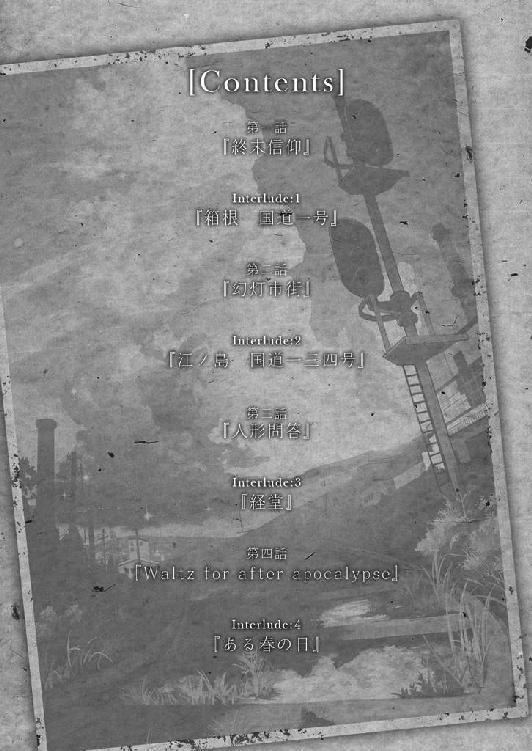
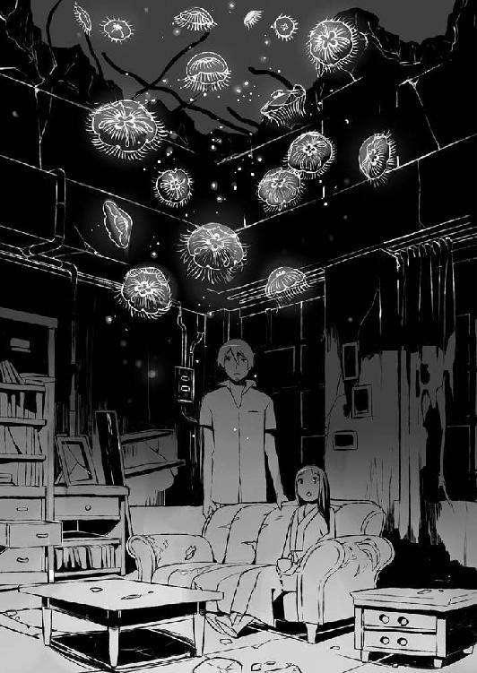
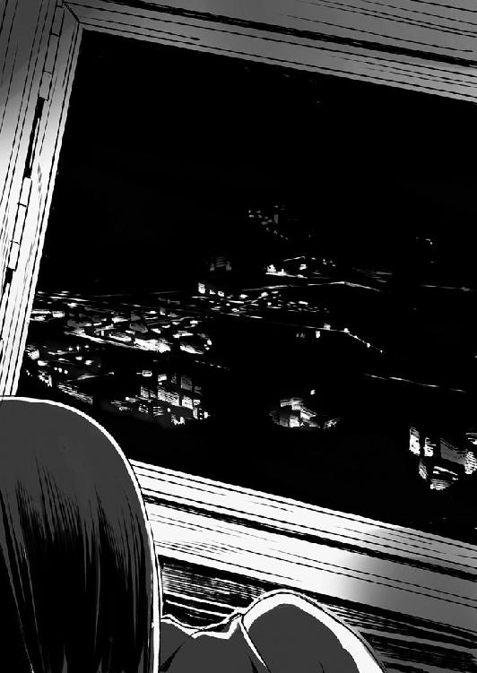
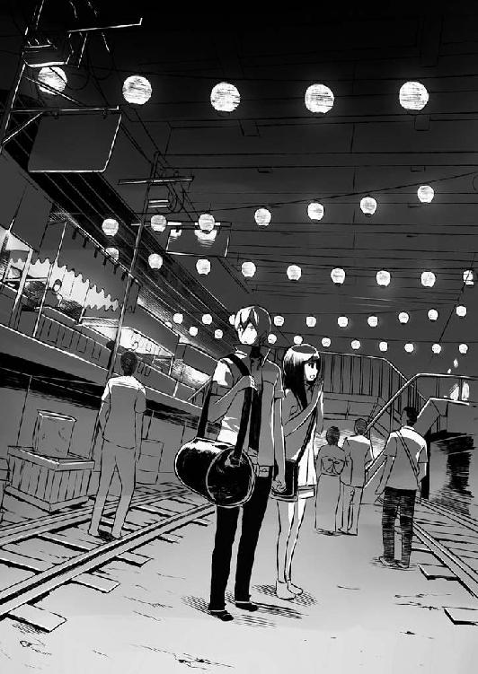
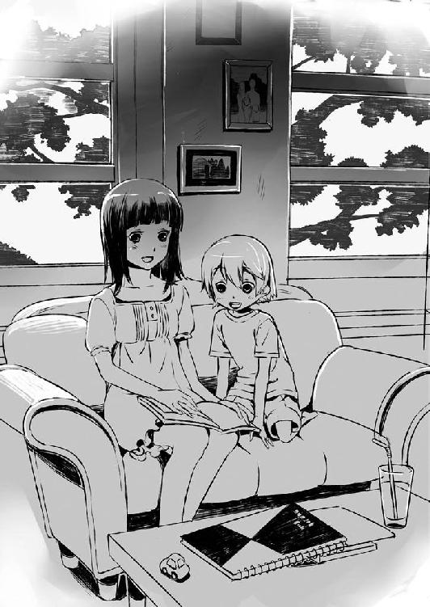
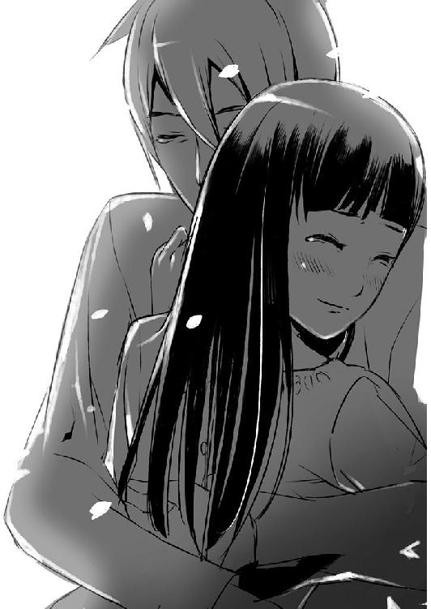

| 桜ノ杜ぶんこ ROUTER | |
| 西村悠 | |
| (2012) | |
桜ノ杜ぶんこ
ＲＯＵＴＥＲ
終わった世界と終わらない願い
西村 悠

第一話『終末信仰』
Ｉｎｔｅｒｌｕｄｅ‥１『箱根 国道一号』
第二話『幻灯市街』
Ｉｎｔｅｒｌｕｄｅ‥２『江ノ島 国道一三四号』
第三話『人形問答』
Ｉｎｔｅｒｌｕｄｅ‥３『経堂』
第四話『Ｗａｌｔｚ ｆｏｒ ａｆｔｅｒ ａｐｏｃａｌｙｐｓｅ』
Ｉｎｔｅｒｌｕｄｅ‥４『ある春の日』
第一話 『終末信仰』
悲しい夢を見た気がした。
けれどそれがどのような夢だったのかは、もう思い出せない。
ただ漠然とした胸の痛みばかりが残っている。
悲しくてしょうがなかった。このひどい喪失感はなんなのだろう。
目を開けると、彼女は海の底に沈んでいる。
海の底に沈んだ廃墟の一室、規則正しく並んだカプセル型の寝台の上に、彼女は横たわっていた。
紺色の世界に月明かりが差し込み、大きなクラゲが漂っている。
それで、自分も海の底に沈んでいるのだと彼女は思った。
天井の割れ目の向こうには、月が見えた。
月に照らされ、青白く輝く綿雲の群れが、風に吹かれてゆっくりと視界を横断していく。
うるさいほどの虫の声が聞こえている。穏やかな夜風が頬を撫でていく。
それではここは、海の底ではなく、地上なのだろう。ぼんやりとした頭でそんなことを考えている。
クラゲは海の中を泳いでいるのではなく、宙を漂っているのだ。
寝台の上で上半身を起こして、彼女はクラゲを見つめる。
──おはよう。
声が聞こえた。
──今日から、君は僕達の家族になる。
落ち着いた男性の声は、どうやら、月光に浮かぶクラゲが発しているようだった。
「......あなたは誰？」
思わず発した言葉に応える声はない。
ただクラゲはゆっくりと近づく。その身体の向こうに星空がかすかに透けて見える。まるで握手を求めるようにそれは触手の一本を伸ばし、彼女は自然と右手を差し出した。
クラゲの触手と彼女の右手が触れようとした瞬間──。
「触るな!!」
鋭い声に、伸ばした手を引っ込める。クラゲは声に反応するように、宙に滲んで消えてしまった。彼女はそれを、一抹の寂しさと共に見守った。
振り返ればそこに、男性が立っている。
細身で、背が高い。柔らかそうな灰色の髪はぼさぼさだった。歳の頃は二十代半ば程だろうか。面識はない。
どこか鋭いまなざしが彼女を見つめていた。
彼女は身体を強張らせる。
この人は、いい人なのだろうか。
それとも悪い人なのだろうか。
「......あなたは、誰ですか？」
彼は何も答えず彼女を見つめる。
自分の声は思った以上に小さく、虫の声に掻き消されて、彼に届かなかったのかもしれない。しかし改めて声をかけるのも憚られて、彼女はただ彼の視線を受け止めた。
「やはり、何も覚えていないのか？」
「え......？」
「......覚えていないなら、いい」
彼は感情を無理矢理抑えるように言った。
夜の薄闇の中で、彼の瞳は月を映して輝いている。その輝きには、複雑な感情が宿っているように思えた。優しさや安堵を思わせる表情、けれどその一方で、怒りや、ひょっとしたら殺意とさえ言える感情が、その瞳には宿っているような気がした。
彼女はこの人と昔どこかで出会ったと思った。
記憶を探ろうとして、重大なことに気付く。
探るべき記憶がどこにも存在しなかった。それは思いの外大きな衝撃を彼女に与えた。知識はある。日本語、物の名前、使い方、簡単な物理法則や数式、一般常識の知識は揃っている。今まで自分が寝かされていた寝台に書かれた文字も読めるし、その意味も理解できる。
『Ｃｏｌｄ Ｓｌｅｅｐ Ｄｅｖｉｃｅ 箱根・キ─八』
肉体の時間を止めて、望むだけの時間を眠り続けることのできる冷凍睡眠装置だ。形状からして第四世代型であることまでわかった。
しかし......『自分』にまつわる事柄は何一つ思い出せない。
どうして今ここにいるのか。今まで何をしていたのか。何が好きだったのか、どんな場所で育ち、どんな親に育てられ、どんな友達がいたのか。何一つ、思い出せなかった。
この、胸の底で疼く、理由のない悲しみや後悔の原因さえ、わからないでいる。
自分の過去についての歴史、あるいは物語とでも言えるようなエピソードは全て頭から抜け落ちていた。
突然『自分』というものがからっぽになったような思いに捉らわれる。
知らない部屋。知らない人。知らない景色。
心細くなりながらも、ただ彼を見つめた。彼は数歩近づき、彼女に手を伸ばした。
何をされるのかと、寝台の上で後ずさる。
「......立てるか？ 手を貸してやる」
一度は首を横に振り、自ら立とうとしたが足に力が入らなかった。
「無理をするな。まだ起きたばかりだ。......言葉は正しく伝わっているか？ ずっと人と話してこなかったから、自信がない。俺の言葉は正しく伝わっているか？」
この人が何者なのかはわからなかったけれど、少なくとも悪意はないような気がした。彼女は小さく頷いて、結局、彼の手を支えに立ち上がる。彼の手を離し、バランスを取りながら、なんとかひとりで立ち続けることができた。
彼はただじっと彼女を見つめているだけで、特に危害を加えるような様子はない。彼女は小さな声でありがとうと呟き、初めて少し、笑みを作った。
「......ありがとう」
彼女がもう一度小さな声で言うと、彼もかすかに目を細める。そこにどのような意味があるのかは、彼女にはわからなかった。
「行こう。ここはやたらと病痕が残ってる。面倒はごめんだ」
「病痕......？」
「後で、順を追って話す。とりあえず、歩けるか？」
彼は彼女に背を向けて数歩進み、ふと気がついたように彼女を振り向いた。
「歩けるか？」
二歩、三歩と恐る恐る足を動かしてみる。どうやら大分感覚が戻ってきたようで、足元は大分しっかりとしてきた。
小さく頷き返すと、彼は再びゆっくりと歩き始める。確信は持てないものの、おそらくこちらに気を遣って、速度を抑えているのだろうと彼女は考えた。
部屋を出て通路を歩く。どこか病院のような雰囲気だった。通路の左側には規則的に大きな窓がしつらえてあったが、硝子は割れて、虫の音が通路の中まで届く。月が作る格子の影が、通路に寂しく映っていた。
「......あの」
彼女は躊躇いがちに、前を行く彼の背中に声をかけた。彼が立ち止まることはなかった。けれど、言葉の続きを待つような沈黙が返ってくる。
「あなたは、私が誰だか知っているんですか？ 教えてください。私、なぜだかとても悲しいんです」
とてもひどいことがあったのは覚えている。何か悲しいことがあって、眠ったまま、もう起きないつもりで冷凍睡眠装置に横たわったことも、覚えている。考えるだけで涙を堪えなくてはいけなくなるようなことだったのに。では何が起きたのかという、感情を喚起させる原因だけが深い霧の中にあるようだった。
「ルータ」
「......ルータ？」
「お前の名前だ」
ルータ、ともう一度口にして、眉をひそめる。
「......ここは日本ですよね」
「国、という概念がまだあるのなら、そうなるな」
無感動な声がそのまま返って来た。彼の言葉には引っかかりを覚えたけれど、今は自らへの興味の方が大きい。
「ルータというのは、日本語の響きではないように思えます」
「そうだ。ルータは英語のルートから取ったらしい。ようするに道を行く者、というニュアンスだと聞いている」
彼の言葉が、胸に染みるように広がっていく。
ルータ、私の名前。口にしてみると確かにそれは、昔から聞いていたような、馴染み深いもののように思えた。
割れたガラスの一片を拾い上げ、月に反射させた。そこに映る女性は、黒い髪に黒い瞳を持っており、日本人のような目鼻立ちをしているように思えた。年齢は十代後半から二十代前半までの、どれでも通じるような気がする。
少なくとも、外国の人間ではない。
なぜルータなどという不思議な名前をつけられたのだろうか。そもそもその名前をつけたのは誰なのだろうか。この人はなぜ私の名前を知っているのだろうか。ひょっとすると、記憶を失う前の私を知っているのだろうか。
ひとつの事実は無数の疑問を呼び起こしていく。
彼女は逡巡した後、彼にひとつの質問をぶつけた。
「......あなたは、誰ですか？」
「シノツク」
彼は短くそう言った。なんとなく、答えは返ってこないような気がしていたので、彼の返答に彼女は少なからず驚く。そして振り返ったシノツクの言葉に彼女はさらに驚くことになる。
「俺は、お前に仕えることになっている」
言葉の意味が彼女にはまだよくわからず、ただ彼を見つめ返すことしかできなかった。
仕えるとはどういう意味なのか、どうして仕えなければいけないのか。私とあなたの関係はどのようなものなのか、多くのことを尋ねたけれど、彼はその全てを無視して、最後に言った。
「何も知らないのは、俺もお前と同じなんだ。冷凍睡眠装置が切れて、三年前に起きた。それ以前の記憶は何一つ残ってない」
彼は彼女に背中を向け歩きながらそう言った。低く、どこか感情を抑えたような声。
その声に、ルータはそれ以上の質問をやめた。
話を止めて、歩くことに集中する。通路にはところどころ、割れた窓から蔦が侵入している箇所がある。月明かりのよく当たる場所には、背の低い雑草さえ顔を出していた。月夜の底、窓から入り込む虫の音は遠くかすかな潮騒のように寄せては返す。
足音だけが、通路に響いた。
「ひょっとしたら、人類は滅びたのかもしれない」
廃墟となった施設の一室に彼女を案内すると、シノツクはそう語った。
窓のなくなった部屋に月明かりが入り込む。カンテラの温かな光が照らす室内とは別に外の景色はとても寂しく、どこか悲しい。
「人類が、滅びているのですか？」
「あくまで推測だ。ただ俺は、お前と俺以外の人類を見たことがない。無線を使って生き残りを探してはいるが、反応があったことはないな」
シノツクの言葉を聞いて、彼女は窓の外に視線を向ける。
明るい夜だ。外の様子は細部までわかる。青白い光の作る影さえ、はっきりと見えた。
この建物は、どうやら小さなくぼ地に作られているらしい。
豊かな草木を湛えた山が、窓の向こうの景色を塞いでいた。
この建物を取り囲むような山の向こうには、どのような世界が広がっているのだろうと、少しの間考える。
彼の話が事実なら、とても寂しくて静かな世界が広がっているのかもしれない。
部屋全体が吹き抜けのようになっていて、天井は七メートルほどあるだろうか。とても高いところにある。
大きな集会室のようなこの部屋に置かれた家具は少なく、中央に古いソファと、事務机が幾つか置いてあるだけだ。
壁の片側は大きな窓になっていて、月光が床に、窓枠の長い影を映していた。
壁際に作られた、いかにも手作りっぽい戸棚には、カンテラやカセットコンロなどが置かれていた。
殺風景な部屋だけれど、他の場所と違って、生活感があった。
どれくらい眠っていたのだろう、とルータは思う、建物の状態を見れば、数百年ということはないだろう。数年......それとも数十年だろうか。
目の前にいるこの男の人は、それを知っているだろうか。
「幻想病という病気を知っているか？」
突然の質問に驚きながら、彼女は小さく首を横に振った。
「どのような病気ですか？」
シノツクはソファに座るようにルータに指示すると、自分も椅子を軋ませて座る。
「全ての願いが叶う病だ」
彼女が座るのを待ってから、シノツクは言った。古いソファは、手入れが行き届いているらしく、優しくルータを包んでくれた。かすかに感じられるこの匂いは、シノツクのものだろうかと、彼女は少しだけ考える。
「ある時期から爆発的に流行りだしたんだそうだ」
シノツクはルータに視線を向けたまま語り続ける。
「誰も彼もが、申し合わせたように自然と発症し、それは全世界に広がった。その病気が原因で人類社会は追い詰められた。それから先のことは......俺には知るよしもない。目を覚ましたら、全ての記憶を失って、ここにいたんだ」
「あの」
彼女が声をかけると、シノツクは口を閉じて、彼女を見つめた。
「幾つか質問があります」
「......答えられるものには答えてやる」
シノツクの言葉に彼女は小さく頷いた。
「願いが叶うことと人類が滅びることと、どう関係があるんですか？」
彼の目に一瞬揺らぎのようなものが見えた。
「願いは例外なく全て叶う。その中には、自殺願望だって含まれる」
「では......人類は自殺して滅亡したというのですか？」
「早い話がそうなる。たとえば、誰かが『人類のいない世界』を強く望んだとする。それはそのまま現実になる。一瞬で人類は消え、幻想病も消え、人類の建てた建造物だけが後に残る。それならなぜ俺達が生き残っているのかは......俺にもわからない。俺が掴んでいる事実は、無線の答えがないこと。あの山の頂上から見える世界は見渡す限り無人だってことくらいだ」
シノツクの言葉は、ルータにはおとぎ話のように聞こえるのだった。
「......こんなに静かで穏やかなのに、人類が滅亡しているかもしれないだなんて」
人類が滅亡しているから、静かなんじゃないか。彼は視線を下げて呟いた。
「俺の推測が外れていることを祈るばかりだ」
もし彼の言うとおりなら、それはとても悲しいことなのだろう。
そう思う一方で、彼女自身は漠然とした寂しさを抱くだけだった。
あまりにも話が大きすぎて、いまいち現実味がなかった。
ひょっとしたらこれは夢の続きなのかもしれない。自分はまだ冷凍睡眠装置に横たわって、眠っているのかもしれない。
そんなことをぼんやりと考えてしまう。
「シノツクさんは、どうしてそんなに色々なことを知っているのですか？ 私と同じ、記憶喪失だったはずなのに」
ほんの一瞬だけ、シノツクは視線を逸らした。何かを考えるような、かすかな違和感をルータは覚える。
「この施設は幻想病についての研究所だったらしい」
今度はまっすぐにルータを見つめて、彼は言った。
「幻想病によって世界がズタズタになっていく様が、コンピュータに記録されてた」
「三年間、ここにいたんですか？ ここを出ようとは思わなかったんですか？」
彼はしばらくどう答えようか考え込むような素振りを見せ、それから口を開いた。
「さっきも言ったが、俺はお前より三年早く起きた。朝起きたら、人類が滅亡してて、自分は記憶を失ってた。俺の名前、お前の名前、俺がお前に仕えなきゃいけないということしか覚えていなかった」
だからお前を置いて、ここを離れるわけにはいかない気がしたんだ、とシノツクは語った。
「......起きたときの心細さはお前と同じだったと思う。自分が何者なのか、この世界に何が起きたのか。わからなかったから必死で調べた。幸い、ここの施設にはそういった資料が多くあった。まあ、その他の生活一般に関する知識の方が、百倍役に立ったが」
彼は何かを思い出すように目を細める。その横顔はどこか寂しそうでもあった。
そうか、と彼女は思う。
自分は、この人よりずっと幸運だったのだ。
少なくとも今、自分には名前を呼んでくれる人がいる。
シノツクはまた彼女を見つめる、親しみを感じさせる笑み。けれど目の奥には、それだけではない複雑な感情が渦巻いているような気がした。
「この施設にいれば、生活には困らない。食料も衣服も医療品もたっぷりある。とりあえず、当座のところはな」
彼は、風呂に入って来いと言った。
「お風呂、ですか？」
「箱根湯本はもともと温泉街だったんだ。今でも湯は出る」
彼はルータに、この施設を歩く上で、幾つかのことを教えてくれた。
「その間に食事を用意しておく」
シノツクの言葉にありがたく頷いて、彼女は立ち上がった。
もう一つ忠告だ、というシノツクの言葉に、ルータは再び彼を見つめた。
「立ち入り禁止と書かれた場所には絶対に入っちゃいけない」
「......何かあるんですか？」
「あそこは危険なんだ」
「危険とは、なんですか？」
「傷みがひどくてな、崩落の危険がある。近づかなければ平気だ」
それなら近づかないようにしようと、彼女は頷いた。
「ああ、それから──」
何かを思い出すように、シノツクは少し笑う。
「浴場では少し驚くことがあるかもしれないが、安心していい。少なくとも、俺は襲われたことがない。ただ、触れようとしたり、変に刺激しない方が身のためだな」
なんのことかと何度か尋ねたけれど、彼は何も言わなかった。
シノツクの指示どおりに、彼女はゆっくりと通路を歩いていく。
用意された運動靴はとても履き心地がよく、ゴムに似た素材なのに通気性もいい。ムレたりする心配はなさそうだ。
この施設は、かなりの広さを誇っているようだった。目的の場所に向かうために、もう十分ほど歩いている。
廃墟としか言い様がないが、昔は立派な施設だったのだろうと彼女は思う。
通路はところどころ、天井や壁に穴が開いており、外の木の枝葉が天井の穴を覆っていた。そこから虫の声が漏れ聞こえてくる。
木々の枝葉が作る青い光の網を潜り、ゆっくりと歩いて行くとやがて『入浴場』と書かれた錆びた看板を見つけた。
この辺りは木造だ。どうやら古い旅館の一部を想定しているように思える。
不思議と建物の傷みは少なかった。
看板の下には温泉の効能が記されており、ここのお湯が、箱根の温泉から引いたものであることを示していた。
その通路の暫く先に、家具を積み上げて作ったらしいバリケードが築かれていた。立て掛けられた板に、立ち入り禁止というステッカーが貼られている。
先程の彼の話のとおり、ここから先は老朽化が激しくて、崩落の危険があるということなのだろう。そんなことを考えながら、彼女は入浴場ののれんをくぐった。
脱衣所には棚があり、かごが幾つか置かれている。壁に取り付けられた扇風機は、スイッチを押してみたがつかなかった。電気系統は総じて死んでいるようだ。
暗闇の向こうに、もうひとつカンテラの光が点っている。一体何があるのだろうと緊張したけれど、よく見てみるとそれは、鏡に映った自分の姿だった。
肩までまっすぐに伸びた黒髪、黒い瞳。やはり、どこからどう見ても、日本人だ。
全体としてルータなどという名前がつくようには思えなかった。歳は二十代のどこかであるように思われる。何年も眠っていたというわりには顔色もよく、健康体であるようだ。
小さく息をつき、鏡から目を転じ、彼女は入浴の準備を始めた。
温泉は肌に気持ちよく、湯につかっているだけで、生まれ変われたような、とても幸せな気持ちになれた。
やがて風呂から上がった彼女は、シノツクに言われたとおり、脱衣所に置いてあったカンテラを手に脱衣所を後にしようとしたときだった。
息を呑み、彼女がその場に立ち尽くした。かろうじてカンテラを取り落とさないですんだだけでも、幸運だった。
うっすらとした夜闇の中、巨大なクラゲが群れをなしていた。
それはまるで水の中のように触手をゆらゆらと揺らし、宙を漂う。
クラゲ達自体が、かすかに青く発光していた。
目覚めたときに見た、あの生物だ。少し、懐かしい気がするのは、なぜなのだろう。
「どうして......クラゲが......？」
カンテラの光に照らそうと、ゆっくり近づくと、クラゲ達はまるで、水に溶ける絵の具のように、光に滲んで消えてしまった。
「......幻......」
目をいくら擦ってみても、辺りには一層深まった闇があるだけだ。クラゲがいなくなった辺りに手を伸ばす。
恐ろしいという気持ちはほんのかすかで、心の大半は不思議な出来事に対する純粋な好奇心で満たされていた。
あのクラゲ達、どこか懐かしい気がするのはなぜなのだろう。彼女はカンテラに照らされる空間を見つめて考え続ける。
私が冷凍睡眠から目覚めたとき、クラゲはこちらに呼びかけていた。
──おはよう。
──今日から、君は僕達の家族になる。
あれは、まだ寝惚けていた私の夢の声なのか。それとも、実際にあのクラゲが発したものだったのか。
あの幻は、実際に現れたものなのか、それとも存在そのものが、私の空想の産物なのだろうか。
彼女はクラゲ達の消えた後をしばらく見つめていたが、何の変化もないことに小さく息を吐き、シノツクの待つ場所へと向かった。
「クラゲを見たか」
彼の元へ戻り、自分の見たもののことを話すと、彼は訳知り顔で頷き、そう言った。勘違いだろうと笑われるか、冗談に取られるかと思っていたのだけど、シノツクは納得したようにもう一度頷くばかりだ。
「そういうこともあるだろ」
「気にならないのですか？」
「ならないね。ほら、飯にしよう。準備はできてる」
「今はまずあのクラゲを調べた方が──」
「まずは、飯だ」
目の前に出された皿から漂ういい匂いに、彼女は思わず黙ってしまった。
彼が用意したのは薄味のスープだった。冷凍睡眠とはいえ、長い間眠っていたのだから、身体が驚かないように、刺激の少ないものがいいだろうということだった。
「簡単なものだけどな」
彼はそう言うけれど、この部屋に満ちた香りは、嗅いでいるだけで、唾が湧き出てくる。
電気式カンテラの光の中で食事をする。
スープは驚くほどのおいしさだった。一口飲むごとに、香りが口の中に広がって頬が痛くなった。とてもおいしい。
「ルータ、あんまり急いで食べるな。身体が驚く」
彼女は驚いて顔を上げ、シノツクを見つめる。
「......なんだ？」
「私の名前」
「ああ、お前はルータだ。さっき、そう教えなかったか？」
「いえ......なんでもありません。シノツクさん」
自分の名前を呼んでもらえるというのは、嬉しいことだと感じながら、彼女は言った。
彼は小さく息を吐くと、立ち上がって机の引き出しから白い布を取り出した。
「拭け。スープのタマネギが口についてる」
その言葉に慌てて口元を隠した。シノツクの差し出した布で口を拭き、礼を言ったあと、改めて彼を見つめる。カンテラの橙色の灯は、彼の顔を光と影に塗り分けている。ぼんやりとカンテラを見つめながら食事をする彼はかすかに目を細めて、遠い思い出を懐かしんでいるようにも見えた。
睫毛は長く、全体に細身で、どこか女性めいた印象があるなと、なんとなく、考える。
「クラゲ」
彼は不意に顔を向けてルータに言った。ルータは、じっと彼を見ていたことになぜか罪悪感を覚えた。
「......クラゲが、どうかしたのですか？」
質問に質問で返すと、彼は小さく息をついて、ルータを試すように見つめる。瞳の中で、カンテラの光が輝いていた。
「さっきの話だよ。お前が見た幻の話。あれの話をしてやろう」
彼はそう言うと、カンテラの光を消した。
突如として、押し包むような暗闇が迫ってくる。
一体どうしたのかと尋ねようとして──。
彼女は目の前に現れた光景に声を失い、思わず立ち上がった。
無数のクラゲが宙に浮いていた。
まるで自分達の方が、深い深い海の底に沈んでしまったようだと、彼女は思う。
無数のクラゲが赤や青、あるいは緑に光りながら、無数に、思い思いに宙を漂っていた。
天井は消えてしまったかのように遙か頭上の彼方まで、暗闇を泳ぐクラゲの群れは途切れることなく広がってる。
「すごい......」
「幻想病の症状の一種だ。ここにはクラゲの幻が現れる。月の綺麗な夜には必ず出てくるんだ。あいつら、月の光の中でしか発生できないらしい」
ぼそりと言うその言葉に、ルータは思わずシノツクを振り返る。
「......あなたも、幻想病の発症者なのですか？ これは、あなたの無意識の願望を表しているのですか？」
「どう思う？」
シノツクはまっすぐにルータを見つめた。思いの外、真剣なまなざしだった。
そんなことが、彼女にわかるわけがなかった。どう答えていいかわからないと思っていると、彼の方から視線をそらし、上に目をやる。
つられてルータも、天井を見つめた。

ゆらゆらと揺れる光点はどこまでも遠くまであり、水の底から見上げる星空のように見えた。
「俺は幻想病の発症者じゃない。これは幻想病によって現れる症状のひとつで病痕という」
「びょう......こん？」
「願いを叶えたいという想いがあまりにも強いと、発症者が死んだ後も、症状だけがこの世界に残ることがある。残留思念とか、幽霊みたいなものと説明した方が早いのかもしれない。その人間の想いだけが、行き場もなく、未だにこの世界を漂ってるわけだ」
「幽霊、ですか」
「あくまで『みたいなもの』だ。この現象そのものに意志はない。ただ機械的に、発症者の願いを叶えようとし続けてる」
この美しいクラゲと同じ現象に、人類は滅ぼされた......。
そう思うと、この光景を美しいと感じるのと同時に、恐ろしいもののようにも感じた。
「このクラゲは、どのような願望の現れなのでしょう？」
「さあ......自由への憧れ、変身願望、あるいは思い出の発露。色々考えたが結局わからなかった。幻想病が叶える願望は、無意識にあるものがほとんどだ。幻想病が叶えようとしている願いが何かは、本人にもわからないことが多い。まあピンとくることもあるようだが」
耳をすませば、彼の言葉の向こう側で、かすかな音がしている。金属音だ。水の入ったグラスを、金属の棒で弱く叩くような音。
幾つかの音に別れて鳴っている。その音はどうやら、クラゲが傘を動かして、空中を移動する際に出している音のようだった。
その音はでたらめなようにも思え、一種の音楽のようにも聞こえた。
「きれいだろ」
「でも、少し怖い......」
「こうやって眺めてる分には、何もしてこない。安全だ」
まあ、わかる気はするけどな、と彼は言って、カンテラに灯を灯した。闇に慣れた目には、その光はとても強く感じられた。
あれほどいたクラゲ達は消え去り、彼女達は暗い海の底から、廃墟の中へと戻っていた。
「なんだか、別の世界にいたみたいです。たとえばそう、夢の世界のような」
「確かに......この世界全体がもう、夢みたいなものなのかもな」
彼の言葉にルータは小さく頷く。
「人の願望によって、世界は作り替えられた。知ってるか？ 俺が起きてから三年の間、この夏はずっと続いてるんだ。きっと世界が終わったときからずっと夏だったんだろう。この世界全体が、永遠の眠りについた人類の夢の中にあると言ってもいいのかもしれない」
彼の言葉に、彼女は思わず目を見張った。三年間、夏が終わっていない。それは自分の知っている常識からはかなりかけ離れた出来事だった。
ルータの反応を見て、彼は一瞬だけ表情を緩めたように見えた。
「外は病痕で溢れてる。こういう無害なものだけじゃない、人間に襲いかかってくるものだってある。ただ、ここは安全だ。少なくとも今まで、害意のある病痕にはあったことがない」
「外には危険な病痕があるんですか？」
「いくらでもある。なにせ、文明が崩壊するほどの現象だからな。俺も何度か殺されかけたよ」
彼女は思わず身体を震わせた。シノツクはそんな彼女の様子を見て、だから、と言葉を続ける。
「まずはお前に一通り、生きていく技術を教えたい。もちろん、俺にできる限りで、だが。旅に出るために必要な、最低限の知識くらいは教えられるはずだ。旅の道連れが足手まといじゃ、助かるものも助からなくなる」
「いつか、ここから出て行くつもりなんですか？」
驚いて尋ねると、彼は頷いた。
「食料はある程度自給できてるからいいとしても、電気や燃料の問題もある。永遠にここにいられるわけじゃない。それに......確かめたいこともある」
「確かめたいこと？」
彼は小さく頷き、ルータの目をじっと見つめた。その瞳には強い輝きが宿っている。
「人類はどこに行ったのか。それとも人類が死滅してしまったのか」
東京には巨大な地下シェルターがあって、そこでは音信不通になる直前まで、幻想病の研究が行われていたのだと彼は語った。
じりじりというカンテラの音が、逆に闇を強調しているように思えた。
今なら、人類の生き残りは自分達二人だけだと言われても、素直に信じられる。
「生き残りが別のところに、まだいるかもしれない」
彼の言葉は、あまりピンとこない。
私は別に、このままでもいいな。
そんなふうに、ルータは心のどこかでそう考えている。
事実を知って絶望するより、曖昧なままにして希望を持ち続けたい。
ここから離れたくないとルータは思う。過去がなく、自分の正体もわからないルータは、今見たクラゲのように、宙をゆらゆらと漂っているような気分だった。こんなに曖昧で頼りない気持ちのまま、危険があるらしい外の世界に、旅に出ようという気持ちにはなれなかった。
なにより......。
なぜか自分は、この場所で廃墟と共に朽ち果てた方が、幸せなような気がした。
失ってしまった記憶の名残がそんな感情を喚起させるのだと、彼女は思った。
その夜。
彼女はシノツクに割り当てられた小さな部屋に入った。オフィス机と壁に備え付けられたベッド、それから小さな棚が置かれた簡素な部屋だ。シノツクが定期的に掃除をしていたのか植物の侵蝕などはなく、窓には傷のないガラスが填め込まれている。
比較的痛みの少ない場所を自分の寝室として割り当ててくれたのかもしれないと彼女は考え、彼の気遣いに感謝した。
ベッドに仰向けになって、天井を見つめる。目覚めてから数時間で起きた様々なことを思い返すのに忙しくて、眠気はいつになってもやってこなかった。
ひとりになって、多少落ち着きを取り戻した彼女は、繰り返し繰り返し、自分の心の中を探って、残っている記憶の残滓がありはしないかと考え続ける。
けれど、思い返そうとすれば思い返そうとするほど、思い出など、何ひとつ残っていないことを思い知らされた。大切なものだったはずだ。たくさんの思い出を、全て過去に置いてきてしまった。
「何も......思い出せない......」
小さく呟くと、途端に視界が滲んだ。失ったものの大きさだけは、よくわかる気がした。身体の中に、巨大な空洞ができていて、そこには昔、幸せな記憶が詰まっていたということだけはよくわかっている。
幸せだったのだ。自分の周りには確かに大切な人がいた。その人達は今、どこにいるのだろう。何をしているのだろう。
私は何を受け取り、何を考え、どうして今ここにいるのだろう。
絶対に忘れたくはないと思っていた思い出の数々が、絶対に忘れたくないという感情だけ残して消えていた。
それはとても心許ない感覚で、自分という存在がいかにも不確かで、頼りない存在であるようにも思え──。
──ルータ。
「え......？」
突然響いた声に上半身を起こすと、そこには宙を漂うクラゲがいた。幻想病のクラゲだ。それはただ無目的に、月明かりを透過しながら、目の前にゆっくりと浮かんでいる。
──ルータ、見てごらん。ほら、とても美しいだろう。
声は頭の中から聞こえてくるような気がした。
声をかけようかとためらっているうちに、クラゲは消えてしまった。
彼女はただ、月光に切り取られた壁を見つめ、それから小さく息をつく。
そのときにはもう、ほとんど確信に近いものを彼女は感じていた。
クラゲは、自分の失った思い出と、何か関係があり、自分が何者であるかという、自らを構成するために最も必要な情報の手がかりを握っている。
クラゲ達の秘密を解こう。
あれが幻想病の病痕なのだとしたら、元々、クラゲ達をこの世界に現出させたのは誰なのか。どのような願いの現れなのか。
クラゲ達は多分、自分に関わりがある存在なのだ。
秘密が解ければ、私の失われた過去も取り戻せるかもしれない。
彼女はそう考え、ひとり涙の跡を拭った。
シノツクの宣言どおり、翌日から彼女の勉強は始まった。
廃墟での朝。
昨日食事を振る舞われた、天井の高い、やたらと広い部屋の中央に、ぽつんとあるオフィス机、そこには大きな地図が広げられており、二人はそれをじっと睨みつけている。
「俺達がいるここは日本の関東、神奈川の箱根湯本って場所だ」
関東地区の巨大な地図には、かなり細かな地名などが記されている。
「で、俺達はこの箱根湯本から通る国道を出発して、ここに向かう」
彼が指差す一点には東京、代々木と記されている。
「前にも言っていました。生き残りの人がいるかもしれない場所ですね？」
彼は、ああ、と呟いた。なぜか、彼女には少し引っ掛かる反応のようにも思えた。
「とにかく、ここに行こう。そうしなけりゃいけない。そのためにはまず、やっぱりお前に逞しくなってもらわなきゃ困る」
「......はい」
ルータの目には、シノツクはどこか焦っているように映った。その理由を彼は話そうとする気配がないし、話したくないなら、今は聞かないでおこうとルータは考える。
今はまだ、自分と身の回りのことを知るだけで手一杯だった。
「ちなみに、この地図はほとんど役に立たない」
「え？ どういうことですか？」
意外な言葉に、彼女は現実に引き戻される。
彼は地図を折りたたみながらルータを見つめた。
「なんでだと思う？」
「......橋や道路が老朽化して使えなくなったから......とかですか？」
突然の質問にまごつきながら答えると、彼は当たらずとも遠からずだと言った。
「幻想病のせいだ。そのせいで道路がイカれたところもある、というのは事実だ。ただ、それ以上の問題もある」
そう言ってシノツクは机から手の平サイズのディスプレイを取り出した。
「これは？」
「情報端末。もうネットには繋げないから、端末というのもおかしな話だけどな」
情報端末、という言葉は彼女の記憶の中に知識として存在していた。この情報端末は、この研究所の職員に配られていたものだ。研究施設内部の情報網に接続してデータのやりとりをしたり、ネットに繋いだりすることもできる。
ふと彼女は、自分がこの研究施設の通信システムを熟知していることに気付く。どこにどのようにアクセスすれば、どんな情報が引き出せるのか、理解していた。
......そうか。私は随分、この施設に詳しい人間だったらしい。冷凍睡眠装置についても知っていた。ひょっとしたら、ここの研究員だったのかもしれない。
「ネットには繋げられないんですか？」
「通信網はとっくに死んでる。この研究所だけじゃなくて、世界中がそうなんだろうな」
「それは、どういうことなのでしょうか。整備する人々は、どこに行ったのでしょう」
「わからない。みんないなくなった、と考えるのが妥当だろうと思う。以前言ったとおりだ。おそらく、人類の文明はもう消えてなくなってる」
彼の言葉が事実なのだとしても、私はそれほど悲しくはないな、と彼女は思う。
大事なのは、今私がここにいて、シノツクさんがいて、住むところがあって、今日食べるものに困らなくて、毎日がとても楽しいということ、それだけわかっていれば充分だった。それに......自分に最も必要なのは『自分を知ること』だ。今は他のことにまで気は回らなかった。
おそらく、と彼女は考える。
人類の滅亡に関して自分がこれほど無関心なのは自分から、大切な仲間、という概念が欠落しているからだろう。人類、仲間、絆、それらの言葉に対し、具体的な経験や感情が一切欠落している。
だから人類が滅亡しているかもしれないということを信じたとしても、自分はそれほど悲しまないだろう。
生まれてからずっとひとりだった者に、その寂しさを嘆くことはできない。ひとりじゃないということが、どういうことかわからないから。
私もきっと、それと同じで......。
「どうした。ぼーっとして」
彼の言葉に我に返る。
「すみません。新しい知識や、考えなければいけないことがあまりにも多すぎて」
「いや、いい。俺も最初はそうだった」
彼は表情ひとつ変えずに言って、ルータの思考を見透かすように、彼女の瞳を見つめた。
落ち着かない気持ちになり、何を話すべきか考え、彼女はもう一度口を開く。
「この世界のことを教えてください。ついていけるように頑張りますから」
彼女の言葉に頷きながら、シノツクは端末を操作した。
「これを見てみろ」
シノツクが渡した端末には航空写真が表示されている。
しかしこれは、記憶にはない地形だった。
「これはどこの地図ですか？」
「関東だ。まだ通信網が生きてた頃に撮られたものだな」
「......この真ん中の大きな茶色の円はなんですか？」
「クレーターだ。でかい隕石が降ってきた、という事実もないのに、一夜にして出来上がった、と言われていた」
「......この、神奈川らしきものの真ん中にある大きな水色はなんですか？」
「当時は琵琶湖二号と言われていたらしい。形がそっくりだったんだと。まあさすがに大きさまでは同じってわけにはいかなかったみたいだけどな」
少しの間、言葉を失う。
自分の持っている知識と照らし合わせても、関東地方はとんでもないことになっていた。さらに、彼女はまず自分の知識を疑い、その後シノツクがウソをついているのではないかと疑った。しかし、自分の知識を疑ったところで客観的に検証できる方法があるわけではなく、シノツクが自分にウソをつくことに対しても必然性を見いだせない。
しばし、地図を睨みつける。
縮尺はよくわからないけれど、関東は本州から切り離されている。
関東地方は、四国のように島になっていた。
呆然とその航空写真を見つめた。自分で推測したとおりの結果とはいえ、目に見える形で答えを提示されると、やはり驚く。
「これも地形変化の過渡期に撮ったものだと言われてる。今はもう、どんな状況になってるのか想像もつかない。実際歩いてみないとわからないな」
彼女はしばらく航空写真を眺めた後、顔を上げた。
「世界は、すごいことになっているのですね」
「気がつくのが遅いな」
シノツクは少し呆れたように言って、机からまた、何か道具を取り出した。
大きなナイフだ。彼は鞘から刃を引き抜いた。拳二つ分はあろうかと思われる黒塗りの刃には、思わず後ずさるほどの迫力があった。
「これは特殊な金属から削りだしたナイフだ。かなり昔に流通していたものだな。丈夫で長持ちするし、便利だ」
そう言って再び鞘に収めたナイフを彼女に差し出した。
「これはお前が持っておけ」
「なぜですか？ こんな怖いもの持ちたくありません」
「別に護身用にだけ使えって言ってるわけじゃない。あれば色々便利だぞ」
「色々......」
「必要な道具を作ったり、野外で一時的な避難所を作ったり、穴を掘ったり、捕まえた動物を食べるときにさばいたり、何かと役に立つ。それにやっぱり護身用にもなるしな。何かあったとき、手ぶらでいるよりは冷静さを保てる」
そこまで言うならと、彼女はナイフを受け取った。思ったより軽く、手に馴染む感覚に心強さを覚えないと言えばウソになる。
「使い方はおいおい教える。明日からは本格的に色々な知識を教えるからな」
「今までのはなんだったのですか？」
「今までのは常識の勉強だ。お前は非常識だったからな。人類最後かもしれない女がそれじゃ、あまりにも情けないだろ」
彼の言葉に、彼女は大いに不満を覚えた。
シノツクは彼女の反応に構うことなく、情報端末を少し弄った。
「お前には、俺の知っていることを全て話しておく。途中で俺がいなくなって、お前がたったひとりになったとしても、道に迷わなくてすむように。完璧に、とは言わないまでも、なんとか生き抜くことができる程度には」
彼はまっすぐにルータを見つめる。その表情の真剣さに、ルータも少し居住まいを直して、改めて彼を見つめた。
まるでいつか、私がひとりになることを確信しているようだと考えながら、彼女はその視線を受け止める。
どういう意味かと尋ねるより早く、シノツクは口を開いていた。
「どうしてこの世界がこんな状態になってしまったかは、ある程度わかっているつもりだ。知ったところでなんの得もないが、聞きたいならもう少し詳しく説明してやる。どうする」
考えるまでもなく、彼女は頷いていた。
幻想病と、今度はこの世界の関係性について、シノツクはルータに詳しく教えた。
この研究所に残っていたあらゆる資料から浮かび上がる事実とそれらを推測によって補ったものがシノツクの見解となった。シノツクの言葉には説得力があり、彼の見解はおそらくほぼ現実に沿っているのだろうとルータも考えていた。
全ての始まりがどこにあったのか、それは誰にもわからない。伝承に伝えられる神や悪魔、あるいは『復活』に代表される奇跡。
この世で起きたとされる超常的な現象の全ては、起源を辿れば全てこの幻想病にあったのかもしれない。
あらゆる物理法則を無視して現れる奇跡を、一種の病気として人類が初めて認識したのは二十世紀に入ってからのことだった。
幻想病の発症は同時多発的に起きた。南米、ロシア、そしてこの日本にも発症者が現れた。それぞれの国は最初、この症状の発症者を極秘事項として扱った。あらゆる法則を無視して発症者の願望を叶えようとする幻想病は、他国に明かすにはリスクが大きすぎたのである。そのため、それが世界規模で起きた現象であると気がつくのはそれから大分先のことになる。最初の三人はその危険性を恐れた政府によって隔離、監禁され、非人道的な実験の対象となった。
この現象は、一時的なものではなく、時と共に増加の傾向を辿った。二十世紀末まで、最初の三人以降、発症者が現れることはなかったが、二十一世紀に入って緩やかに増え始めることになる。政府に保護された者だけでも、全世界で二十人を超えている。
世界規模で人類が終末の危機に立たされた最初の事件は一九九九年の夏のこと。
当時、太陽系の惑星が十字に並ぶグランドクロスによって地球の潮汐力に壊滅的な影響が現れるという説が囁かれていた。実際には科学的な根拠のない風説程度のものだと専門家に言われていたが、これが幻想病によって実際に引き起こされかけた。しかし発症者が殺害され、病痕も現れなかったため、状況は収束した。
全世界的にその存在が知らしめられたのは、二〇四二年の春。ヨーロッパとアフリカのある都市から、一夜にして人間が消えるという事件が起きた後のことである。
このとき、二つの都市での行方不明者は二四万人を超えたと言われている。
事件を受け、その危険性や重要性を再認識した各国政府関係者が、この現象の情報をネット上にリークすることで、その原因となる特殊発症者はおよそ考え得る限り、最悪の形で露顕することとなった。
『無意識の願いを叶える病』は幻想病と名付けられ、発症者は危険人物としてヒステリックな魔女狩りの犠牲となった。発症者の特定は、当初、現実に影響を及ぼしている現象と発症候補者との関連性を各種心理テストによって類推するという極めて繁雑で頼りない方法に頼っていた。しかしその後、幻想病の発症者には特定の脳磁場のパターンがあることが発見され、微弱な脳磁場を簡易に計測できる計測機器が開発、発症者発見のために運用された。
とにかく幻想病は爆発的な広がりを見せた。世界中、あらゆる場所に発症者が現れ始め、彼らの無意識の願いは現実を大きく歪め始めた。
多くの場合、それは夢のように脈絡のないものであることが多く、発症した本人でさえ、なぜこのような現象が自らの願いなのか、理解できないことが多かった。
多くの現象は、破壊や憎しみという衝動を裏付けるものだった。それらは形容しがたい怪物としてこの世界に作り出され、あらゆる場所で人類は脅かされ始めた。
これを、人類という存在の根底にあるものが『悪』である証左とする哲学者は後を絶たなかったようだ。
幻想病の研究が進められると、この病には既知のいかなる感染ルートも存在していないことが発見される。
これにより、二つの見解が示された。
この病が、人類が精神を複雑化させていく過程で得た、一種の超能力であるとするもの。いわゆる知的進化の一階梯であるという考え方。
もう一つが、全く未知の感染ルートを持つウィルスであるとするもの。
二方面からの研究が進められ、いずれの研究からも、幻想病の発症者のうち、重度の症状が出る者については、これを法的に人間と扱わず、殺処分することが合理的であるという結論が発表された。
そしてこの結論は、最初期こそ反発が大きかったものの、やがて人々に受け入れられ、徐々に法制度として組み入れる国が出始めた。
このようにして、人類はそれから長い期間をかけてこの病に抵抗し続けた。幻想病の存在は国際関係に大きな混乱をもたらし、様々な地域で、国家間の争いの引き金となった。
しかし幻想病の蔓延が人類存亡に関わる危機的状況をもたらしたことによって、やがて人類は国境を越えて協力態勢を整える。全人類に及ぶ危機によって初めて世界的な意志の統率が実現されたことは、皮肉なことである。
このとき世界人口は、最盛期の八十億人から八割減少し、十五億人以下となっていた。
人類は、発生した現象が悪性の場合にのみ、軍事力をもってこの現象を叩くか、あるいは発症者を殺害することで現象を消すかのどちらかの方法を行ってきたが、幻想病との戦いに有効な治療法は見つからず、やがて人類は少しずつ疲弊していった。
発症者が死亡しても、幻想病によって発生した現象はその『想い』の強さを消費しつくすまで消えることはない。これは『病痕』と呼ばれ、幻想病の厄介な特性のひとつとして人々に認識された。
病痕が現実に与える影響は、発症者が生存している時と同様、様々なバリエーションがあり、病痕の数だけ異なった現象が起きるといっても過言ではない。たとえばクラゲの幻を見せたり、人間が消えたり、一定地域内が無重力状態に陥ったり、その現象は突拍子もなく、脈絡もない。だからこそ、人類社会に甚大な被害を与えることも多々あった。
幻想病によって汚染され、立ち入ることができなくなった地域が拡大し始め、やがて国が分断されることも多くなった。
それは瞬く間に増加し、世界中の地図を、立ち入り禁止の赤色に塗り潰していく。
『終末』という言葉に、説得力が備わりだし、宗教に走る人々も珍しくはなかった。
しかし......人類の大半は希望を捨てず、大規模なシェルターを作り、幻想病の研究を続けた。
人類社会の終りは唐突に訪れた。それは皮肉にも、日本のある研究所が、幻想病の治療法を発見したと報告したその日だった。その日、何が起きたのかの記録はない。その日以降、一切の記録が残されていないのである。少なくとも、シノツクの手の届く範囲の資料には、その日以降の記録はない。
ではその文明の消失から今日まで、どれくらい時間が経っているのか、これに関しては全くわからないと言っていい。
どの電子機器もシノツクが復旧させるまで永い眠りについていたらしく、表示されている日付はそれぞれ全く違っていた。
しかしこの建造物の劣化の程度や自然の侵蝕の度合いなどから考えると最低でも数十年は経過していると考えられた。建物に使われている鋼材の錆の侵蝕や、内壁、外壁の亀裂などの損傷具合から、かなり長い間放置されていることが窺えると、彼は情報端末に表示した建物の経年による劣化のデータを指差しながら言った。
しかしながら、山を越えた場所にある箱根湯本の町には、依然として木造住宅が存在することから、文明が消えてから百年を超えることはないだろうと、シノツクは持論を展開した。
シノツクはこれらの内容について、あらゆるデータを情報端末に示して、事実、あるいは事実からの類推を用いて詳細に語り、必要があればその根拠をひとつひとつ提示してみせた。
ルータにとって、それはどれもこれも初めて聞く話ばかりだった。
「幻想病について、俺が知っていることは全て話した」
語り終えて一息ついたのち、シノツクは最後にそう口にした。
辺りはすでに夕暮れに包まれている。寂しさを喚起させるような虫の音がガラスの填っていない窓の外から聞こえて来た。
いつの間にか、かなりの時間が経過していたらしい。シノツクは窺うようにルータを見つめる。彼女が首を傾げると、いやなに、と呟く。
「俺の語ったことは、全部この施設にある資料や本の知識から推測したものに過ぎない。事実ではない部分も多々あるだろう。しかし......もう一度確認するが、お前、本当に何も覚えていないのか？」
「申し訳ありません......」
ルータが頭を下げると、シノツクは小さく首を横に振る。どこか少し、ほっとしたように見えるのはなぜなのだろう。
日が落ちると食事の時間だ。
その夜も前夜と同じように、言葉少なく食事を済ませた。缶詰めを開いて火を通したものと、インスタント食品だった。彼が山で採ってきた野草を使ったスープを、ルータはとても気に入った。
スープを啜りながら、カンテラに照らされるシノツクの横顔を彼女はじっと見つめる。なぜだろう。この人には何か、秘密があるような気がする。彼は肝心なことを自分に隠しているような気がする。
「......シノツクさん」
「なんだ」
「あなたはこの三年間、どうしていたのですか？ 何を目的に、どこで過ごし、なぜ今、私と一緒に食事をしているのでしょうか」
彼は少し渋るような様子を見せたが、やがて口を開く。
「......三年、旅の準備をしていた。可能な限り、あらゆる知識の獲得とあらゆる技術の向上、体力の増強に努めたつもりだ。あとは情報端末の動画データや音声データで言葉の練習をした。会話ができなくなるのは、お前が目覚めたときに色々と困るからな」
彼の言葉にはどことなくウソが紛れているような気がした。
「ずっと、この場所に居続けたのですか？」
「ああ、そうだ」
「なぜですか？」
彼は一度何かを言いかけて、それから小さく息を吐く。
「お前が起きるのを待っていた」
彼は観念したように呟く。ルータは思わず、スープを入れたカップを置いて、彼を見つめ直す。
「私が......起きるのを？」
「冷凍睡眠装置の扱い方はよくわからなかった。下手に動かしてお前に何かあると困る、だから起きるのを待った」
ずっと、ですか？ そう尋ねると、ずっとだ、と答えが返ってきた。
「どうして、私を待ってくれていたのですか」
「一週間ほどここを離れて他の生き残りを捜したこともあった。だが誰も見つからなかった。ＳＯＳ信号を無線で送り続けているが反応はない。俺は......」
彼は少しの間沈黙し、それから彼女をまっすぐに見つめて再び口を開く。
「誰かと話をしたかったんだと思う。誰かに、名前を呼んで欲しかったんだ。この世界に、たったひとりで生きているわけじゃないという保証が、欲しかった」
ルータは初めて、彼の気持ちに触れたような気がした。何か温かい気持ちになって彼を見つめていると、彼は少し気まずそうに目を逸らした。
「明日からは、もっと旅の役に立つことを教えてやる。厳しくいくから、音をあげるな」
彼の言葉は少し不機嫌そうだったけれど、ルータはあまり気にならなかった。
その夜。
昨日と同じように、ルータは自分の寝室でぼんやりと考えていた。
硬いベッドの上で、ゆっくりと寝返りをうち、それから小さく息を吐く。
自分の過去について、少し視点を変えて考えてみようと彼女は考えていた。
そこで、何を覚えているのか、という点について考えてみることにする。
自分の持つ知識から、自分という存在を推し量ろうという試みである。
たとえそれが自分の思い出とは直接関係のない無表情な情報の塊なのだとしても、その知識の偏りから『自分』というものを少しは特定できるかもしれない。
そう考えつつ、手がかりを探っていく。
自分は幻想病について何一つ知らなかった。それほど世界に重大な影響を及ぼした事象について、思い出としてではなく、知識として知らなかったのである。
失った記憶の中に幻想病に関する情報があったのか、それとも、元々知らなかったのか。どちらにせよ、自分にとって幻想病の知識は必要なかったということになる。
なぜなのだろうか。自分は見たところ、おそらく成人している女性だろう。知能も同世代の一般的な水準に照らして、著しく低いということはないはずだ。
これほど重要な事項を忘れる、もしくは知らないでいることなどできるのだろうか。
言葉はわかっている。ある程度の単語とその概念も理解できている。『常識』と呼ばれるレベルのものは大体理解できている、ような気がする。シノツクとの会話が成立しているのだから、それは確かだろうと、彼女は考える。
それ以外の知識はどうだろうか。冷凍睡眠装置とその扱い、情報端末の操作、ネットの概念についての理解、機械操作や科学的な知識に関しては、多少他の事柄より深く知っているようではあった。
この施設で働く職員のひとりだったのだろうか......。
自分が何者であるのか。この施設で目覚めたのだから、きっとこの施設に関連する人物であったことは間違いないとは思うのだけど......。
大きな不安感を覚えて、ルータは拳を握る。何かあったのだ。とても嬉しいこと、幸せなこと、これだけは絶対に、忘れたくないと思っていたこと。
それから、とても悲しいことも......。
記憶の手がかりはこの施設にある。
シノツクは自分を連れて旅に出ようと思っているようだ。
だから。
ここを旅立つ前に、自分の記憶を取り戻したい。この胸のうちに湧き上がる感情に答えを見つけたい。
視線を天井に移すとまた、月明かりに宙を漂うクラゲがいた。
「あなたは......私のことを知っているの？」
小さな声でそう尋ねても返事はなく、じっと見つめているうちにクラゲはまた消えてしまった。
翌日から、勉強と訓練の日々が始まった。
午前中は座学、午後は実践で時間を費やした。主にサバイバル技術の学習だ。今勉強していることは、サバイバル技術以前の問題だとシノツクは言うが、ルータにとっては、特に様々な技術の実践に関しては、非常に高難易度であることが多い。
たとえばカセットコンロの点火のさせかた。足の痛まない、できる限り体力の減らない歩き方、包丁の使い方、食べられる野草の見分け方、釣りの仕方、獲物への近づき方、罠の作り方、無線機などの電子機器の使い方。
シノツクは態度こそ無愛想だったけれど、本質的にはとても優しく、気長に彼女の勉強に付き合い、彼女が世界に慣れていく様子を見守った。
最も重要なのは、廃墟の調査の仕方と幻想病の病痕への対応だった。
病痕と思われる現象に遭遇した場合、まず逃げることが大切。
それができない場合は、病痕の原因になる願いを見つけ、それを叶えてやればいいのだという。
ようするに幽霊を成仏させるようなものだとシノツクは教えた。
月のきれいな夜に現れるあのクラゲ達にも、何か叶えたい願いがあるのだろうか。
クラゲの幻を見るたびにそんなことを考えるようになった。
昼食が終わった後の休憩時間は大体ひとりで過ごした。
よくやるのが施設の中庭でこの施設に残されていた本を読むこと。
施設に幾つかある娯楽室の中には、図書室も存在していた。
芥川龍之介が彼女のお気に入りだ。
特に彼の掌編には、ぼんやりとした寂しさを与えてくれるものがあり、その薄絹に包まれたような主張の強すぎない感情は、読んでいるとじわりと広がって、自分の中に溶け込んでいくように感じられた。
シノツクに一度、本は読まないのかと聞いたことがある。
彼は興味がないと言っていたけれど、ルータは一度、彼がこっそり恋愛小説を読んでいるところを見てしまった。そのことを指摘すると彼は真っ赤な顔で、読んでない！ とあからさま過ぎるウソをついていたので、そういうことにしておいた。
彼の秘密をひとつ握ったような気がして、ルータは少し嬉しかった。
読んでいたのは何も紙の本だけではない。
シノツクがくれた情報端末には、膨大な量の情報が納められていた。彼もここに記憶された情報から、今までにこの世界で起きたことや、周辺の状況、サバイバルの知識を手に入れたのだという。
半分森の中に溶け込んでしまったようなこの研究所についても、情報端末のデータから色々知ることができた。
ここは幻想病に追い詰められ、自らの滅亡を予感し始めた人類の、避難所のひとつだったらしい。当時、死の淵にあった人類は、幾つかの方法で生存の道を模索した。
ひとつは、幻想病の治療法の模索。
ひとつは、すでに起こっている、有害な症状・病痕の駆除。これには、幻想病発症者または発症の可能性がある者を早期駆除する（とデータには記されている）方法の模索も含まれている。
そして最後のひとつは、たとえ人類が滅亡しても、人類がここにいたという証しを永遠に残す方法の模索。
この研究所では主に前者二つの研究が進められていたらしい。
その痕跡も、幾つか見た。複雑な機械やコードがごちゃごちゃとした倉庫や、工作台や巨大な装置で埋め尽くされた工作室。まるでＳＦ小説に出てくる舞台のようだった。
ふと風が吹いて、彼女は顔を上げる。
研究施設の中庭には、先程世話をしたばかりの畑の野菜が、夏の日差しを受けて瑞々しく輝いている。
外の森と違って、ここには人の手によって管理されている自然があった。
空を白い雲がゆっくりと流れていく。
過去の自分が何を考えて冷凍睡眠装置に入ったのかは、彼女にはわからない。
彼女は生きるべき時代を過去に置いてきた。
生き残ったことに対する多少の罪悪感はあった。
けれど今、これだけ静かな時間を過ごせている。それにシノツクさんがそばにいてくれる。やはり私は幸運だったのだろうし、せっかくの幸運に感謝するべきだと、そんな風に彼女は考えている。
それにしても、人類が滅亡してしまったのだとしたら、なぜ自分達だけが生き残っているのだろうか。
失われた記憶、自分達を取り巻く環境。
ひとつのことがわかるたびに、十の疑問が浮かんでくる。
そんなことをぼんやりと考えていると──。
「おい、そろそろ授業再開だ」
シノツクの言葉が背中から聞こえて来て、ルータは立ち上がった。
日々は穏やかに過ぎていく。
縄の結い方、山での歩き方、ルータが何かできるようになるたびに、彼はこれでまた出発する時期が一日早まったと喜んだ。
森を歩くことも覚えた。
高台に作られた風力発電機と、川ばたにあった水車小屋を利用した水力発電機は、発電できる量は微々たるものながら、見ていて面白く、彼に促されない限り、ルータは何時間でも発電機を見つめていた。
シノツクに連れられて歩くうちに、タヌキやキツネ、蛇の姿を見たこともある。人類はどこにもいないというのに、それらの小動物は平和に暮らしているように見える。
森の中でただ一度だけ危険な出来事に遭遇した。
ある日、シノツクに連れられて、野草を採っていたときのこと。情報端末に表示させた植物図鑑を片手に、野草を採るのに夢中になっていた。
気がつけば彼女はただひとり、森の中に取り残されていた。
シノツクの姿を探して歩き回るうちに、森の奥へ奥へと進んでいく。枝葉は鬱蒼と茂り、蝉の声が近く遠く、ルータを押し包むように周囲から聞こえ、自分をどこか遠くへと向かわせているような気がした。
やがて視界が晴れると、そこには大きな廃工場があった。錆で茶色くなったプレハブの工場。アスファルトの割れ目から、雑草が顔を出している。
工場の奥は日影になっていてよく見えない。ここは何か、不気味だ。
彼女が足早にその場を去ろうとしたとき。
──助けて。
声が、聞こえた。小さな子供の声。女の子だろうか。工場の奥の薄暗がりから、声がした。初めて聞く、自分とシノツク以外の声だった。
「誰か、いるのですか？」
尋ねた声は闇に消えて、反応はない。意を決して、薄闇の中に一歩を踏み出す。自分達以外の生き残りかもしれないのだ。見過ごすわけにはいかない。
建物の中は赤錆の浮いた大型機械に満ちている。壁や天井に開いた穴から夏の日差しが漏れている。
「......誰かいるのですか？」
もう一度尋ねたとき、暗闇の中に、ぼんやりと佇む青白い人影を見た。背丈から見て、どうやら小さな子供のようだ。白くゆったりとした服に身を包んでいる。うなだれたまま、こちらを見ようとはしない。
「......あなたは、誰ですか？ 私は、ルータと言います。あなたは──」
言葉を続けようとしたとき、不意に袖を引っ張られる。
驚いて振り返るとそちらにも子供が立っていた。これもやはり小さな男の子。慌てて先程子供を確認した場所を見つめる。そこにはまだ子供が立っていた。別の子供が目の前に現れただけだ。不思議なことではないと、彼女は自分に言い聞かせた。
けれど、異常な部分を無視することはできなかった。
背丈も、着ている服も、もうひとつの人影と全く同じなのだ。
気がつくと、薄闇の向こうから幾つも幾つも視線を感じる。彼女の感覚を肯定するように、無数の小さなシルエットが、暗闇から絞り出されるように現れる。それらは全て同じ子供の形をしていた。人間じゃない。そのことにようやく気がついた。最初に現れた子供の人影がゆっくりと顔を上げた。
目が合う。
子供の目は真っ黒に塗り潰されていた。眼球の代わりに黒く光る球体を埋め込んでいるように見えた。悲鳴をかみ殺す、逃げようとしても身体が動かなかった。
ゆっくりと子供が近づいてくる。その手がルータの顔に触れようとしたとき、思わず目を瞑ったそのとき。
「ルータ!!」
鋭く大きな声がして、気がついたときには彼女は力強い腕に引っ張られていた。
灰色の髪の青年がルータを引き寄せたのだ。
子供の青白い手がシノツクの腕を掴み、その瞬間、腕から蒸気が上がり、肉の焦げる嫌な匂いがした。シノツクは唸り声を上げて子供の手を振り解くと、ルータの手を取ったまま走り続けた。
右手にしっかりナイフを握り、立ちはだかる子供を切り裂いていく。子供の姿をした何かは、切り裂かれた瞬間に霧のようにぼやけて消えてしまった。
工場を出て、森の中を一直線に走り続け......。
やがて見知った場所に出ると彼は立ち止まり、背後を確認し、それから深く息をついた。
「......もう、安全だ」
彼は小さな声でそう言った。ルータも頷き、しばらくの間は、二人の荒い息だけが続いた。蝉時雨が鳴り響き、不意に吹く風に枝葉が囁く。走ってきたせいか、身体がじっとりと暑い。
夏の、当たり前に平和な風景。
先程のことが、まるで夢のようにも思えた。
「あの......腕、腕は、さっきすごい音と匂いが......」
シノツクは何でもないと答え、それから彼女を見て、少し驚いたような顔をした。
「ど、どうしましたか？」
「こんなに取り乱してるお前を見るのは初めてだ」
「そんなことを言っている場合ではありません！」
シノツクは静かに頷き、近くに井戸があるんだと歩き出す。
彼の言うとおり、森の中の井戸はすぐに見つかった。ルータは手押し式のポンプを上下させそばにあった金属製のタライに水を溜めた。
やけどを冷やすときは流水ではダメだと彼に教わっていたから。
袖をまくると、手の形に皮膚が赤く腫れ上がっている。
「見た目ほど酷くない。冷やして、落ち着いたら、感染予防のために抗生物質の軟膏を塗る。それからガーゼでも当てとけば充分だ」
冷静な彼の言葉にルータは、でも......と呟く。自分を助けるためにこんな傷を負ったのだと思うと、どうしていいかわからなくなる。
「大丈夫だ。安心しろ」
彼の少し強い口調にルータは小さく頷いた。
「あれは病痕だ」
息を吐きながらシノツクは言った。水桶に反射した日差しが、下から彼を照らしている。
「幻想病だな。それも害意のあるヤツ。前はいなかった。どこからか流れて来たヤツが、あそこに居着いたんだろう」
「......どんな願いを持つ病痕だったんでしょうか」
シノツクは目を細める。
「それを知ったところで意味はないだろ。ああいう病痕はいたるところにある。害意があるヤツも多いだろう。それらと出会うたびに理解しようとするのは不可能だ。キリがない。幻想病とは、なるべく関わらない方がいい」
「......ごめんなさい」
ルータは彼のやけどを見つめながら呟く。
「何がだ？」
「私があんなところに行かなければ......」
「知識がなかったんだ。仕方ないだろ。むしろ、俺が目を離したのが悪かった。お前は次から気をつければ、それでいい」
彼は彼女の肩を軽く叩いた。それから安心させるように笑う。
ルータは胸が苦しくなるような思いを味わった。
この人は私を守ってくれたのだ。そのせいで怪我をしたのに、それを責めようともしない。申し訳なくなって、彼女はもう一度謝り、彼は少し迷惑そうに、だから謝る必要はないんだって、とどこか拗ねたような口調で呟いた。
それからも勉強と訓練の日々は続いた。
施設内では、彼は時々、ぼんやりと考え事をすることがある。
東京への旅のことを考えているのだ。
はっきりと言わないけれど、彼は一刻も早くここを離れたがっているようだった。
ルータは、直接は言わなかったけれど、その逆の気持ちでいた。
今も、森の中で野草を採りながら何度も反復した考え事を繰り返している。
旅は危険なものになりそうだった。人類に代わって我が物顔で町を闊歩する動物たち、特に野生化した犬たちが襲ってくる可能性はあったし、それ以上に、恐ろしいのが『病痕』の存在だ。もし人に危害を与えるような病痕が、それも防ぎようがないような害を持った病痕に行き当たった場合、旅の安全はあっさりと崩れ去るだろう。
それに何より......。
ルータは施設に目を向ける。生命力旺盛な夏の森に飲み込まれようとしている廃墟。頼りなく異質な白い壁が、日を照り返して輝いている。
この場所に自らの過去に関する手がかりがある。彼女はそれを半ば確信していた。クラゲ達が自分に語りかけてくるあの声は、どこか懐かしい感じがした。おそらく自分の、なくしてしまった思い出の残滓が、懐かしさを喚起させるのだろうとも思っていた。
自分のこと、それがわかるまで、ここを離れたくはなかった。けれどそれをシノツクに告げることは、なぜかルータにはできないでいる。
彼は自分と同じように記憶喪失であるはずなのに、とてもしっかりとした『自分』というものを確立しているようにも思えた。だから、この心細さを彼に伝えることで、頼りないと思われることが嫌だった。
ある夜のこと。
彼女とシノツクはいつものように夕食後の時間を思い思いに過ごしていた。
カンテラの灯の中で、彼は小説を読んでいた。どうやらのめり込んでいるらしく、じっとページに見入っている。
私の奨めた本だ。ルータは思わず笑みを浮かべて、彼の横顔を見つめた。
自分が楽しいと思うものに、誰かが理解を示してくれることほど、幸せなことはない。
虫の音が聞こえてくる。蚊取り線香を焚いているけれど、それほど効果があるとは思えない。彼女は蚊に刺されにくい体質なようで大して気にはならないのだが、シノツクはいつもわずらわしそうにしていた。
「どうかしたか？」
「え？」
突然話しかけられて、声が引っ繰り返ってしまった。
「いや、こっちを見てただろ？」
彼は小説のページをめくりながら言った。
「そんなことはありません」
なんとなく、見つめていたことを肯定したくなくて、彼女はそう言った。
「ウソが下手だな」
彼の言葉に、ルータは少し黙った。ウソが下手、そうなのかもしれない。そもそも、なぜ彼にウソをつかなければいけないのか、自分でもよくわからない。
彼女は一度頷き、それから、かねてよりの疑問をぶつけてみることにする。
「......聞きたいことがあります」
「なんだ？」
「仮定の話ですが、もし、私がもう少しここにいたいと訴えたら、あなたは受け入れてくれますか」
シノツクは、そうなのか？ と尋ねたが、彼女は何も答えなかった。答えられなかった、というのが正しいのかもしれない。確かに自分はずっとここにいたい。しかしそれが彼の目的を無視してでも通さなければいけない希望なのだろうかと、少し考えてしまう。
「......俺はお前に仕えるのが仕事だからな。どうしてもって言うなら、仕方ない」
彼の声は少し沈んでいるように感じられた。
「シノツクさんは、早く出発したいのですよね」
「ああ、まあな」
「どうしてですか？ ここには全てが揃っています。食料だって、周りの山からいくらでも手に入りますし、畑だって作っています」
「お前と二人で、ずっと一緒にいられるとは限らない」
何か慎重に考えるような声だった。言葉の真意がわからず、彼女はじっとシノツクを見つめたが、彼は構わず続けた。
「俺は仲間がほしいんだ。一生互いを思いやれるような仲間がいい。一緒に生きてくれるような仲間がいい。東京に行けば、そんなヤツに会えるかもしれない」
私が一緒にいるだけではダメなのだろうか。その考えは、消えることなく心の隅に冷たく残った。
もしここに残ると言い続けたなら、彼は私を置いていくのだろうか。
その考えは、想像するのも恐ろしいことのように思えた。
「さっきのはウソです」
ルータは努めて明るい声で言った。
「早く出発できるように頑張ります」
長い沈黙が返ってくる。虫の声がわずかに大きくなったような気がする。
「やっぱり、ウソが下手だ」
彼はなぜか優しい声でそう言った。
話はそれきりお終いになって、彼はぼんやりと本を読み、彼女も同じように小説を読む。
読書用に置いたもうひとつのカンテラの光が、ページにかすかな影を落としている。
「......それでは、これは夢なんだね。彼は眠たそうな声で、そう僕に話しかけた」
小さな声で、文面を口に出してみる。それはとても口当たりのいい音の塊だった。
シノツクの読書の邪魔にならないよう、彼女は小さな声で音読を続ける。
そのうちまぶたが重くなり、最後に、手から本が滑り落ちる音を聞いた。
目を覚ますと自分の部屋の、ベッドの上に横たわっている。
窓から月が入り込んでいる。彼が運んでくれたのだろう、そう思って、彼女は小さく息をつく。自分はいつもシノツクに迷惑をかけている。まるで子供のようだと、自分でも思う。いや、記憶を失った時から数えるなら、私は幼すぎるほどの子供なのだろう、そう彼女は思う。
──おはよう。
突然、頭に響いた声。慌てて上半身をおこし、あちこちに視線をさ迷わせて、すぐに月明かりの中を泳ぐクラゲを見つけた。廃工場での出来事を思い出し、思わず身を固くする。
これも病痕で、害意があるかどうかは、自分にはわからない。
クラゲはそんなルータの感情が収まるのを待つようにただ浮いたままじっとしている。
──今日から、君は僕達の家族になる。
そんな優しい声が聞こえた。この声を、自分は聞いたことがある。
遠い昔、驚きとともにその声を聞いた、ような気がする。
「あなたは、誰なんですか？」
気がつけば、警戒することも忘れてそう呟いていた。
──君に名前を付けてあげよう。
それは初めて聞く言葉だった。そしてそれは、ルータの心の奥にある何かを刺激した。確かに聞いたことがある。とても懐かしい。けれど同時に、とても悲しい。
「あなたは、私を知っているんですか？」
クラゲは何も言わず、まるで握手を求めるように、ゆっくりと触手の一本を差し出した。
シノツクさんは、触れない限り害はないと言っていたな。彼女はそんなことを考えて、わずかに身を引いた。
クラゲはただ、彼女の反応を待つように、何もせずに浮かんでいる。
彼女はしばらくの間硬直していたけれど、やがて好奇心が勝った。
そっと触手に触れる。クラゲはまるで雲のように感触がなく、彼女の指はクラゲの触手を通り過ぎ──その瞬間、彼女の意識は途切れた。
夢を見ていた。
この研究所が賑やかだった頃の夢だ。
つまり、私が記憶を失う前の夢。
私は女の人に手を引かれて通路を歩いていた。
たどりついたのは、こぢんまりとした住居用のブロックだ。行ってはいけないと言われている通路の先にあるこの区画のことを、私は詳しく知っていた。
連れていかれた先は、雑誌に載っているようなキッチンで、私の前には、中年の男性がいた。黒い髪に黒い瞳をしていた。古い映画を見るように、視界はところどころぼやけている。
私を見て穏やかに笑っている。とても親しみを持てる笑顔だと私は思う。
彼は私に、文字の読み書きを教えているようだった。私はひらがなの『あ』という字を必死に書いて、それを彼に示した。
彼はとても嬉しそうに、大げさに私を褒めた。
隣には幼い男の子がいて、勉強が終わったら一緒に遊ぼうと仕切りに袖を引っ張った。
女性の声がかかり、テーブルを片付けて、昼食の準備に取り掛かる。
ああ、これが私の日常だったのだなと、今更ながらに思う。
おそらく私は昔、幸せだったのだ、と満足感を覚えた。
幸せだったのなら、何も文句はない。
なぜかもう二度と夢から覚めることはないような気がしていたけれど、やがて鳥の声が聞こえ、目を開けると、見慣れた自室の天井がそこにあった。
翌日、彼女は一日、自由に過ごす許可をシノツクにもらった。
その際、あのクラゲについて彼に尋ねた。
「あのクラゲは、シノツクさんを追いかけ回すようなことはしますか？ たとえば、寝室に突然現れるような......」
「いや？ なんでだ？」
「いえ、なんでも......」
「あのクラゲに何かしようってなら、やめとけよ。病痕の怖さはお前も知ってるだろ」
「はい、わかっています」
彼女はそう言って曖昧な笑みを浮かべて誤魔化す。ウソをついたことで、胸の奥が少し苦しくなった。
その後、彼女は、この施設の過去の記録を洗いざらい調べ上げることにした。
情報端末に保存されていたデータはもちろんのこと、施設のあちこちに置かれたデスクトップパソコン、あらゆる記録媒体に保存されたデータ、果ては印刷物にまで手を伸ばした。
壁や天井の一部が倒壊して、その割れ目から森の緑が見え、夏の日差しが入り込むような区画もあった。
幾つかのデータを調べるにつれ、わかってきたことがある。
おそらくではあるけれど、幾つかのデータが意図的に消されているようだった。最新のデータ、この施設が廃墟になる寸前のものがない。当日、何かの実験をする、というような緊急らしい予定を見つけることはできたのだけど......。
「......一体、何が起きたんだろう」
データを眺めることに飽きると、今度は書類に手を出す。しばらくページをめくっていると、挟まっていた紙片が床に落ちた。無数の工程表や予定表の中に、個人的なものであるらしい古びた写真だ。
どうやらそれは、水族館で撮ったらしい、クラゲの写真だ。
『......全部終わったら、また行こう。今度はあの子もつれて』
裏にはボールペンでそう記されている。
「これ......ひょっとして」
思わず写真を見つめ返す。
確信は持てないけれど、あのクラゲの幻と、同じ形に見える。ひょっとしたらこれは、有力な手がかりになるかもしれない。
「......この人の病痕なの？」
思わず呟き、慌てて、他に何か手がかりがないか調べていく。
自分のことを調べていたはずなのに、いつの間にか夢中になっていた。
あのクラゲの存在は自分とどこかで繋がっている。なぜ自分の前に現れるのか、一体誰の病痕なのか。
もう少しで、なくしてしまった自分への手がかりを掴めるような気がした。
やがて、もう一枚、写真を見つけた。
手が震えた。
そこに写っていたのは、夢の中で見たあの男性の笑顔だった。そしてその隣に写っているのは──。
「私だ......」
最初に見つけたものと同じように、写真の裏にはメモが記されている。
『ルータと、居住区にて』
「私の名前！」
思わず声を上げていた。
確かにこの写真は夢で見たあのダイニングと同じ背景のように思えた。
「居住区に......私の失った思い出が......」
写真を握る手に力が入る。彼女の脳裏には様々な疑問が浮かぶ。
この施設で何が起きたのか。
私はなぜ記憶を失っているのか。どうして冷凍睡眠なんてしていたのだろう。シノツクさんとの関係は？ 他の人達はどこに行ってしまったのか。本当にもう、世界には私とシノツクさんしか残っていないのか。
私は昔、どんな人間だったのだろう。
知りたいこと、理解したいことは山ほどあって、わからないことは多すぎた。
浴場のさらに奥、あの立ち入り禁止の立て札の向こう側に行けば何かわかるのだろうか。そう思う一方で、あの場所に黙って行くことは、シノツクを裏切るようで、後ろめたさが募る。
彼女は長い間考え抜き、最後に決断した。
深夜──。
彼女はゆっくりと寝台から起き上がる。
居住区に行こうと彼女は考えている。
シノツクには最後まで相談できなかった。これは自分の問題だ。自分だけでどうにかしなければいけない。
あの時のように何か危険なことがあって、自分のために怪我をされては、どうしていいのかわからなくなる。
やはり、ひとりで行こう。
彼女はもう一度、自分の覚悟を確かめた上で、部屋の扉を開けた。
廊下に出る。壁や天井の崩れたところから入り込む月は通路を明るく照らしている。
目的地はこの施設の奥から繋がっている『居住区』。
シノツクには立ち入ることを禁止されていた場所だった。植物の侵蝕が激しく、崩落の危険がある、という話を以前に聞いている。
入浴場のさらに先には立ち入り禁止のバリケードが存在している。これはやはり、シノツクが造ったのだろうか。それとももっと昔、ここにたくさんの人がいるときに造ったのか、その辺りのことは彼女には全くわからなかった。バリケードといっても、通路の全てを塞いでいるわけじゃない。腰を低くして、隙間をくぐっていけば通り抜けることはできる。
しかし、と彼女は躊躇する。
......シノツクが、こちらには行くなと言っていたことを思い出す。
言いつけを破ってしまうのはいけないことだとは思ったけれど......。
一度だけ深呼吸をする。
それから、彼女はバリケードの隙間をくぐり抜けた。
彼女はどうしても知りたかった。
自分はどこから来たのか。自分は一体何者なのか。
それがわからなければ、どこにも行けない気がした。
それさえわかれば、どこにだって行けるような気がしたのだ。
崩れかけた天井。窓。侵食を始めている植物。そしてそれらを照らし出す月の青い光。バリケードの先は忠告されていたとおり、かなり痛みがひどいようだった。
天井や壁に大きな穴が空いている所もあり、その周辺は一面雑草で覆われている。
これは経年劣化というよりは、施設内部から大きな力がかかってできた穴のようにも見える。
しばらくはそれまでと代わり映えのない景色が続く。
やがて通路の先が見えてくる。
目の前には、強い力でこじ開けられたかのような、歪んだ扉の残骸が落ちている。
『居住区』とその入口には記されていた。
親しみの持てる場所。夢のとおりの場所。間違いない。私は昔、ここを歩いたことがある。
「ここが、あの夢に出てきた......」
彼女はぼんやりと呟き、ひとり小さく頷いて、居住区に入る。
破壊された天井から漏れる蒼い月明かりが、眼前の光景を照らし出す。
情報端末のデータにあった、ホテルのロビーを思わせるような、広い空間が姿を現した。床は、木材を模した素材、天井の壊れていない部分には埃を被ったシャンデリアが吊られている。木製の大きな振子時計は沈黙したまま、動かずにいる。
かつては、全体的にアンティーク調でまとめられた、美しく、気持ちの安らげる場所だったのだろう。
住む者のいない今となっては、雨風にさらされ、風化する一途のその光景は、ただ淡い寂しさだけを感じさせる。
不意に、風鈴が幾重にも鳴るような音がした。振り返ればそこには、大きなクラゲが漂っている。大きさこそ違うものの、これは水族館のクラゲの写真そのものだった。
やはり、この幻は私と関係があるのだ。彼女はそう確信する。
──おはよう。
いつもと同じ声でクラゲは言った。
「......あなたは、誰の願いで現れたの？ その人は、私の知っている人なの？」
思わず口をついて出た言葉に返ってくる言葉はなかった。
クラゲはふらふらと空中を漂って、壁際の棚の上で、一回転して消えた。
それきり、なんの変化もない。
......何かあそこにあるのだろうかと、目をやると、月明かりを反射して輝くものに目が行き、彼女は小さく声を上げた。
古い棚の上に写真立てが置いてあるのを見つけたのだ。
古びた写真立て、土と埃に汚れた表面を拭き、色の抜けた写真を見つめて、彼女は息をのむ。
「これ、私だ......」
そう呟いた瞬間、周囲に変化が起きた。写真立てに反射する冷たい光はゆっくりと消えていき、代わりに明るい日の光がガラスに映った。慌てて振り返る。
背後を振り向くと、
思わず小さな悲鳴を上げて、数歩下がる。夜から昼になった。つい先ほどまで、夜が明ける気配は全くなかったのに。
気がつけば、今までは目に付いていた植物の侵食や床や天井のひび割れがなくなっている。汚れも、どこからか入り込んだ落ち葉も、ない。
シャンデリアも美しく磨き上げられていた。
まるで建てられたばかりの建物であるかのように、廃墟らしさが消えていた。
つい先ほどまでここにたくさんの人が住んでいたかのような気配がある。
危険を感じて、慌てて引き返そうとした。けれど、通路はすでに、先ほどまでひしゃげて転がっていた扉によってふさがっている。
「開けて！」
何度か扉を叩いたけれど、反応はない。閉じ込められた、らしい。
ナイフを持ってこなかったことを、深く後悔した。
ふと、シノツクの言葉を思い出す。
クラゲの幻は、眺めてる分には、何もしてこない。
自分はクラゲが何かしてくるようなことをしてしまったのだろうか。
いや、それ以前に、このクラゲが叶えるべき願いというものが、自分を殺してしまうということだったら？
胸の前で拳を握り締め、荒くなりかけた息を無理矢理抑える。
小さく息をつく。まだ、危険であると決まったわけじゃない。こういうとき、一番怖いのはパニックになること。最も有効な武器は、拳銃でも、ナイフでもない。
冷静で、的確な判断だ。
幸い、今のところ緊急に対応しなければいけないような問題はない。
シノツクの教えてくれたことを思い出す。
何度か深呼吸して、気持ちを落ち着かせた。
辺りを見回して、状況を把握する。
淡い色調のロビーといった雰囲気だろうか。今までの通路にあった角ばった無機質な印象はなく、大きな窓から入り込む柔らかい日差しも相まって、どこか穏やかな雰囲気が感じられた。新品のような布張りのソファに、本の入った棚。
これはおそらく、あのクラゲの幻達の延長線上にあるもの。
幻想病。病痕。無意識の願望。あるいは、現実に浮かんできた夢の断片だ。その目的は様々で、一見して無目的に思えるものも数多い、そうシノツクに教えられていたことを思い出す。
病痕を前にしたときは、できる限り速やかに逃走すること。それができないのであれば、病痕が持っている『願い』を見つけて、それを充足させることで、現象そのものを収束させること。
とりあえず、この場所から逃げる方法を考えよう。そう思ったときだった。
耳元で笑い声が聞こえた。小さな男の子の声だ。
待ってよ、お姉ちゃん。
そんな声が耳元で聞こえた。
思わず振り向くけれど、誰もいない。
「......これも、病痕」
自分の周りにあるもののどれが現実で、どれが病痕なのか、判断がつかない。
自分は今現実の世界にいないと考えた方がよさそうだと思い直し、ゆっくりと慎重に歩き始める。
声は次第に多くなり始める。
子供の笑い声。人々の和やかに談笑する声。中には、少し不安そうな声もある。
──私達、これからどうなるの。
──大丈夫、ここは安全だ。発症者からも隔絶されている。
──通説どおり、あれが感染症ならここは安全だろう。
誰もいないはずのロビーから、数人の男女の声が聞こえてくるというのはかなり不思議な感覚だ。これも病痕だと思えば、それほど恐ろしくはなかった。
幻想病が感染症ではなかったことは、シノツクに教わっていた。人間の進化の一段階ではないかという意見が多かったはずだ。
だから、人間である以上、誰でも発症する可能性はある。
ここにたくさんの人がいたのは、紛れもない事実だろう。けれど今、廃墟になったこの施設に人の気配はない。
ここにいた人々がみんな、どこかで幸せに暮らしているといいと、心から思う。
そんなことを考えていると、不意に聞き知った声が聞こえた。
二度夢に見たあの声だった。
──こちらへおいで。見せたいものがあるんだ。
不意に、そんな声が聞こえた。低くて、穏やかな声。とても親しみの持てる声だ。
誰も立っていないはずなのに、不意に床に影が伸びる。それは男性のもので、やはり、夢の中に出てきたあの男の人のものだろうと予想できた。
影はゆっくりと、ロビーの奥へと進んでいく。まるでその影の透明な主人が、ゆっくりと通路の奥へと歩いていくように影は形を次々と変えた。
彼が行ってしまう。そう思うと、不安や恐怖も消えた。今ここで彼を追わなければ、自分は一生、過去を失ったままになってしまう。そんな気がした。
「待って」
少し迷った後、彼の後についていくことにした。廊下の奥へと向かうにつれ、日が急速に傾いていく。ほんの数秒の間に、午後の穏やかな日差しは、朱色の夕日へと姿を変える。前を行く影は長く伸び、通路は寂しく、夕暮れの影に彩られた。
「......どこに行くんだろう」
その呟きに、影が立ち止まる。
──こちらへおいで。見せたいものがあるんだ。
先ほどと全く同じ口調で影はそう呟いた。クラゲと同じように機械的な反応しかしないようだ。
最初は感じていた恐怖も、すでに消えている。この幻に、害意はない。そう思える。だとしたら、何をしたいのだろう。何を目的とした幻なのだろう。
考えても仕方のないことだとわかっていた。
多分、この現象がどのような願いのために発生したかは、もうすぐわかる。
影の後をゆっくりと歩いていく。
窓の外、稜線に沈もうとする太陽は美しく、まるでこの世の黄昏時を告げているようにさえ見えた。
先程まで昼だったのに、今はすでに夕暮れだ。ここは、現実から遠く離れた世界のようだと改めて思う。
開け放した窓から、騒々しいひぐらしの声が耳をくすぐった。
不意にまた子供達の笑い声が聞こえる。誰かの夢の中。そしてこれは多分、悲しい夢だったのだろう。
あらゆるものが、どこか儚く感じられる。この病痕が表している夢は、願った本人にとっても、過去の出来事だったのではないだろうか。
やがて影が立ち止まる。通路は途切れ、そこから先は真っ暗な空間が続いている。影が立ち止まり、一度だけこちらの様子を窺うような仕種をしてみせた。
それから、再び歩き出し、闇の中へと消えていく。
影が闇に溶けるその一瞬だけ、影の持ち主の実体が見えた。
白衣を着た、背の高い中年男性。それは夢の中で出会ったあの男性の後ろ姿と全く同じだった。
やはり彼だ。なぜあの人の幻が、自分の夢の中に出てきたのだろう。
クラゲから始まる一連のこの病痕は、自分と関係があるのは確かだ。それなら彼も自分と関係がある人物なのだろうと、彼女は考えた。
暗闇の中は全く見えない。中に入るのは簡単だろう。けれど一歩をためらう。
この暗闇の向こうに何が待ち受けているのかわからなかった。
数秒の間立ち止まっていた。それでも、ひょっとしたら自分の失った記憶の手がかりがここで手に入るのかもしれないというわずかな期待が、背中を押した。
一歩中に入り込んだ瞬間、靴音が反響した。真っ暗闇でその部屋がどれほどの大きさなのかもルータにはわからなかった。
──今日から、君は僕達の家族になる。
もう何度も聞いた、頭の中に響く声。
「家族......ですか？」
今度ははっきりと声が聞こえた。女性の声だ。この声は夢の中では聞いたことがない。けれどやはり、どこかで聞いたことがあるような気がした。
「ああ、そうだよ。家族だ」
そう答える中年男性の声も頭の中で響くようなものではなく、直接耳に音として入ってくる。それと共に、部屋にまた、クラゲが現れる。クラゲは燐光を放ち、深海を漂うように、ゆっくりと宙を泳いだ。
その燐光に、二人の人物の姿が映し出された。
やはり、夢に出てきた男性と、もうひとりは──。
「......私だ......」
思わず呟いている。二人はスクリーンに映された古いフィルムのように、どこかぼやけてみえる。
「これは、クラゲ、ですね？」
映像の自分がたどたどしく言うと、彼は微笑んで頷く。
「そうだよ。クラゲだ。昔、家族で水族館に行ったときの映像を、立体ホログラフにしてみたんだ。これは君へのプレゼントだよ」
大きいもの、小さいもの、緑、青、黄色。様々な色に光るクラゲ達が暗黒を漂い。遠くのものはまるで蛍の群れのように見えた。
ああ、とルータは息を吐く。これを私は見たことがある。かすかに記憶に残っている。
懐かしいという気持ちが、胸の中に湧いた。
「あとで君に、妻と子供を紹介しよう。君はもうひとりではないんだ」
あの時の私は、彼の言葉を理解できず、そして、暗闇に映し出されるクラゲ達の映像が美しすぎて、ただ、宙をさまよう光の群れを見つめていたのだ。
彼女はようやく、クラゲとこの幻を創った人物に思い当たる。
そうか、この病痕は私の父のものだ。
「もう少しして、外が安全になったら、東京に行こう。あそこには安全で大規模な施設がある。そこでなら君をなおすことだってできるはずだ」
「治す？ 私には何か、悪いところがあるのですか？」
「いや......君は何も知らなくていいんだ」
彼はそう言ってまた微笑む。彼の微笑みを、夢の中以外のどこかで見たような気がするけれど、よくは思い出せない。
映像の中の彼女は再びクラゲ達を眺める。
ルータ自身も、ほとんど同時に、再びクラゲ達を見上げた。
この病痕は明らかに自分に向けられたものだった。ずっと自分が目覚めるのを、待っていたのではないだろうか。何年も、ひょっとしたら、何十年も。
しかし、この幻達は何をしたかったのだろうか、その正体は一体、なんなのだろう。
「あなたは、何をしたいの？」
小さな声で呟いている。
「何か伝えたいことがあるの？」
そう尋ねた直後、スイッチの切れるような音がして、辺りは完全な暗闇へと変わる。
かすかに旋律が聞こえた。
金属的な音が、メロディーを奏でている。高く低く、単調だけれど、その曲もどこか耳に馴染む。きっと昔に、聞いたことのある曲なのだろう。
オルゴールの音だと、今更気付いた。
闇に慣れた目に、徐々に青い光に照らされる室内が見えてくる。天井は半分ほど崩壊し、枯れた指を空に向けて伸ばすように、鉄骨がむき出しになっていた。
紺色の空には金の月が静かに輝いている。
「......夢は、終わったのかな」
けれど、現実と言い切るにはまだどこか、幻の残滓はそこここに残っているような気がした。
今までずっと音を奏でていたオルゴールが止まる。
音が聞こえた場所を探ると、倒れて錆び付いた金属製のロッカーがあり、そのロッカーを開けると、オルゴールらしき小箱が入っていた。
小箱を開けると、再び先程の音が鳴り始めた。では、今までの音もきっと、病痕の音だったのだろう。
小箱の中には、小さなメッセージカードとメモ用紙が入っていた。
『ルータ、誕生日おめでとう ─父より─』
カードの文字を見た瞬間、心に温かい何かが広がっていくのを感じた。
記憶を失う前、私はひとりじゃなかった。
私には家族がいて、その家族ととても幸せに暮らしていたんだ。
彼女は何度もその事実を反芻した。
ふわふわとした足元が、地に着いたような感覚。
彼女は小箱をそっと抱きしめる。
少なくともこの場所には私がいた歴史がある。
この小箱は大切にしよう。ずっと大切にして、気持ちが落ち込んだり、寂しくなったりしたときに小箱を開けて、奏でられる旋律に耳を澄ませよう。そう思えた。
そして......。
もう一枚小さく折りたたまれた便箋を手に取る。そこには、慌てて書いたような字でこう記されていた。
『大切な娘へ。お前がこれを見つけたとき、これから何をしていいのかわからないのであれば、東京の地下シェルターを目指すといい。とても安全な場所だ。お前に必要なものもそこにある。私と家族は先に行っている。運が良ければ......いや、きっと、また会える。私はそう信じている。いつか一緒に水族館に行ける日を楽しみにしているよ』
便箋をもとのとおりに折り曲げ、それを小箱に仕舞い込んだ。
空に浮かぶ月に手を伸ばす。大きく一度息を吸い、息を吐く。
あのクラゲの幻たちは、私にこれを渡すためにいたのだろう。
私が目覚めるのを、ずっとずっと待っていた。
確信をもって言えた。この病痕は、父のものだ。
いや、父は死んでいないかもしれないのだから、病痕とは言えないのかもしれない。病痕は、死者の願いの残響だ。父が生きているのだとしたら、この表現は正しくない。
父の願いは、私にプレゼントを渡すことだった。このメッセージを届けることだったのだ。
それほど自分は、大切に思われていたということだろう。
父は今、家族と一緒に東京にいる。ひょっとしたら、幻想病の治療法も見つかっているのかもしれない。人類はきっと、まだ生き残っている。私達と同じように、生き残っている人達がきっといる。
失った記憶も、取り戻すことができるかもしれない。
幾つもの推測と疑問が浮かんだけれど、それは実際に、東京に行ってみなければ確かめようのないことばかりだった。遠い場所に、自分を思う誰かがいてくれる可能性があるというのは、とても幸せなことだ。
取り戻した記憶はほとんどない。いくつかのイメージの断片が存在するのみだった。それでも、自分には優しい父がいた。幸せな過去があった。それだけで、充分幸せだった。
旅に出ようと彼女は思う。
この世界の終末を信じるのは、東京に行った後でも遅くない。
それに万が一、私のいるこの時代が人類の終末のときだったとしても。
私はけして、ひとりではない。
「ルータ！ どこだ！ どこにいるんだ！」
遠くから張りのある声が聞こえてきた。シノツクの声だ。
たった一日、別行動を取っただけなのに、ずいぶん長い間その声を聞いていないような気がした。
「おーい！ おーい！」
通路の向こうに姿を見せたシノツクに、彼女は大きく手を振った。
大声を出すのは、とても気持ちのいいことなのだなと思い、自然と笑みが浮かんだ。
夏の夜、虫の声は騒々しく彼女を包んでいる。
駆けつけたシノツクはとても焦っているように見えた。クラゲの幻が突然消えて、ルータの姿も見えなくなり、何かあったのかと、色々な場所を捜してくれたらしい。
申し訳ないと思うと同時に、少しだけ、本当に少しだけだけれど、嬉しくも思った。
この人は自分を心配してくれている。だから、自分もこの人に、できる限りのことをしようと思う。
心配をかけたことを謝り、ことの経緯を全て話した。
シノツクは何も言わずに彼女の話を全て聞き、そして、彼女が語り終わった後も何も言わなかった。ただじっと、彼女の手の中にあるオルゴールを見つめていた。
「......あの、どうかしたのですか？」
「なんでもない。あまり心配させるな」
それだけ言って、彼は歩き始めた。
彼女はもう一度、彼の背中に頭を下げて、彼の後ろについていった。
ふと、何かの気配がしたような気がして振り返る。
そこには一匹の大きなクラゲが浮遊しており、彼女が見ているうちに消えてしまった。
翌日から、ルータとシノツクは、東京への旅の、本格的な準備を始めた。
あれ以来、晴れた月の夜に現れたクラゲの幻は、ぱたりと姿を見せなくなった。
インタールード１ 『箱根 国道一号』
蝉の声が満ちる中、二人はアスファルトの上を歩いている。
道路の脇には廃墟となった民家が並んでおり、夏の熱気の中で我慢強く佇んでいた。
行く手には、国道一号が山を縫うようにしてどこまでも続く。
道路にできたひび割れから、雑草がまばらに顔を出していた。
夏の強烈な日差しに、植物達はいよいよ勢いづいている。コンクリートは焼けるように熱く、遠くの景色は陽炎に揺れていた。
この辺りはまだ状態がいいほうで、背の高い草に覆われて、草原なのか、道路なのか見分けのつかない場所もあったくらいだ。
山間の小さな町は、町ごと半ば自然に飲み込まれ、広大な地域を占める廃墟群となっている。
いや、人類が根こそぎいなくなったのかもしれない、という彼の言葉が正しいなら、世界全体が広大な廃墟区域と言えないこともないのかもしれない。
静かだった。蝉の声や、時折聞こえてくる鳥の鳴き声、風の囁き以外に音はない。
外の世界を少し歩いただけで、人類は滅んでしまったのではないかというシノツクの推測を、信じてしまいそうになる。
やがて箱根─国道一号という看板が見えてきて、彼女はうんざりと肩を落とした。
もう三日も国道を歩いているというのに、まだ箱根から脱出できていない。
地図どおりなら数時間とかからないはずの距離を、もう何日も歩いている。
これも幻想病の影響だというなら、一体どんな願いの結果で、このような事態になってしまったのだろう。幻想病の発病者を恨みたくなってしまう。
シノツクさんは、どう思っているのだろうと、彼女は隣を窺う。
彼は額に浮かんだ汗を手の甲で拭いながら、一定のペースで歩き続けていた。何を考えているのかは、その表情からは窺い知ることはできなかった。案外、何も考えていないのかもしれない。
彼はジーパンに半そでのＹシャツ、ベルトに装着する形の、レッグポーチといわれる道具入れを装備して、背中には小さなザックを背負っていた。
ルータも似たような軽装だ。
彼の話では、重すぎる荷物を抱えて歩けなくなったのでは意味がないということだった。長旅に重い荷物を用意するわけにもいかないので、最低限の非常食と水を入れる容器に浄化剤、火をおこすためのライターやいろいろ使い道のあるロープ、釣針、護身用でもあり、その場その場で必要な道具を作るためのナイフなど、必要な道具だけを持って行く。
最初はもっと準備が必要なのではないかと思ったものだけれど、実際に歩いている今となっては、彼女もシノツクの意見は正しかったと判断している。
それにしても......と彼女は終わりの見えない道の先を見つめる。
「一体どこまで続いているんでしょうか」
「俺に聞かれてもな」
シノツクは立ち止まり、山間を進む道を見つめる。彼女も彼に合わせて足を止め、ザックから情報端末を取り出した。
「何を見ているのですか？」
「地図だよ」
「地形が変わっているなら、地図は役に立たないのではないですか？」
「この辺りまでなら、俺も来たことがある。研究所の周囲がどうなっているのか、調べる必要があったからな。その時、情報端末に周辺の地形を記録させておいた。一年前のデータだけどな」
ほら、と彼はルータに画面を見せた。３Ｄにモデリングされた地図が現れた。彼女はしばらく画面を見つめた後、当惑しながらシノツクを見上げる。
「縮尺が間違っている気がします。これでは後一週間は箱根を歩くことになります」
「いや、このペースなら八日はかかるだろうな」
ルータは陽炎に揺れる道の先を見つめながら、小さく息をついた。
「長旅になりそうですね」
「長旅になるだろうな」
ルータはふと思いついて顔を上げる。
「車を使ってはどうでしょうか。道端にたくさんありますが」
「あの錆の浮いた金属の塊のことか？」
「直せば使えるかもしれません。ほら、あれとか、どうですか？」
廃屋のガレージに納まった、比較的傷みの少なそうなワゴン車を指差して彼女は言った。
「いい案だ」
彼は情報端末をザックにしまいながらそう言い、歩き出す。
「でも、却下だな」
「なぜですか」
「保存状況に左右されるが、ガソリンは数年も放っておけば確実に使えなくなる。そしてガソリンがなければエンジンはかからない」
「なるほど」
シノツクの言葉に納得し、名残惜しい気持ちで車を見つめ、それからまた歩き出し、彼の背中を見つめた。
シノツクは普段、少し不機嫌そうに見える。自分が話し相手としては退屈だからだろうと、彼女は考えている。
彼女はなんとか、シノツクの興味を引く話題や、役に立つアイディアを出そうと考えたけれど、それもうまくはいかなかった。
私は、旅の相手としては少し退屈なのかもしれない、と申し訳ない気持ちになりながら、とぼとぼと歩く。
代わり映えのない景色が続く。
空の青、町を侵蝕する草木の旺盛な緑。それらの間を縫うようにして進む、夏日に輝くアスファルトの道。
この景色は後どれくらい続くのだろう。
少しだけ気落ちする。
ふと、シノツクが立ち止まる。
「......どうしましたか」
「確か、このあたりだったはずだ」
彼はそう言うと、国道を逸れて、茂みの中に入っていく。
「どこに行くんですか？ 国道から逸れてはいけないのではないですか？」
「ちょっとした寄り道だ」
「寄り道って、どこに行くんですか？」
「ついてくればわかる」
言葉少なく答えると、後は、彼はひたすら黙って歩いた。ルータも仕方なく後に続く。
木々の作る日影の下を歩いていくと、不意に視界が開け、夏の強烈な光に目が眩んだ。
「ここをお前に見せたかったんだ」
シノツクの言葉は、気のせいかいつもより優しい、穏やかな声になっているような気がした。
光に目が慣れてくる。そこは小さな展望台だった。足元はコンクリートで固められていたけれど、それもあちこちにひびが入り、そこから雑草が顔を出していた。
そしてその向こう。
遠くに海のようにうねりながらどこまでも続く緑と、半ば緑に覆われた巨大な建造物が見てとれた。
それはヨーロッパに見られるような洋風の塔のように見えた。あちこち崩れ、緑に侵蝕されながらもその威容は天高くまで続いている。それらの塔はいくつもあって遠く近く、まばらに緑の海から突き出ていた。
「......大きいですね」
「あれも病痕の一種なんだろう。何かの物語に出てくる塔だと思う」
どうだ、すごいだろ。と、彼の少し自慢げな言葉に、ルータは素直に頷いた。
「お前が起きたら、一緒に見たいと思ってたんだ」
彼女は思わず、シノツクを見上げる。
「どうして、私と一緒に見ようと思ったのですか？」
彼は驚いたようにルータを見て、少し考えるような仕種をした。小さく唸り、それから、落ち着かなさそうに視線を逸らす。
「......自分でもよくわからない。お前にこの景色を見せたら、どんな顔をするのか知りたかったんだと思う。多分」
塔を見つめたまま、彼は続ける。
「この際だから言っておく。お前と同じで俺もずっとひとりだった。だから、気遣いとか、楽しい会話はあまりできない。どうすればいいのかわからないんだ。だから......もし不愉快な思いをさせていたら、すまない」
「不愉快。どうしてそう思うのですか？」
「お前は時々、寂しそうな顔をするだろ。いや、あるいは怒っていたのかもしれないが」
彼の自信のなさそうな声に、彼女は驚き、それから笑みを浮かべた。
「......なぜ笑う」
「いえ、別に」
彼が自分と同じように考えていることが妙に嬉しかった。
何か不服そうに視線を逸らすシノツクを見て、彼とはきっと仲良くやっていけるだろう。そんな確信が心に浮かんだ。
「すごい景色ですね。シノツクさん」
彼は何か言おうとするように口を開き、結局何も言わず小さく息を吐いて、どこまでも続く景色に目をやる。
二人はしばらく、言葉を交わすことなく緑の海と塔を眺めた。
展望台から国道に戻ってきた二人は、再び黙々と歩き続ける。
先程まで人を苛立たせてばかりだった廃墟の景色が、何かとても不思議な、美しいもののように思えてくる。
終わりのない夏にあって、木々の緑は色濃く、打ち捨てられた家屋の群れは、どこか寂しそうに並んでいる。空は青く、強い日差しは自然の謳歌と対照的な人の痕跡を平等に照らし出していた。
これからもきっとこんな景色が続くのだろう。
いつか振り返って懐かしく思うときも来るのだろうか。
そう考えると、自分を包む光景が、なぜだか少し、愛しいもののように思えてきた。
第二話 『幻灯市街』
七日をかけて箱根を抜け、ようやく小田原の入口へと下りてきた二人は、トラブルの予感に立ち止まっていた。
「......なんでしょう、これ」
「嫌な予感しかしないな......」
ひび割れた国道の中央に突然現れたその警告を二人はじっと見上げていた。
『この先キケン』
錆び付いた歩道橋に針金でくくりつけられた看板には、やけくそ気味の文字でそう記されていた。
歩道橋の向こう側には開け放たれたままの金属製のゲートがあり、その周囲には高さ四メートルほどの、コンクリート製の壁がそびえている。
「あの看板。誰かが残していったイタズラ書きにも見えますね」
「看板は確かに素人が適当に作ったもんだろうが......あの壁はイタズラでできるレベルのもんじゃないだろう」
確かに、コンクリートはがっしりと頑丈そうな作りで、ここから先の町を外の世界から隔離するかのように、どこまでも続いている。上部に取り付けられた有刺鉄線がものものしい印象を持たせた。
「......遠回りしますか？」
同じく看板を見上げているシノツクに尋ねると、彼は唸り、やがて小さく頷いた。
「ああ、せっかく警告してくれてるんだしな。危ないところに、わざわざ入っていくのもおかしな話だ」
シノツクの言葉にルータが同意すると、彼は別の道を選んで歩き出した。ルータもその後についていく。
そして半日後──。
二人は元の場所に戻ってきた。
すでに日は暮れかけ、世界を朱色に染めている。間もなく夜の闇がやってくることを強調するように、東の空は暗い紺色が滲みながら広がっている。
結論から言って、彼らの判断は完全に間違っていた。
コンクリートの壁と『キケン』の三文字はどこまで横道にそれてもついて回った。どうやらこの周囲一帯が危険区域とされているようで、回避は難しいようだった。
どこから入っても同じなら、東京への最短距離を行く国道を進もうと、元の道に戻ってきたのだ。
「一体何が『キケン』なのでしょうか」
「『キケン』の文字は後から誰かが書き足したもののようだな。だがこの壁は研究施設のデータで見たことがある。幻想病に汚染された場所はこうやって封鎖されるんだ」
「幻想病......発症者はまだ生きているでしょうか」
「希望は薄いだろうが......可能性がないわけじゃないな。ここが閉鎖されるような何かがあった、というのは事実だ」
ルータはシノツクを見上げ、それから小さく頷いた。
もう日も大分傾いている。彼らはコンクリートの壁を乗り越え、錆び付いた有刺鉄線をなんとかやりすごして、小田原の市街地へと入った。
小田原の市街地に入ると、あちこちに窓の割れた建物達が姿を現し始める。夕暮れに佇む、長年放置された廃墟の群れはどこか墓地を思わせた。ひぐらしの声が無人の路地に響いている。
「......おかしい」
足早に歩いていたシノツクが立ち止まり、小さく呟く。ルータも立ち止まって、そっと彼を見上げた。彼女も異変には気付いていた。
ここは、どこかおかしい。道路にも、建物にも、植物の侵蝕がほとんどない。建物の経年劣化を除けば、ここの植物たちはまるで写真で見た古い世界のように、充分に手入れが行き届いている。
手入れ？
一体どこの誰が、そんなことをするというのだろう。そこまで考えて、ルータは興奮気味にシノツクを振り返る。
「シノツクさん、もしかしたら人が住んでいるのかもしれません！」
「かもしれないが......ここは封鎖されていた場所だ。害のある病痕も残っているかもしれない。とにかく、用心はしておこう」
二人は頷き合って、先程より少し足早に歩き始める。
海岸沿いに伸びる国道を辿って江ノ島まで進み、そこから北東へと国道沿いに進んで東京へと至る予定だ。市街地を通り抜けて海岸に出ようと道路の真ん中を歩き続ける。
空は夕暮れの朱色から、濃い紺色に変わろうとしていた。セミの声は鳴りを潜め、虫の声が聞こえ始めた。
市街地である、ということ以外これまでと何も変わらない。少し肩の力を抜いてもいいのかもしれないと、ルータは考え始めていた。
変化は、ごくかすかな物音から始まった。虫の音の向こうから微かに、何かのエンジン音が聞こえたのだ。目覚めて以降、エンジン音を聞いた記憶はなかったが、ルータはエンジンの音を知識として知っていた。
やがて車道の暗闇の向こうから小さな光の点が現れ、それはあっという間に闇を切り裂く輝きとなってルータを照らす。
「危ない！」
シノツクが彼女の腕を取って、歩道へと引き込んだ。先程まで彼女がいた場所を車が風を切って通りすぎる。
「い、今のはなん......」
シノツクを見上げ、反射的に口にしようとした疑問は途中で止まる。
代わり映えのしなかった光景に、変化が起きようとしていた。
錆び付いて沈黙していたはずの歩道に沿って並ぶ外灯が遠くからこちらに向かって、猛烈な勢いで次々と点灯していく。続いて、暗闇の向こうにある建物の窓に灯が見えた。暗闇の向こうにぽつりと光る灯が、ひとつふたつと増えると、途端に爆発的に増え始めた。
月明かりに照らされるばかりだった町は、一瞬にして息を吹き返し、人工的な光は本来の暗闇を遠ざける。
そして......近くの外灯の下に、人影がひとつあることに気付く。それは実体のある黒い霧で構成された、人のシルエットだった。
ひと目見た瞬間に、肌がざわつく。どう考えてもこれは、病痕だ。
「......シノツクさん！」
抑えた声で呟き、ルータは彼にすがって身を固くする。シノツクは急変する状況からルータを守るように前に立って周囲を警戒した。
息を飲む間にも、これらの人影は無数に増え始めた。車は当たり前のように、無人だったはずの車道を走り始め、シャッターが閉まっていたはずの店がいつの間にか営業を開始する。
行き交う無数の人影はまるで町をぶらつく買い物客のように店に出入りしたり、ゆっくりと歩いていたりする。しかし彼らは全体として、みな、どこか一方向に進んでいるようにも思えた。
やがて、遠くから笛や太鼓の音が聞こえてくる。
「祭り囃子......」
シノツクが呟く。その言葉なら、彼女も小説などで言葉だけは知っていた。日本の祭で演奏される音楽だ。
賑やかな音楽は遠くから微かに聞こえてくる。そのせいか、なぜか少し寂しさを喚起させた。
黒い霧でできた人型の影を刺激しないようにと、彼女はシノツクと共に路地に隠れて、じっと目の前の通りを見つめる。互いに息を詰め、言葉を交わすこともせずに、ただじっと通りを見つめた。
ふと、ルータはあることに気付いた。影達の足元だ。手入れがなされているようにみえる歩道のアスファルトにも、ところどころ亀裂があり、そこから雑草が生えてる。当然、影達は雑草を踏んでいく。確かに足音はするのだけど、それだけだ。
彼らが踏んだはずの雑草は踏まれると全く形を変えることなく風にそよいでいる。
「あの、少しお話したいことが──」
小声で、シノツクに報告しようとしたとき、シノツクがナイフを構えて振り向いた。
影のひとつが走ってこちらに近付いて来たのだ。
足音を響かせながら、行く手に立つルータとシノツクに躊躇なく走り込む。影は目の前にあり、避けるだけの時間の余裕はなかった。驚いて固まるルータをシノツクが突き飛ばす。
「シノツクさん！」
ルータの鋭い声が、人工の光に薄められた闇に響く。影はシノツクの身体を貫き、そのまま通過して歩道へと出ていく。一瞬悲鳴が上がりそうになった。しかしシノツクの身体には何も変化がないことに今度は息を呑んだ。
シノツクは驚いたように自分の身体を見下ろして、影が通過した辺りを手で触れると、肩の力を抜いた。
「研究施設にあった３Ｄホログラムのようなものだな。今のところ、物理的な危険はないようだ」
地面に倒れたままのルータを助け起こし、彼は続ける。
「しかしまあ、あくまで『今のところ』だ。いつ何が起きるかわからない。さっさと小田原を抜けるぞ。休むのはそれからだ」
彼の言葉に異論はない。彼女は立ち上がり、シノツクに頷いてみせた。
できるだけ影の少ない路地を駆け、海岸沿いの国道まで走り出た。そのまま車の行き交う、大きな道を走る。息を切らせて走り、車道の隅を走り続けた。
そして......。
『この先キケン』
やがて暗闇の向こうから、そんな文字が見えて来た。ペンキでやけくそのように記されたその看板が、歩道橋に括り付けられているのを見つけた。
風景に見覚えがある、どころの話ではない。
「シノツクさん......これって......」
「ああ、小田原に入るときに見た看板だ」
シノツクの声も、さすがに少し掠れていた。看板だけではない。道路に刻まれた亀裂、周囲の建物の様子、周囲を囲むフェンス。これらは全て、彼らが小田原に入ったときの光景と完全に同じものだった。
「進む方向を、間違えたんでしょうか」
「......いや、星の位置を見ながら走ったんだ。西と東を間違えるほど馬鹿じゃない。大体、目の前の光景は小田原のフェンスの外から中を見ない限り拝めないものだ。中から外に出ようとしてた俺達が、いつ外に出たっていうんだ」
シノツクの言葉に、確かにと呟いて、ルータは数歩進み、油断なく周辺を調べた。
アスファルトの一部に自分達の靴の跡がはっきりとついていることに気がつく。間違いなく、自分達が通った場所だ。
「タヌキかキツネにでも、化かされているみたいですね」
彼女は冗談交じりにそう言ったが、シノツクは笑いもせずに真剣に頷いた。
「実際化かされてるんだろ。見知らぬ誰かの願望にな」
シノツクはそう言って元来た道を歩き始めた。ルータも黙って後についていく。
人の姿をした影達を避けながら一時間も歩かないうちに、彼らはやはり、元の場所に戻ってきた。今度は景色の変化に集中していたからはっきりとわかった。ある一歩を跨いだ瞬間、周囲の空間全てにノイズのような砂嵐が走り、次の瞬間にはもう、町の反対側へと転移している。
「閉じ込められたな。空間が閉じてるんだろう」
「これも病痕......ですか？」
「ああ、多分な」
彼はしばらく、立ち尽くしたまま、これからどうするか考えるように低く唸った。
「......規模が大きいですね。町ひとつ、丸々病痕が飲み込んでいるのでしょうか」
彼女の問いかけに、わからん、とシノツクはぼんやりと返した。
それから彼は、手近な建物を調べ始める。
「とりあえず、明るくなるまで待つ。日が沈んでから起きた現象だ。日が昇れば収まるかもしれない」
ルータにも特に異論はなかった。彼女は頷き、少し高台になる場所にぽつんと置いてある物置を指差した。
「あそこで休みませんか？ 万が一何かあっても、早く気付けますし、すぐに逃げられます」
彼女の提案は受け入れられ、二人は簡単な作りの物置を借りることにした。
今は廃墟となった雑貨店で手に入れた缶詰と飲料を二つ三つ持って高台へと上がった。
二人は見張りを交代で行うことにする。簡単な食事を取る。目立って例の人影を惹きつけるようなことになっては困るので、火は焚かないことにした。
シノツクの薦めもあり、最初はルータが眠ることになった。
物置の入口は開けておいたので、横になった彼女の目にも町の灯がよく見えた。
きらきらと輝く夜景は、何百倍にも明るくなった星空を思わせ、ルータは飽きずに町の姿を眺め続けた。
「いい加減寝ろ。お前、このあと見張りをするんだぞ」
シノツクの言葉に頷きはしたものの、ルータはただじっと町の輝きを見つめた。
目を覚ましてからこっち、夜に光るものは星と月だけだった。シノツクのカンテラの灯も嫌いではなかったけれど、この夜景はまるで輝く宝石箱のように見えた。
今からどれくらい昔かはわからないけれど、この町が生きていた頃は、実際にこんな風に輝いていたのだろうか。だとしたらそれはとても素晴らしいことだなと思う。

「......この町の光は病痕によるものなんですよね。偽物の光......というか」
「そうだ。お前の言うとおり、夢とか幻とかと同じようなものだな」
シノツクが、ザックに入った荷物の整理をしながら答える。
「いつか、人の手でこんなに綺麗な光が灯されることもあるのでしょうか」
ルータの問いかけに、彼は手を止める。彼は目を細めて、町の輝きを眺めた。
虫の声に混ざって、車の走る音が微かに聞こえてくる。
「あんまり、気の利いた答えを用意できそうにないな」
少し寂しそうな声に、ルータはシノツクの横顔を見つめた。今彼は何を考えているのだろうと、ルータは思う。
シノツクは小さく息を吐き、こちらを振り向く。なぜか、彼を見つめていたと知られたくなくて、ルータは慌てて視線を逸らした。
「眠れ。今のところ無害だが、病痕は病痕だ。綺麗だのなんだの、悠長なことを言っている余裕はないぞ」
「はい、シノツクさん」
ルータは彼の言葉に素直に従い、静かに目を閉じた。
真夜中に起きて見張りを交代し、その後再び眠りについて数時間──。
突然シノツクに揺り起こされた。何が起きたのかと尋ねると、彼は外を見ろと呟いた。
まだ朝とも言えない時間のこと、遠く彼方、町の遙か東からゆっくりと赤みが差し始めている。
まだか弱い日差しが町に差し込むと、まるでその光に触れて溶けるように、町の灯は消え始める。
「病痕が消えていく......」
「正確には、なりを潜めただけだろうな。日が昇りきったら、ここを出よう」
「はい」
町の灯は美しくもあるけれど、目的を果たすことが重要だ。
東京にいけば、私の過去もきっとわかる。彼女にとってそれは、とても大切なことだった。
日が昇りきると、彼らは出発の準備をすませて歩き始める。
夜の間に、この日の行動を話し合っていた。
まず幾つかの方向から脱出できないか試してみる。もしこのエリア全体が完全に封鎖されているとしたら、どれくらいの範囲に渡っているのか、また通り抜けられる穴はないのか調査する、ということになっていた。
市街地はどこまでも静かだった。昨夜の喧噪がウソのように、無人の町が広がっている。蝉の声も聞こえないわけではなかったけれど、手入れされた街路樹から時折、途切れ途切れに羽根を鳴らす音が聞こえるばかりだった。
周囲を油断なく見回りながら、錆び付いたシャッターが下りた商店街を歩く。急いで避難した名残なのか、ところどころにシャッターを開け放したままになっている店があった。よほど慌てて避難したのか、店内に荒らされた形跡はなく、元々は何かの食品だったのかもしれない茶色く乾いたものが棚に転がっている。
チリチリと鳴る軒先の風鈴だけが、美しい音を立てて人のいた頃を懐かしんでいるように見えた。
市街地を抜けてひたすら歩く。最初の目的地は海岸沿いの国道から東京方面に出る道だ。
やはりここが一番間違いがないということだった。しかし、歩いてみた結果は同じだった。
小田原を抜けようとした瞬間、逆側の、箱根側の入口に辿り着いている。
やはり、見えない境界線が存在しており、その境界線を越えた瞬間に、二人は町の反対側に転移されているようだった。
明らかに自然現象から逸脱しており、そうである以上、これは幻想病が叶えた願望である可能性が高い。
誰の、どんな願いが原因なのだろう。彼女は歩きながら考えたけれど、もちろん結論は出ない。
境界線を確かめながら進む。この町には東側に大きな川があり、その川がひとつの境界線になっていることが、やがてわかってきた。町はどの場所も植物の侵蝕がそれほどなく、丁寧に管理されており、建物にも、全体的に傷みは少ない。今まで見てきた廃墟とは違い、まるで数日前まで人がいたのではないかと思わせる、独特の雰囲気がある。
歩き疲れると休憩も兼ねて、近場のコンビニに入った。ハンカチやバンドエイドが並んでいる棚を眺め、その後食料品の棚に目を移す。多くの食料や飲物に関してはさすがに口にできないが、文明崩壊直前の特殊な保存技術が使われている一部の保存食は、今でも食べられることをルータは知っている。
病痕の影響下にあって、終始どこかで緊張していたルータの表情も、少し緩んだ。お店に入ることはルータの楽しみの一つだった。昔の生活を肌で感じることができるし、実際役に立つものも多くある。宝箱の中を探っているような気分になった。
「色々あって助かりますね」
「あまりはしゃぐな。遊んでるわけじゃないんだ」
割れたガラス越しに外を眺めながらシノツクは答える。ルータは微笑んで、今度は役に立つ医療品はないかと歩き始め、何か乾いたものを踏んでしまった。
カラリと、軽い音がした。
何を踏んだのだろうと足元を見て、彼女は思考を停止させる。
骨だった。彼女が踏んだのは白骨化した人の死体だった。色褪せてはいるが迷彩服を着ており、すぐ近くには錆びた銃が落ちていた。人骨はほとんど人の形を保っているように思われた。
彼女は悲鳴すら上げることができずに、ただ目の前に転がる髑髏の真っ黒な眼窩を見つめた。
外から聞こえる変わることのない蝉の声が、その人骨の持つ異様さを強めているように思えた。
「......ルータ？」
彼女の様子がおかしいことに感付いたのか、シノツクが顔を出し、白骨を認めて立ち止まった。
「死体だな」
「......は、はい」
掠れたルータの声に反して、彼の声は落ち着いている。白骨化した死体に一度手を合わせ、そばに落ちた銃を手に取った。しばらく調べた後それを床に戻し、今度は骸骨を観察し始める。迷彩服のポケットを探り、何か有用な情報がないかと探し始める。
しかし、彼はすぐに息をついて立ち上がった。
「何もなしか。女性の白骨のようだな」
「......わかるんですか？」
「頭蓋骨の形だ。全体の丸みで男女差がわかる。俺も本から得た知識だから、はっきりとわかるわけじゃないが」
そばに落ちていた情報端末を取り上げる。ルータ達が持っているものと同じ型だが痛みが酷い。小型のディスプレイには亀裂が入っていたし、外装の一部は壊れて基盤が見えている。
シノツクはしばらく情報端末をいじっていたが、やがて小さくため息をついた。
「バッテリーが切れてるし、ディスプレイも機能しないだろう。この分じゃ本体もダメだろうな。でも──」
彼は端末から記録媒体を抜いた。
「メモリは無事かもしれない」
「場所を移そう。白骨の横で、腰を落ち着ける気にはさすがになれない」
シノツクはそう言って歩き出し、ルータはしばらく白骨を見つめた後、彼を追いかけた。
この件は彼女にとって、とても印象的だった。驚いたからではない。
自分がそれほど驚いていなかったこと。そしてシノツクはそれに輪をかけて驚かなかったことに、彼女は驚いたのだった。
なぜだろう、人の死体を見たのは、これが初めてではない気がした。
『富水』と記された、あまり大きくはない駅のホームに場所を移し、彼は長い時間をかけて、数枚のメモ用紙を注意深く読み込んだ。その間ルータはずっと、白骨化した死体について考えていた。
あの人は、何を思い、どんな気持ちで死んでいったのだろうかと、そればかりが気になった。
シノツクは回収したメモリを差し込んだ情報端末が再生する音声をじっと聞いていた。声は小さく、ルータにその声はよく聞こえなかった。
やがて彼は長いため息をついて顔を上げた。音声データの再生が終わったのだろう。
「どんな内容だったのですか？」
「やっかいな内容だ」
シノツクはそう言って、彼女に情報端末を渡した。情報端末の録音機能を、日記として使っていたようで、持ち主の日頃の行動や思いが、ぶつ切りの短い音声によって保存されていた。
声は凛としていて、どこか緊張した雰囲気がある。若い女性の声だ。
ルータは静かに、端末が紡ぎ出す声に耳を澄ませる。
『七月五日午後七時四十分......調査隊と共に危険区域に入って数日。依然、脱出の糸口は見つからず、外部との連絡はつかないままだ。避難は完璧だったようで、無人の市街が広がっている。静かだ。何か異次元にでも迷い込んだような違和感がある』
『七月七日午後七時二十分。予定どおり、調査は進行している。今回の調査計画は、幻想病によって立ち入りが禁止された区域内において病痕の症状移行過程を調査分析するために行われる。小田原における初めての実地調査である。今回の調査は病痕の消滅──あるいは老死──を人工的に加速化させる研究を大きく前に進めるために必要な調査である。
最初の避難は三年前。幻想病によって現れた怪物たちの被害を避けるために行われた。航空機による、高々度からの撮影が行われたが変化はない。無人偵察車による撮影においても、幻想病と思われる現象は確認できなかった。しかし幻想病の症状が発生している時のみ観測できる、特殊な電磁場は感知されているため、我々自衛官を含む計四十名によって大規模な調査を行う流れとなった。危険だが、それ以上に意味のある調査だと認識している』
『七月七日午後七時二十五分。我々を閉じ込めている現象、住人を避難させた際に発生した現象とは別のものと考えるべきだろう。そうでなければ、住民の避難自体が難しかったはずだ。相変わらず脱出の糸口は見えない。残した子供が心配だ。晶はどうしているだろうか。今のところ、肉眼で確認できる異変はない。静か過ぎる』
『七月九日午後七時二十七分。......隊員のひとりが行方不明となる。脱出の手がかりを探りつつ、彼の行方を追ったが発見できず』
『この町は生きているのではないか、という気がする。時折、誰かに見られている気がする』
『七月十二日午後七時二十一分。また行方不明者が出る。今度は三名。数が多い。周囲は相変わらず不気味なほど静かだ。やはり、視線を感じる、まるで、息を殺して私達を観察しているようにも感じられる。今日は新たな観測地点を設置するため、全員で移動することになった。私達を狙うなんらかの存在があるのは確かだ。これ以上行方不明者を出さないためにも、隊を分けての行動は禁止となる』
『なんだこれは──』（ノイズがあるため以降は聞き取れない）
『朝が来た。どうやらあの現象はもう終わったようだ。私は調査隊とはぐれてしまった。録音している間だけは、多少、気持ちが整理できるようだ。夜、町に変化が起きた。局所的な現象ではない、町全体が異常な状態にあった。突如として町中に人影が現れ、車が走り出す。遠くから祭り囃子が聞こえてくる。息絶えていたはずの町が息を吹き返した。それはまるで、人々がいなくなる前の町の、いびつな再現のように思えた。間違いなく病痕によるものだろう。しかし当初報告を受けていた現象とは違う。航空機や無人機による撮影では何も観測できなかったのに......。謎は多いが、とにかく、みんなと合流する必要がある。私ひとりだけがはぐれてしまった。このままひとりでいるのは、心細い』
『七月十七日午後三時十四分。......数日、あまりのショックで録音することさえ忘れていた。今、自分の気持ちを整理するために端末に向かって話している。......思い返すだけで吐き気を催す。キャンプに帰る途中、皆の死体を見つけた。おそらく、集団で移動しているところを襲われたのだろう。切り裂かれ、引き裂かれ、食い殺されていた。生き残りは、どうやら私ひとりになってしまったようだ。銃痕はあちこちに残っていた。銃を持った軍隊が全滅するような相手がこの町のどこかに潜んでいる。彼らに墓を作ってやれればよかったのだが、この状況下、私ひとりではどうしようもできない。今はともかく、生き延びなければいけない。子供が待っている。子供が......晶......』
『夜の町の変化は美しくもあり、人を不安にもさせる。晶、あの子はいい子にしているだろうか。まだ五歳だ。あの子には私しかいない。脱出の手がかりを模索するも、見あたらず』
『......自分の住んでいた街が無人になり、怪物が徘徊しているという事実は、私を不思議な気持ちにさせる。少し前までここを、晶の手を引いて歩いていたというのに』
『あの化け物はなんだ......あれが報告にあった化け物か。みんなアレにやられたのだろうか』
『臭気に耐えつつ、キャンプに戻る。何か手がかりがないかと考えたためだ。しかし......私は夢でも見ているのだろうか』
『わからない。日没後、キャンプで小さな子供を見た。晶によく似ていた。一瞬、本人かと見間違えたくらいだ。いや、晶本人だったと思う。まだ晶は、ここで生きているのかもしれない。それとも、あれも病痕の一種なのだろうか。いや......だとしたら、なぜあの子だけが実体を持っている？ このことには意味が？』
『夜の、幻の町はどこか懐かしい気がする。それにこの祭り囃子......まるで昔に返っていくようだ』
『キャンプ地にあるデータベースには小田原の全住民の情報がおさめられていたはず。彼女を特定しなくては』
『また夜が来る......今日はどこに身を隠そうか。アレに見つかれば、おそらく命はないだろう。朝がくれば方策はある。幻想病の諸症状は【願いを叶えること】をその存在理由としている。だとすれば......きっと......』
『晶、もうすぐ会えるからね。そしたら、ずっと一緒にいようね』
『やられた......片腕を食い千切られた......出血がひどい。意識がもうろうとしている。くそ、くそ!!』（以降ノイズ）
『衰弱が激しい。ダメだ。もう動けそうにない。帰らなくちゃいけないのに。家に帰らなくちゃいけないのに......死んではいけないのに。生きて、あの子を見つけて、一緒に......』
『祭り囃子が聞こえる。そう言えば、今日は七月二十八日......そうか、そうだったのか。今更気付いた。そうか、私が......』（以降ノイズ）
『晶の姿が見える。笑ってる。ああ、ごめんね、お母さん、もう帰れないの。あなたを、見つけてあげられないの......どうか......元気でいてね。どうか、幸せでいてね。どうか......どうか......あのお祭りの夜のように素敵な笑顔を......わすれ、ないように......お願いだから、しあわせに......ああ、私は、できれば、ずっと、ずっと、あなたのそばに......』
音声データはそこで途切れていた。
ルータは顔を上げ、小さく息をついた。
「終わったか？」
シノツクの言葉に、彼女はゆっくりと頷いた。
「......生きていたいと思いながら死ぬのは、きっと悲しいことですよね」
「昔の話だ。こんなことはきっと、今までに腐るほどあったんだと思う」
確かにシノツクの言うとおりだ。日は西の山脈に沈もうとしている。もしこのメモが正しいとして、当時の現象が今もなお、病痕としてこの地域に影響を与えているのだとしたら、自分達だって危険にさらされていることになる。訓練された大勢の人々を殺してしまった危険は未だにここを去っていないのかもしれない。
「今日はもう、脱出は諦めた方がよさそうだな。日が暮れるまでに安全な場所を探そう」
彼の言葉に彼女は小さく頷いた。
少しずつ深まる夕闇の中を二人は歩いた。なんてことのない住宅街である。ここも植物に侵蝕されることはなく、ただただ時間の緩やかな支配に身を委ねて、少しずつ衰えていくばかりだった。
彼らは駅のホームから程近い場所にある幅の大きな道路を横断する。民家には入らないことにした。おそらく今夜も灯が点り、人影たちがその中を歩くだろうから。
色々考えた末、彼女達はしばらく歩いて住宅地を抜けると急な山道に入り、丘の上にある公園に辿り着いた。
なるべく上から、現在の状況を把握しようという考えだった。
その公園に敷かれた芝生は青々としており、無人の町とは思えないほどによく手入れされている。
やがて日が沈みきり、再び夜がやってくる。夏の虫達の騒々しい鳴き声と共に、町に灯が点り始める。
暗闇の中に浮かび上がる町の灯の群れは、万倍にした星々を映す湖のように見える。
暗い大地に、ある一定の区画だけが人工の光に煌めいているのだ。
輝きと暗闇の対比はやはり、ルータの心に不自然な印象を残した。
一際不思議なのは、町の中心部でもないのに、やたらと賑やかな場所があるということだ。大きな広場に、無数の光が群がっている。
どうやら、祭り囃子はあそこから聞こえてくるようだった。
「......さっきから考えていたんだがな」
夜の町を見下ろしながら、シノツクは呟く。
「思うに、幻とは別の『実在の危険』が存在しているんじゃないか？」
「『実在の危険』......ですか？」
「ああそうだ。この場所には二つの現象が混在してる。滅んでいない頃の町を再現する幻と、記録にあった化け物。これらは二つとも、同じ願いから来ているんだろうか」
シノツクの言葉に、ルータは小さく唸った。
特に、今、目の前に見える町の幻はよくわからない。どのような願いの結果、このようなことが起こるのか、ルータには全く想像がつかなかった。
「この幻は......なんなんでしょうね......」
「唯心論って言葉を聞いたことはないか？」
「研究施設のメディアライブラリにありました。ソクラテスやプラトンの......」
「そうだ。認識する意識がなければ、その存在はないものと同じ。ここに世界があると我々が思うから、そのように世界がある、というヤツだな」
「それがどうかしたんですか？」
「ようするに、今、眼下に見える町の光は、実際に光っているのか、それとも俺達がただの暗闇を光っていると認識しているのかってことだ」
シノツクは難しい表情で顎を撫でた。
「例の人影には実体がなかった。あの車だって怪しいもんだ。あれは幻だ。あの女性のメモに航空機や無人偵察機の撮影では記録できなかったと記されていただろう。この病痕は、町に直接影響を及ぼしているんじゃない。俺達の精神に直接作用してるんだろう」
「......それは、現象の定義としては同じことではないのですか？ 光っていると私達に勘違いさせているのか、それとも実際に光っているのか。主観的に考えればそれら二つは、全く同じです」
「俺達の立場からすれば、そうだろうな」
ただ、とシノツクは続けた。
「なぜ、俺達にそんなものを見せるのかが問題なんだ。この病痕が、なにがしかの【願い】を叶えるためのものだっていうなら、ここから抜け出すためのヒントも、病痕の目的を知ることで得られるかもしれない」
確かに彼の言うとおりだ、とルータは思った。
「......それでは、あの外灯の光も私達が光っていると思い込んでいるだけ、ですか？」
「おそらくは」
ルータは、無機質に光る外灯にじっと目を凝らす。
あの光が自分達の思い込みとはにわかには信じられない。この町では本当に電力網が生き残っていて、誰かがそれを管理しているのではないかと思える。
彼女は自分のバッグから小さなノートとペンを取り出した。昼間、コンビニで手に入れたものだ。
そこに小さく自分の名前を書き記した。
「なんて書いてあるか、わかりますか？」
シノツクは首を横に振る。当然だ。暗闇の中では見えないようにうすく書いている。
ルータは頷いて、ゆっくりと外灯の下に歩いた。そこでもう一度ノートを見つめた。ノートは確かに外灯に照らされているけれど、なぜか文字は読み取れない。この明るさなら見えるはずなのに。
つまり、シノツクの言うとおり、自分達が明るいと錯覚しているだけで、実際は全く明るくなっていないのだ。
「なるほど。よく考え──」
彼の言葉は途中で止まった。わずかな沈黙、その後......。
彼はベルトからナイフを引き抜いて振り返る。シノツクの突然の行動を理解することはできないながらも、彼女も同じように振り返った。
そこには、得体の知れないモノがいた。
化け物だった。ワニを無理矢理人型にしたような形をしている。頭部はワニの頭をより凶暴で醜悪なものに変化させたもののように思えた。身長は三メートルほどあるだろうか。筋肉は盛り上がり、丸太のような腕をしている。四本の指にはそれぞれ長く鋭い爪がついており、外灯に輝くそれは鋼鉄でできているかのように見えた。
「......こいつか？ メモに出てきた化け物は」
ルータは恐怖のため何も答えることはできなかった。いつも冷静なシノツクの声でさえ、かすかに震えている。
ワニ人間はこちらの感情など一切気に留めることなく、のそりのそりとこちらに近づいてくる。
「隙をついて逃げるぞ」
彼の言葉に頷いてはみたものの、どこに隙があるのかさっぱりわからなかった。ルータもナイフを引き抜いて、お守りのように胸に抱いた。
ワニ人間が、ゆっくりと屈み込む。その足に、今にも爆発しそうなほどのエネルギーがため込まれていくのがわかった。
「伏せろ!!」
わけもわからずに言葉に従う。その直後彼女が今まで立っていた場所にはワニ人間が立っており、彼女の背後にあったフェンスをズタズタに切り裂いた。鋭い爪が風を切り裂く甲高い音が、彼女の耳元で起きる。
そのまま、地面を転がり、起き上がろうとする頃には、二撃目がシノツクに迫ろうとしている。明らかに、避ける余裕はない。頭の中が真っ白になり、一瞬、何も考えられなくなる。
「シノツクさん！」
彼女の悲鳴が闇に響いた。彼はナイフを縦に構える。爪とナイフがぶつかる甲高い音が響き、火花が散り、彼は横に吹き飛んだ。
ルータが慌てて走り寄る。シノツクは大丈夫だと呟いて立ち上がると、目の前の怪物を睨みつける。獲物を仕留め損なったことで苛立っているのだろうか、ワニ人間は耳が痛くなるような鋭い声で咆哮を発した。
「こういうときは、どうするかわかるな」
彼の言葉にルータは小さく頷いた。
「時間を稼ぐ。お前は朝まで隠れてろ。朝になったら先に音声データにあったキャンプ地へ向かえ、そこに手がかりがあるはずだ。俺も後でそこに行く」
「......離ればなれに、なるんですか？」
「そうなっても大丈夫なように、お前に色々教えたんだ。俺ひとりならなんとでもなる」
時間がないのはわかりきっていた。彼女はもう一度シノツクを見つめ、シノツクは早く行けとでも言うように手を振った。
化け物がもう一度叫び声を上げ、一気に跳躍した。シノツクは一歩前に出る。同時にルータは後方に走り出した。後方で再び金属のぶつかる甲高い音が鳴る。彼女は一切振り返らず、壊れたフェンスを越えて、急な崖を滑り降りた。途中で体勢を崩し、最後は斜面を転がるような形になる。天と地が何度も入れ替わり、身体を激しく揺さ振られているような気持ちになる。
やがて地面に激突した。節々の痛みを感じながらも立ち上がる。どうやらひどいケガはしていないようだった。
遠くから祭り囃子が耳に届く。気が狂いそうだ。彼女は一度だけ、今下りてきた斜面を見上げ、それから走り出していた。
あるガレージの一角で彼女は静かに顔を上げた。錆び付いたシャッターの隙間から、朝日が差し込んでいる。
「朝ですよ。シノツクさん」
そう口にして、反応がないことを不思議に思う。視線を巡らせてみる。
いつも隣にいるはずの人物がいなかった。
ぼやけた頭で、なぜここに自分だけがいるのか考え、五秒後に結論を得る。
彼女はシノツクと別れて、ひとり、安全に身を隠せる場所を探し、この場所で朝になるのをひたすら待った。
シノツクさんは無事だろうか。
彼女はわずかな間目を閉じて不安に震えていたが、やがて立ち上がる。
彼は調査隊のキャンプ地を探せと言っていた。音声データを残した女性もキャンプ地で何かを見たと書いていた。
きっと、何かがあるのだろう。他に手がかりはないし、彼と合流するために、急いでキャンプ地を探さなければいけない。
キャンプ地を探すなら、もう一度あの白骨死体を調べた方がいいのかもしれない。ルータは立ち上がり、外を確認する。特に異常はないように思える。日が出ているうちは危険はないと思われるが、それも保証があるわけではない。できる限り慎重に行く必要がある。
外に出ると、早くも起き出した蝉達の鳴く声が身体を包んだ。
山の彼方には白い入道雲がそびえている。まだ夏の暑さはそれほど強くない。
記録を残した女性が死んでいた場所は意外と近く、それほど時間はかからなかった。
夏の平和な日差しの中、横たわる人骨は白く輝いている。遠くで涼やかな風鈴の音がした。彼女は少しの間ためらった後、迷彩服を探っていく。脱出の方法、キャンプ地の場所、なんでもいい。とにかく手がかりがほしい。
「──あれ」
ふと、気付く。
白骨死体に外傷はない。しかしあの音声記録ではどうだっただろう。腕を食べられたと言っていたはずだ。
けれど、この人骨には二つの腕がきちんと存在している。
これはどういうことなのだろう。少しの間考えたけれど、わからなかった。
記録にはウソが語られていたのだろうか。いや、これは自分自身のためのものだろう。ウソをつく必要はない。
......それでは、この白骨は音声記録を残した女性とは別の人物ということになるのだろうか......。
ルータはしばらくの間悩んでいたが、結局答えを見つけることはできなかった。
とにかく、キャンプ地にいかなければならない。シノツクと同じように、白骨死体に手を合わせたのち、迷彩のポケットを探る。
シノツクがすでに調べていたはずだが、何か見落としがあるかもしれない。当てもなくさ迷うには、この町は少し広すぎる。
しかし、どのポケットにも入っているのは、大したものではなかった。小さく息をつき、立ち上がろうとしたそのとき、白骨死体の服の下に、銀色のロケットと、小さな紙片が残っていることに気付いた。慌てて二つを拾い上げる。
『ようやく手がかりを掴んだ。多分......ここで起きている現象の謎は、全て解けたのだと思う。なぜ祭り囃子が聞こえるのか、なぜ夜だけ、町に幻が現れるのか......思っていたとおりだった』
「謎が解けた？」
ルータは小さく呟く。
紙片の裏にはもう一文、記されている。
『ここにいるよ。ここにいるの。ずっとあなたを捜してた。一緒に行きたい。また、一緒に行きたかった』
メモの意味を、彼女は理解できなかった。
けれど、その一文にはとても深い感情が込められているような気がする。
もうひとつのロケットを開いてみる。
そこには色褪せた写真が入っている。かろうじて、その写真が母親と娘、歳の離れた二人の女性のものであることが判別できる。
若い女性と、まだ幼い女の子だ。
この女の子が、晶という子なのだろうか。
彼女は立ち上がり、紙片とロケットをもう一度見つめた後、ポケットに入れた。
謎ばかりが増えていく気がする。
彼女が再び山に向かい、高台に上った頃には、すでに太陽は天高く昇っていた。手にはデパートで手に入れた高性能な双眼鏡を持っている。高台に上り、彼らのキャンプ地を探そうと考えたのだ。
シノツクによれば、人の行動を推測しなければいけないときは、自分が相手ならどうするかを第一に考えるべきだと語っていた。
人間の思考の幅など、突出した人間を除いてそれほど大きくは違わない、と彼は言っていた。
数十人規模がキャンプをする、それも危険な場所でのキャンプとなれば、見通しの利く広い場所で、全員が固まっていられるところだと彼女は類推する。
つまり学校のグラウンドである可能性は大いにあると考えた。
彼女は目の前に広がる風景と地図を比較しながら調べ始める。どうやら小田原の町自体には、それほど大きな地形の変化は見られないようだった。
グラウンドは、さすがに植物に侵蝕されているらしく、背の低い草に覆われて、遠くから見ると苔の生えた池のようだ。
三つ四つと探していくうちに、ようやくひとつ、見つけることができた。
ほっと息を吐き双眼鏡から目を離そうとしたそのとき、視界の端に、もう一つキャンプらしきものを発見する。
「......二つある」
同じようなキャンプが二つ存在している。よく見ると、ひとつは、ほとんどテントの残骸と化しているが、もうひとつは、まだ辛うじて原形を留めていた。
キャンプを二つに分けたのだろうか。彼女は考えた末、新しいキャンプ地へと向かうことにした。
日が傾き始めた頃、彼女は比較的荒廃の度合いが小さいキャンプ地に辿り着いた。小さなテントは幾つか転がり、雨風にさらされて骨組みをさらけ出しているが、大きなテントはしっかりと地面に固定されている。
グラウンドは膝丈までの植物に覆われている。それでもこんなに日当たりのよい場所がこの程度の浸食ですんでいることを考えると、やはりなにがしかの力が働いていると考えるべきなのかもしれない。
彼女はシノツクを何度も呼んだけれど、シノツクからの返事はない。
ひぐらしの鳴く声だけが少し大きく聞こえた。
まだ来ていないのか、それともあの化け物に......。
彼女は首を横に振る。あの人がどうにかなってしまうはずがない。きっともうひとつのキャンプにいるのだろう。いずれ合流できるに決まってる。
うるさいほどの虫の音がかえって彼女の孤独を深めた。
そういえば、と彼女は思う。小田原に入ってから、野良猫も野犬の姿も見ていない。あの化け物が排除してしまったのだろうか。
その推測はシノツクについての不吉な想像に繋がり、彼女は慌てて考えるのを止めた。
大丈夫。絶対大丈夫なはずだ。彼女は心の中で何度か繰り返し、それから役に立つ情報はないかと調べ始める。
大きなテントに補完されたコンピュータの類は、衝撃や雨風に強いものが使用されているようだった。その幾つかは、研究施設で見たものと同じ型だった。しかしさすがに時の流れには勝てなかったらしい。ルータがどんなに試してみても、全てのコンピュータは頑なに沈黙を保っている。
彼女はふと気がついて、コンピュータに差し込んだままになっているホログラムメモリを引き抜いた。ザックから情報端末を取り出し、メモリと規格が合うか確かめた後、それをスロットに差し込んだ。
情報端末はすぐにデータを調べ上げ、その大部分が破損していることを画面に記した。
画面を指でなぞり、生き残っているデータのリストを表示させる。
『第二次小田原実地調査計画概要』
『調査隊名簿』
『特例災害招集命令書』
などと記されたテキストデータが幾つも出てきた。彼女はリストを見て、一瞬違和感を覚えたけれど、それがなんなのかは、自分でもよくわからなかった。
内部のデータは破損しているらしく、無理矢理テキストを表示させても意味のある文章にはならなかった。
ここまで来て、なんの成果も得られないのだろうかと、彼女は小さく息を吐く。
それでは紙媒体の書類はどうだろうか、と彼女は思う。このような状況下では紙媒体の資料も必要になる場面が出てくるだろう。コンピュータの類は電気がなかったり故障したりすればデータの閲覧さえ叶わない。けれど紙媒体なら、光さえあればどこでも見ることができる。
おそらく、どこかに資料が存在しているはずだ。
彼女はしばらくの間、テントからテントへと動き回り、名簿などのめぼしい資料を集め終えた。
すでに東の空を夜が侵蝕し始め、夕刻も終わりが来ようとしている。
また夜が来る、ということより、シノツクと合流できないまま夜が来ることに、彼女は大きな不安を覚えた。自分ではなく、シノツクの安全に対する不安だ。
きっと大丈夫。いや、でもまさか......と何度も頭の中で繰り返しているうちに、日は山向こうに沈み、辺りは急速に暗くなってくる。
自然の光が消えると、途端に、周囲を囲む住宅の窓という窓に光が点った。近いものでは窓から、家の中で動いている人影さえ確認できた。
人に似ているが、人とは違う何かだと彼女は認識する。人影の動きは糸の切れた操り人形のように、不自然な動きをしていた。
とりあえず、害はないはずだと、彼女は視線を書類に移して今後のことを考えようとする。しかし、シノツクへの心配がすぐに顔を出した。
「シノツクさんは大丈夫なのだろうか。もし何かあったら──」
呟きかけた言葉は途中で途切れた。
足音がしたのだ。すぐ背後、テントの外から。緊張と恐怖で身体が硬直するのがわかる。あの化け物かもしれない。もう出てきてもおかしくない時間だ。
彼女の後ろ、テントの布越しにシルエットが見えた。夕暮れの名残が、布に影を映す。
ワニのような頭部に、巨大な身体。間違いない。あの化け物だ。
彼女は息を殺し、我が身の不幸を呪いながら、脅威が去るのをひたすら待った。布一枚を隔てた先にあれがいる。そう思うと、嫌でも鼓動は早くなった。
シルエットはゆっくりと、目の前を通りすぎようとして。彼女の正面でぴたりと止まる。息を殺した。逃げ出したいが、今動けば気配を悟られる危険があった。
頭の中には昨夜の化け物の様子がまざまざと思い出された。
早く行ってと、心中で繰り返す。
ここには誰もいない。あなたの興味を引くようなものはない。だから消えて、どこかに行って。お願いだから。
彼女の思いも虚しく、シルエットは何かに気付いたようにテントに向き直った。
心臓が止まるのではないかというほど、驚く。彼女は目を見開いて、太い腕が振り上げられるのを見た。
骨組みが折れる音と共に、テントが引き裂かれた。
彼女は身体を硬直させたまま、その様子を見つめる。
化け物は彼女のすぐ目の前まで迫り......。
やがて、背中を向けて去っていく。
最初は何も考えられなかった。
化け物が去って充分時間を空けたところで、ルータはようやく立ち上がる。
まだ鼓動がおさまらない。手の震えは、止まるどころかひどくなっている。危うく死ぬところだったのだから、それも仕方がない。
シノツクさんはどうしているだろうか。自分の身の安全を確かめた後は、その思いばかりが強くなっていく。
彼女は、万が一すれ違ったときのために、書き置きを残し、もうひとつのキャンプに向かうことにする。
夜の町を移動するのは恐ろしいけれど、それ以上に、彼の安否を知りたい。
彼女は決意し、資料を手に歩きだそうとして、再び背後に足音を聞いた。今度はテントの布越しでもない。振り返って確認する余裕もない。
そのまま逃げ切ろうと足に力を込めると同時に、何者かに腕を掴まれた。
思わず悲鳴を上げ、強い力で掴む手から逃れようと抵抗し、効果がないと知りながらも腕を振り回した。その一撃は相手に当たったようだったが、それでも手が離れることはない。
「待て。暴れるな。殴るな」
「え──」
聞き覚えのある声だった。振り向けばそこには、シノツクがいた。無事だった。生きていたんだ。彼女は思わず微笑み、その後すぐに微笑みが消えた。右頬が赤く腫れ上がっている。
「シノツクさん......頬が腫れています。あの化け物にやられたのですか？ 私をかばったせいで......」
「......違う。今ここで、お前にやられたんだ」
シノツクは頬をさすりながら、渋い顔をして言った。
シノツクはやはり、ルータの考えていたとおり、もうひとつのキャンプに行っていたようだ。
昨夜、ルータが逃げ出したのを確認した後、彼もなんとか敵の隙をついて逃げ出したという。その後はルータと同じようにキャンプを探し、ルータとは別のキャンプで脱出の手がかりを探していた、ということだった。
「本当に、生きていてよかったです」
「あれぐらいじゃ死なない。まあ、お前の一撃は結構効いたが」
「す、すみません」
「まあ、元気そうでなによりだ」
「はい。シノツクさんも」
「お前の方は何事もなかったか？」
「実は......さっきまでここに、あの化け物がいたんですよ」
「な......それは本当か」
「はい。でも平気です。化け物はもう行ってしまいました。ところで私達は、どこに向かっているのですか」
「まずは一晩過ごせる場所を探そう。安全な場所に心当たりがある」
「安全な場所......ですか？」
「ああ、当面危険なのは、あの化け物だけだからだな」
「どういうことですか？」
「それは腰を落ち着けてから話す」
ルータはひたすら、シノツクに話し掛けた。そうすれば、無愛想ながら、シノツクの声を聞くことができる。なぜかシノツクの声をいつまでも聞いていたいと思った。そう言えば、目が覚めて以降、一日中ひとりでいたことなどなかった。
誰かと話ができるというのは、幸せなことだと、彼女はひとり考えた。
シノツクがルータを連れてきたのは、雑居ビルに作られた音楽スタジオだった。
外から見たときには、窓に明かりが灯っていたはずだが、扉越しに中を覗くと、部屋は暗いままだ。
「所詮、幻は幻だってことなんだろう」
シノツクはそう言って、部屋の中に入っていく。
それから、何かいるかもしれないと警戒して部屋に入らないルータを見て、彼はため息をついた。
しかしルータにはむしろ、シノツクの方が無警戒すぎるような気がした。さっきまでここは病痕の影響下にあったのだ。何が起こるかわからないし、ここにあの化け物が潜んでいる可能性だってある。
「......危なくは、ないのですか？」
「いいから入れ。ここが一番安全なんだ」
シノツクの言葉に彼女は小さく頷く。
シノツクが言うなら、間違いはないのだろう。
ルータは恐る恐る中に入った。
薄暗い部屋に窓から月明かりが入り込んでくる。マンションを改造して造ったような雰囲気の簡単な待合室だ。
入って手前と奥に重たそうな扉があった。
音楽スタジオ、という言葉の意味については、知識があった。音楽や声を録音する場所だ。けれどなぜ、ここが『安全』ということになるのだろうか。
外にいるときはあれほどうるさく感じた虫の声も、ドアを閉じた途端に聞こえなくなる。
「あれ......」
「防音設備だ。録音時に外から音が入らないように、音を遮断する必要があるだろう」
確かに録音が目的のための設備ならそういう配慮も必要だろう。しかしなぜここがそれほど安全な場所になり得るのだろうか。
部屋を物色し、自動販売機を壊して幾つか飲料水を用意する。シノツクに促されるまま、ルータは最も音が外に出にくい録音スタジオに入った。
確かに音は完全に遮断されている。窓もなく、自分の手の平さえまともに確認することができない。まるで世界から切り離されているようだ。
シノツクが、少しもったいないが、と呟きながら電気式のカンテラのスイッチを入れた。小型のカンテラはぼんやりと輝き、まるでたき火のように、暗闇を照らした。
シノツクの横顔が橙色の光に照らされている。
ルータはカンテラを見つめて、無意識に微笑んだ。昨日は心細い気持ちでガレージのコンクリートに横になっていたのに、今は彼と一緒に光に照らされている。
その事実が単純に嬉しかった。
「缶ジュース、いるか？」
彼が缶の蓋を開けるとガスの抜ける心地好い音がした。一口のみ、大丈夫そうだ、と彼は頷く。
「ありがとうございます。でも、あの......どうして、ここが安全なんでしょうか」
彼は飲料水をひとつルータに渡したのち、床に座ってルータを見つめた。
「あいつは音に反応してた」
「音？」
「あの化け物のことだ。あいつはどうやら目が見えないらしい」
「どういうことでしょう」
「俺に聞くな。願い主がホラー映画のマニアで、そういう怪物が好きだったのかもな」
「......それは迷惑な願いですね」
「そう言うな、本人だってあずかり知らぬ、無意識の願いなんだ。責任はないだろうし。おそらくとっくに死んでる」
「そうなんですか？」
彼は頷いて、情報端末を取り出した。
「キャンプを見てきた。あの音声記録のとおり、あの化け物に襲われていたようだな。あちこちに白骨が散乱してたよ。そこで、あまりデータ破損のないメモリを見つけた」
「脱出の手がかりを見つけたのですか!?」
「まだ確信はないけどな」
シノツクはわずかに笑って、それから表情を引き締めた。
「まず、あの記録を残した人物の正体がわかった。端末を出せ。情報を送ってやる」
言われたとおりに情報端末を取り出すと、シノツクからデータが転送された。
画面にはひとりの女性が映し出される。長い髪を後ろで括った女性だ。歳は二十代の後半から三十代の前半のどれでも当てはまりそうに思えた。
対幻想病を想定した特別予備役に自ら志願、軍事訓練を受けた後、調査隊に志願したとある。
「川藤綾さん......どうしてこの方が、音声データの女性だとわかるのですか？」
「子供の名前が、川藤晶だ」
言われて画面をスクロールすると、確かにそのとおりの内容が記されていた。しかし......。
「あの、記録を残した人物を知ることがどうして脱出の糸口に繋がるのでしょう」
「音声データの内容を覚えてないか？ 特に彼女がこの町で見たものについて」
「......私達と同じものではありませんでしたか？ 町が息を吹き返す幻と、あのワニと人間が合体したような化け物ぐらいですよね」
「もうひとつある」
シノツクが何を言っているのかわからなくて、彼女は首を傾けた。
「彼女は自分の子供を見たと書いていただろう」
「......そう言えば、でも、見間違いか何かでは......」
「もちろんその可能性はある。しかしそうではない可能性もある。もし、その子供が彼女の見間違いじゃないとしたら、どうだ？」
「本当に彼女の子供がここにいたか、あるいは......」
ルータはあることに気がついて顔を上げた。
「この町全体を覆うあの幻は、音声記録を残した女性の願望ということですか!?」
そうだ、とシノツクは頷いた。
「注目しなければいけないのは、調査隊がこの町に入って数日経ってから、例の幻が現れたという事実だ。逆に言えば、それまでの何日かは、夜になっても幻が現れなかったということになる。こうは考えられないか？ 調査隊の中に、幻想病を患った人間がいたんだ。調査しているうちに幻想病が発病し、この町を覆った。彼女の子供の幻が現れたこと、幻の出現タイミング、くわえて、彼女は依然この町に住んでいたと語っている。調査隊のうち、幻想病が発現した者がいるとすれば、諸々考えて、この女性である可能性が高い」
「ですが......だとすれば、あの化け物はなんなのでしょうか」
「ああ、あいつが物事をややこしくしてる。化け物はおそらく、小田原から住民を避難させる原因になった病痕だろう。そこにもうひとつ、あの女性の願いが重なっているんじゃないかと考えるわけだ。病痕を消失させる方法は覚えているな」
「『願い』を叶えること」
自然に出てきたルータの言葉に、シノツクは満足そうに頷いた。
「その『願い』が実現不可能な場合、私達はここから出られそうにありませんね」
「そうならないことを祈るさ。闇雲に歩き回るより、目的ができた分だけ、まだマシだ」
そのとおりだと彼女は頷いた。一歩前進できたのは確かに嬉しい。
「この女性の願いとは、なんなのでしょうか」
「そこまではわからない。手元の資料だけじゃ、なんとも言えないな。何かあるとしたら、晶という子供のことだけなんだが」
「......子供のこと、ですか？」
「ああ、彼女の子供は、避難した人々のリストに載っていなかった」
「え......」
「行方不明なんだよ。この子供は。音声記録にもあったろう。子供に会えるかもしれないって」
シノツクはそう呟いた。
「では、彼女の願いというのは......」
「『行方不明になった子供を見つけたい』ということじゃないか？ 音声データにもそうあったはずだ」
ルータはシノツクの言葉に耳を傾けながら、端末に映る画面を見つめる。
「あの......記録の女性は、この町の人なんですよね？」
「ああ、そう書いてあるな」
シノツクはしばらく考え込んだ後、ひとり小さく頷いた。
「明日の朝、彼女の住んでいた場所に行ってみるか。お前はここで待っててくれ」
「私も行きます」
「危険かもしれない」
「......この状況で離ればなれになってしまう方が、私は危険だと思います」
本当はもう、ひとりでいたくないだけなのかもしれない、と心の隅で考えながらも、ルータはそう言った。
シノツクは仕方なさそうに了承した後、あんまり勢い込むなよ、と釘を刺した。
翌朝、相変わらずの青天の中、彼らは地図と住所を頼りに町を歩いた。
かなり場所が離れていたために、そこに辿り着くだけで、午後を回っていた。
女性の家は川の橋のすぐそばにあった。夏の日差しに汗を拭いながら、無人の道をゆっくりと歩いて行く。
目的地が近づくにつれ、少し緊張してくる。自分で言い出しておいてという気持ちもあるが、罠に自ら足を進めるように、少しずつ病痕の中心に吸い寄せられているような気がしてならない。
それはごく当たり前に住宅街にある、木造住宅だった。
ごく普通の民家だ。雨風にさらされて、あちこち塗装がはげてはいるものの、全体の雰囲気は失っていない。ここも例外に漏れず、庭の草木が住宅を侵蝕しているということがなかった。
「一応気をつけろよ。病痕の影響があるかもしれないし、それがなくても、人の手が入らずに放置された木造の建物だ。下手したら家が崩れるかもしれない」
彼の言葉に頷いて、玄関に立つ。引き戸は、ルータがどんなに力を入れても全く動かない。彼女と交代で前に出たシノツクは、ザックから針金を取り出すと、鍵穴に差し込み、器用に開けてしまった。
「......一体どこでこんな技術を......」
驚くルータに、幾分得意げに彼はルータを見た。
「廃墟になった世界を旅するなら、キーピックは覚えておきたい技術だ。俺は鍵穴さえあれば針金二本で開けることができる」
彼には泥棒の才能があるのかもしれないと、ルータは思ったが、口に出して言うことはしなかった。
注意しつつ内部に入る。夏の日差しが入り込み、不気味という印象はない。
人の去った建物に独特の寂しさだけが残っている。湿気のせいだろうか。床板も大分柔らかくなっている。人の住まなくなった家というのは、やはり脆い。
玄関で靴を脱ごうとして、シノツクに止められた。
「靴は履いたままにしておけ、何かあったときにすぐ逃げられるし、足裏をケガする心配もない」
生活の跡は、家のあちこちに見つかった。子供用の小さな机、ランドセル、子供が描いたらしい、女性の絵、散らかったままのクレヨンやビー玉、いくつかのおもちゃ、柱に刻まれた成長の記録。
あの女性は、子供と二人でこの家に暮らしていたことは事前に手に入れた資料で確認していたけれど、それでも二人は幸せに暮らしていたのだろうと、なんの疑いもなく思えた。
「あれ、これは......」
呟いて手に取ったのは、机に一枚置かれていた彼女の写真だった。浴衣姿で親子二人、手を繋いで笑っている。
「......子供、女の子だったんですね。私、勝手に男の子だと思っていました」
「まあ、晶なんていう名前じゃ、勘違いもしやすいだろうな」
シノツクは顔を上げてルータを見た。
「どうだ、そっちは何か見つかったか？」
「いえ、今のところは何も」
ルータは知らず目を細めて、ビー玉を持ち上げ、光にすかした。
ビー玉を覗くと、まるでそこに別の世界があるように、綺麗に輝いていた。
「......シノツクさん」
「ん？」
「家族の思い出ってありますか？」
シノツクは家中を物色する手を止めて、ルータを見つめた。
「どうしたんだ、急に」
「いえ、ここにはとても幸せそうな気持ちが、残っているような気がしたんです」
「......家族の絆は何よりも強い、らしい」
シノツクはそう答えて再び物色を始めた。
亡くなった人のお墓を暴くようで申し訳ないなと思いながらも、ルータも調べ続ける。それから、あるものを見つける。
卓上カレンダーだ。七月二十九日に赤い丸が記されている。お祭りと記されていた。
「......お祭り......」
ルータはしばらくカレンダーを見つめ、それから顔を上げる。そして家中を捜し回って、アルバムを見つけだした。
写真の隣に、子供の成長記録が丁寧な字で書かれている。子供が初めて立ったときのこと。家族で旅行に出かけたこと。夫が死んだ日のこと。これからは自分がこの子を守ろうと誓ったこと。子供の笑っている顔、泣いている顔。
どこかで見たような写真があり、彼女はページをめくる手を止めた。
ルータは、あの白骨死体が握っていたロケットを思い出して、ザックから取り出して、写真と見比べる。
母と子が映っている写真だ。
全く同じ写真だ。
ロケットは亡くなった夫の品で、子供が七歳になったとき、七五三のお祝いで撮った写真をここに入れた、とアルバムに記されていた。
自分にとってこのロケットは、とても思い入れの深いものなのだとも記されていた。
それから、ロケットは子供に託すと書いてあった。
もし何かあって、離ればなれになっても、家族の絆をいつも感じ取れるようにと。
ルータはもう一度ロケットを見つめ、それから小さく息をついて、ページをめくった。次のページには祭りの写真が貼ってある。
彼女は毎年、子供を連れてお祭りに行っていたのだ。まだ夫が元気だった頃から、毎年行っていた。夫がいなくなった後も、祭りに行くと、まるで夫と自分と子供の三人で歩いているような気持ちになる。
そう綴られている。
「シノツクさん、化け物の幻想病が原因で、町が封鎖された日ってわかりますか？」
シノツクは不思議そうにルータを見つめ、それから情報端末を取り出した。
「七月二十八日だ」
ルータはそっと、アルバムに書かれた文字をなぞる。
『晶、楽しかったね。来年の七月二十九日もまた、一緒に行こうね』
ルータには、彼女の願いがわかった気がした。
母親の気持ちを思って、ルータは目を閉じる。
深く息をつき、そして再び目を開けた。
「シノツクさん、私、彼女の願いがわかったような気がします」
それから、もうひとつの願いも、と彼女は呟く。ロケットと一緒に手に入れた、あの白骨死体が持っていた、白骨死体のそばで拾ったメモを彼女はもう一度取り出す。
『ここにいるよ。ここにいるの。ずっとあなたを捜してた。一緒に行きたい。また、一緒に行きたかった』
彼女の願いも、自分達の脱出の手がかりも、答えはきっと、このメモにあるとおりなのだろう。
自分の考えに確信を持つべく、彼女は自分のザックに入れていた幾つかの資料を取り出した。
それからしばらくして、家を出たときには、日は大分傾いていた。空は赤く染まり、切れた電線を垂らし、用をなさなくなった電柱は、黒い影となって夕空を背景に規則的に立ち尽くしていた。
もう日暮れまで時間がない。そうなればまた、あの化け物が現れるだろう。
「......何かわかったような顔をしているな」
今まで黙って考え事をしていたシノツクは、やがてルータにそう声をかけた。
「はい、ある程度は、わかったような気がします」
「脱出の方法についての答えが出たのか？」
シノツクの言葉にルータは頷き、口を開きかけ......。
彼女は言葉を失った。次の瞬間、ルータはシノツクに飛びかかっていた。
そして、今までシノツクのいた場所を鋭い爪が掠めた。ルータは彼と一緒に地面に転がった。目の前にはワニと人間のキメラが立っている。
シノツクは目を見開き、口の中で小さく舌打ちする。即座に立ち上がりナイフを引き抜くと、ルータの前に立った。シノツクは身振りでルータに動かないよう指示したのち、じっと化け物を睨みつけた。
不意に静寂が訪れる。化け物は唸り声を上げ、首を左右に振り、手探りでもするように爪を周囲に伸ばした。
まだ明るい光の中で見るその化け物の目は赤く濁っており、ただの飾りのように思える。
やはりこの化け物は音に反応している。音を立てない限り、こちらの場所がわかるようなことはない。しかし、一瞬でこちらの命を奪える化け物が目の前に立っているというこの状況は、少しバランスを崩しただけで崖から落ちてしまいそうな、震えたくなるようなシチュエーションだった。
シノツクがまたルータに向かって、手振りでゆっくりと立ち上がるよう指示する。ルータは小さく頷き、音を立てないように立ち上がる。
シノツクは足元の小石を拾い、思いっきり遠くに投げた。
化け物は素早く跳躍し小石の跳ねた場所にその爪を突き刺した。シノツクは小さく息をついた後、ルータに目配せして音を立てないように歩き出し、彼女もそれに続いた。
夕暮れが深まるに従って、町はこれまでにはなかった光景を見せ始めていた。
町のあちこちに歩道の至る所に、あの化け物が立っている。夕闇はいよいよ色濃い。無人となった町に規則正しく並ぶその姿は、まるでこの幻の現れる町を守る兵隊たちのようにも見える。
二人は音を立てないよう静かに歩き出す。先導するのはルータだ。彼女には今、明確に行かなければいけない場所があった。
通りを避け、川の土手を歩いてしばらくすると、化け物達の姿は見えなくなった。
「......ここなら大丈夫だろ。多分」
シノツクが若干自信がなさそうに小声で呟く。ルータも周りを確認して小さく頷いた。
突然のことに、鼓動はまだ落ち着いてはくれなかった。
「なぜ、突然数が増えたのでしょうか。大体、まだ夜と言える時間でもないのに」
そう、今まで、これくらいの時間ではあの化け物達が現れることはなかったのだ。
「寿命だろうな」
「寿命？」
「病痕の寿命だ。どんなものでも永遠じゃない。病痕の根幹となった発病者の想いを消費し尽くせば、勝手に消える」
「消えるというより、増えてるようにも感じます。もちろん、最初、この町にどれくらいの数の化け物がいたのかはわかりませんが」
「ルールが崩れ出してるんだろ。夜にだけ現れるというルール、化け物の数が限られているというルールも、崩れ始めてる」
「......このまま待っていれば、勝手に消えてくれるのでしょうか」
シノツクは難しい顔をして、小さく唸った。
「確かなことは何も言えないが、数年待っても消えないのかもしれないし、その前に、あの数の化け物が昼間もうろうろするようになるかもしれない。できる限り早くここを脱出できるなら、それに越したことはない」
で、とシノツクはルータを見つめた。
「さっきお前が言いかけたことはなんだ？」
そうだった、と彼女は化け物に驚いて、少しの間意識の隅に追いやっていた考えをもう一度取り出した。
「彼女の願いは行方不明の子供を見つけることではありません」
「......どういうことだ？」
「彼女の願いは『子供ともう一度、一緒にお祭りに行きたい』ということなのではないでしょうか」
シノツクが片眉を上げる。ルータは歩きながら、早口に話を続けた。もし本当に、化け物達のルールが壊れ始めているのだとしたら、ここも安全であるとは限らない。化け物が自分達の声を聞いてやってくる可能性もある。本来なら音楽スタジオや防音設備の整った場所に行きたいところだが、そう言ったものが都合良く見つかるはずもない。目的地に急ぐべきだ。
「疑問だったのは、彼女の願いが『行方不明の子供を見つけたい』ということだった場合、今現れている現象が不自然になることです。行方不明の子供の幻が現れるならまだわかります。けれど、幻の町を再現することに意味があるとは思えません」
シノツクはルータの言葉を吟味するようにただ黙って聞いていた。あまり黙っていられると、少し不安になるなと思いながらも彼女は話を続けた。
「彼女の家で、私は幾つかの写真を見つけました。お祭りの写真です。彼女はそこに毎年子供と出かけていたんです。彼女は、子供と一緒に行くお祭りにとても思い入れを持っていたようです。避難した日はお祭りの日の前日でしたから......」
シノツクの顔にかすかに驚きの表情が浮かんだ。
「そうか。それで祭り囃子か......」
「はい。それなら幻の町が夜にだけ現れることも納得できます。彼女の願いが再現しているのは、お祭りの夜なんですから」
「だとすると、やっかいだな」
「......何がですか？」
「何十年前に行方不明になったかもわからない、この小田原にいるのかも定かじゃない子供を捜すのは、かなり難しそうだ」
「晶さんなら、私達はもう見つけていますよ」
「なんだと？」
シノツクは今度こそ本当に驚いたようにルータを見つめる。
「コンビニで見かけた、あの白骨死体です」
「......待て、あれは端末に記録を残した女性のものじゃなかったのか」
「はい。あのデータには片腕を食い千切られたと語られていました。けれど、あの白骨死体には両手が揃っています。だから、あの白骨死体は音声データを記録した女性のものではありません」
ルータは、シノツクと別れてから、自分が見つけたものを改めて話した。
ロケットのこと、白骨死体の下にあったメモの内容。それから──。
「彼女の家に行って、お祭りのことを知ったときに思い当たって、キャンプから持ってきた資料を調べてみたんです。調査隊の名簿に川藤晶さんの名前がありました」
「......子供の名前か。そうか。キャンプ地が二つある理由も、これではっきりするな」
「はい。調査は二回行われていたんです。一回目は川藤綾さんが参加したもの。二回目は、晶さんが参加したものです」
「なぜそう言い切れる」
「調査隊の名簿に書かれた名前が全く違いますし、私の見た書類のタイトルには第二次実地調査計画というものがありました。川藤綾さんの残した音声データには実地調査は初めてとありましたから。川藤晶さんが参加されている実地調査はその後に行われたものと思われます」
「親子揃ってこんな危険な場所に来ていたのか」
それで、二人とも死んでしまった、と彼は悲しそうに呟いた。
ルータは少しためらった後、口を開く。
「はっきりしていないことはあまり言いたくないのですが......晶さんは、綾さんを探すために、調査隊に参加したのではないでしょうか」
「母親を捜すため......」
そう、だから『ここにいるよ。ここにいるの。ずっとあなたを捜してた』
と、最後にメモに残した。
「彼女はおそらく、道半ばで倒れてしまったのでしょう。ついに母親の残した想いに、辿り着くことができなかったのだと思います」
シノツクはルータから、晶という女性が残したと思われるメモとロケットを受け取った。
メモをしばらく見つめた後、彼はロケットを暮れ行く日にかざした。
「ルータ、病痕は幽霊みたいなものだって、前に話したこと、覚えてるか？ 願いを叶えるまで、ずっと存在し続ける想いの塊だ」
「はい、覚えています」
「このロケットを、俺達で届けてやろう。あなたの願いはとっくに叶ってる。子供はもうずっと前からあなたとこの祭り囃子を聞いているって」
シノツクの言葉に、ルータは頷いた。
もちろんそれで、本当に病痕が消えてくれるかはわからない。この町は外の世界から隔離されたまま、永久に祭りの夜を再現し続けるかもしれない。
けれど、自分達の脱出できるできないを抜きにしても、ルータはこの病痕が、このまま、同じ祭りの夜を繰り返し続けるのは悲しいことのように思えた。
彼女はずっと、子供と一緒に祭りに行くことを楽しみにしていた。
当人達はもう、随分昔に死んでしまっている。
自己満足でしかないのはわかりきっているが、それでも、ここまで関わった以上、この町を覆う『願い』をそのままにしておきたくはなかった。
彼女とシノツクは言葉少なく歩き続けた。
やがて空は濃紺へと色を変えた。金色の月が空にかかり、星は夜空にばらまいたように見えた。
どこからか、祭り囃子が聞こえてくる。二人は黙って音の鳴る方へと歩いて行く。
化け物達が規則的に並ぶ中、人型のシルエットが行き交う。歩き続け、笛や太鼓の音がはっきりするに従って、人々の姿ははっきりとした形を取り始めた。やがて透明な人間が浴衣姿を着て歩いているかのような姿が目立ち始める。
さざめく声、漂う美味しそうな匂い、子供のはしゃぐ声、提灯の優しい光が石畳の通りを照らし始める。祭りの雰囲気が色濃くなるに従って、化け物達の姿が消え始める。ひょっとしたら、病痕同士のテリトリーでもあるかもしれないとシノツクが呟くのが聞こえた。
石畳の道を屋台の灯が照らす。
祭り囃子が遠くに聞こえる。お祭りを構成するそれらの要素全てが、とても優しく温かいのに、泣きたくなるほど悲しいのは、自分がこの永遠に続く祭りの背景にあることを知っているせいだろうか。
川藤綾という女性はいなくなった子供を捜して、ずっとこの夜をさ迷っている。
家族というものがどういうものなのか、ルータにはよくわからない。
記憶と共に、彼女はその絆を失った。残っているのは、夢で見た断片的な、けれどとても優しい記憶ばかりだ。
ここには自分が失った何かが存在しているような気がした。
不意にシノツクがぴたりと足を止めた。
どうかしたのかと言いかけて、彼の視線の先にいる人物を見て、言葉を失う。
女性が立っていた。彼女は人の形をしたシルエットではない。自分達と同じ人間のように見えた。
調査隊のプロフィールにあった写真よりずっと優しそうな顔をしている。
手の先や足の先が半透明になっていることで、辛うじて彼女が人間ではないことがわかった。
彼女は困ったようにあちこちを見回している。
きっと子供を捜しているのだろう。もうずっと長い間、捜している。
彼女と目が合う。すると彼女は浴衣の裾を気にしながら、小走りにこちらに駆けてきた。
──あの。
声が聞こえた。耳から聞こえるというより、頭に直接響いているようだった。
とても内気そうな、小さな声だった。
──子供を見ませんでしたか？ 八歳の小さな女の子で、赤い着物を着ているんです。
ルータは戸惑って、シノツクを見上げた。シノツクはルータに優しく微笑んだ。
「お前に聞いてるんだ。お前が答えてやるといい」
彼の言葉にルータは、はい、と小さな声で答えた。
──見ていませんか？ 少し目を離した隙にどこかに行ってしまって......捜しても捜しても、見つからないのです。
彼女は俯く。
──あの子の手を離してしまったのです。瞬きをする間に、いなくなってしまったのです。あの子はきっと寂しがっています。この夜に、楽しい、大切なお祭りの夜に、あの子をひとりにしてしまったのです。
涙が頬を流れて、石畳を濡らした。彼女はとても、悲しそうだった。
「大丈夫ですよ」
ルータの声はとても小さくて掠れていた。けれど、伝えたいことは確かにあった。
「お子さんも、ずっとあなたを捜していましたよ」
そう言って、ロケットを取り出し、彼女の手に載せた。
彼女は懐かしそうにそのロケットを見つめ、今度は不安そうにルータを見た。
──あの子はどこに行ったのでしょう。
「すぐそばにいます。ずっと、あなたと一緒に、この祭り囃子を聴いていたんですよ」
ルータが、しっかりとした口調で言う。浴衣の女性は大粒の涙をこぼした。
──そうだったんですか。私、気付かなかった......。
お母さん、と小さな女の子の声がする。
ルータのすぐ横をすり抜けて、浴衣姿の女の子が走っていく。浴衣の女性はかがんで、女の子を抱き止める。
──ああ、どこに行っていたの。お母さん、すごく心配していたのよ。
──色々見て回っていたのよ。お母さん。
浴衣の女性がそうと呟いて、女の子を抱く手に力を込めた。
──ごめんね......。
そんな呟きが耳に届く。
──ごめんね。お母さん、手を離しちゃって、ごめんね。ずっと一緒にいるって言ってたのに、ウソついてごめんね。
──これからずっと一緒にいてくれるなら、許してあげる。
女の子が笑って言うと、浴衣の女性も泣きながら笑った。
二人は立ち上がり、手を繋いで歩き出す。歩く先にいる浴衣の男性は、彼女の夫だろうか。女性は一度だけこちらに振り返り、小さく頭を下げた。
大きく聞こえていた祭り囃子は少しずつ小さくなっていく。
祭りの灯はひとつずつ消え、灯と共に、人影も消えていった。
祭りの気配が消えてしまうと、気がつけば二人は虫の合唱に包まれていた。
「......幻、消えたな」
シノツクがぼんやりとした声で言うと、ルータは小さく頷く。
「お前のおかげだ」
彼が言うと、彼女は、いいえ、と返した。
「晶さんのおかげです」
確かに、と彼は言った。ルータは深呼吸をひとつして、それから彼を見上げる。
「防音施設のある場所に避難しましょう。夜が終わるまでは、あの化け物達が襲ってくるかもしれません」
「その必要はないな」
彼は東の空を指して言った。
「もう夜明けだ」
シノツクの言うとおり、東の空は少しずつ、赤く染まり始めている。
彼女はシノツクを見て微笑み、シノツクは何も言わず彼女の肩を二回、軽く叩いた。
インタールード２ 『江ノ島 国道一三四号』
そこに辿り着いたのは、月夜の晩だった。
海の波の騒ぎ立つ音が、微かにここまで届く。夏の夜の虫の声はうるさく、目の前に広がる光景から感じられる静けさとはまるで正反対だった。
彼らの先には、蔦に覆われ、青緑色になった巨木のような柱が、先端を内側に折りながら、規則ただしく並んでいる。
柱自体が、信じられないほど大きく、その先を高々と天にのばしている。柱の先には小高い丘が出来上がっていた。
柱は二人の行く手に、やはり規則正しく影を落としていた。
「まるで森が作った神殿のようですね」
ルータが歩きながら、そう小さな声で言うと、隣を歩いていたシノツクが、不思議な顔をしてルータを見た。
「詩人だな」
「そうでしょうか」
「これがなんなのかわかったら、さぞ驚くだろうよ」
「なんなのですか？」
「骨だ」
「......骨？」
「研究施設に残っていた資料の中には、ある竜についての報告があった。多分、こいつのことだろう」
「竜......あのよく意味が......」
シノツクは情報端末を取り出すと、しばらく操作した後、ルータに渡した。
そこには突如現れた巨大な竜のことが記されている。和歌山の海岸に巨大な竜が出現したのだという。幻想病で生み出された、幻の怪物である。全長五キロメートル、体高八〇〇メートルを超えるその巨体は、やがて海に潜って消えたらしい。
空撮と思われる写真では、場違いに現れた小山のようにも見えた。
「関西で生まれた竜がこんなところに......？」
「このあとの資料は途切れている。人類が姿を消した例のＸデーは竜出現の直後に来たらしい。竜が鎌倉に現れたのはその後なんだろう。人類がいなくなったあと、この場所に留まり、この場所で死に、その死体は腐るしかなく──」
「......そうして最後に残った骨が、植物に覆われて森になった、という訳ですか」
「ああ、そういう訳だろうな」
自分達が今、死体の真ん中にいると知っても、不気味な印象は受けない。
彼の病痕が消えるまで、ここに竜の死体はあり続けるのだろう。
あまりに大きすぎて実感がわかないだけなのかもしれない。
「一体どういう願望だったんでしょうか」
「資料には幻想病の分析結果が載っている。どうやらある男の変身願望が原因にあったらしい。その男が竜に変わるところを見たという目撃証言がいくつもあったようだ」
「......これ、元は人間だったんですか」
半ば呆れながら、彼女は周囲を見回した。目前に広がる巨木のような柱の列が元は人間の骨だとは、にわかに信じがたかった。
「どうして......その男性は竜になりたかったのでしょうか」
情報端末をシノツクに返し、シノツクは画面を操作して、それから一度頭をかいた。
「推測程度のことしか書かれてないが......恐怖からの逃避ではないかと書かれてる」
「恐怖からの逃避？」
「この頃は全世界で幻想病が蔓延していたからな。人類文明は崩壊寸前だった。生き残っている人類の危機感や絶望感は相当なものだったろう」
「それで、この男性は竜になりたかったんですか？」
「強くなりたかった、ということらしい。強くなれば全ての災厄から逃れられる。だから、他の何よりも強い者への変身願望が彼の潜在意識にはあったのだろう」
「強くなって、最後にここで亡くなったんですか？」
「ああ、誰にも負けない強さの希求。その願いはきっと叶ったんだろう。Ｘデーの後に、この鎌倉まで移動してきたなら......生き残れたってことだ」
「......どうして、ここに来たんでしょう」
「さあ？ 昔のことだ。俺達には想像することしかできないが......」
シノツクは少しためらうように口を閉じ、それから再び短く言葉を結ぶ。
「鎌倉は、その男の故郷だった」
故郷。
ルータは小さく呟いた。自分以外の人類がみんなどこかに消えてしまって、ひとり生き残った竜は故郷に戻り、そうしてこの場所で孤独に死んだ。
ルータは辺りを見回す。竜の骨は自分達を囲むように規律正しく建ち並び、竜の死体を苗床に育った森に、月は青白い光を投げかけている。
この場所で最後を迎えるとき、竜はどのような気持ちだったのだろう。
「俺は少し、想像がつくな」
シノツクの言葉に、はっと頭を上げた。
「何がですか？」
「ここで死んだ竜の気持ちだよ」
彼が自分と同じことを考えていたという事実を嬉しく思いながらも、ルータは先を促した。
彼はぼんやりと周囲を見回し、歩きながら続ける。
「男は確かに、とても強い竜になったんだろう。Ｘデーも生き延びた。願いは叶ったんだ。でも、本当の敵は別にいた。その敵から逃れようとして、竜になった男は故郷にやってきた」
「本当の敵？」
「多分、人類が絶対に勝てない、最強の敵だ。なんだと思う？」
「......わかりません」
しばらく考えた後にルータが言うと、シノツクは頷いた。
「孤独だ」
彼の言葉は、ルータにはとても印象深く聞こえた。
「竜は寂しかったんだ。仲間を探してあちこちさ迷い、最後にここにやってきた。子供の頃を懐かしんだんだろう。家族の笑顔や、友達と遊んだことや、そういうことをひとつひとつ思い浮かべて......死ぬまでの間、ずっと孤独から逃げ回っていた」
彼の声はどこか哀しい。ふと、ルータは気付く。
彼もひとりだったのだ。ルータが起きるまでの三年間、ひとりだった。話をする相手も、ケンカをする相手も、幸せや悲しみを分かち合う相手もいなかった。
ずっとひとりだった。
だから彼には、きっと竜の気持ちがよくわかるのだろう。
「私......もっと早くに起きられればよかったですね。そうすれば、シノツクさんの話し相手にだってなれたのに」
ルータはそう小さな声で呟いた。
シノツクは別にいい、と言う。
「竜とは違って、俺は幸運だった。お前がいつか起きてくれると思えば、孤独も耐えられた。今は、隣にお前がいる。俺にはそれで充分だ」
ルータは思わず立ち止まってシノツクを見る。自分という存在が、シノツクに必要とされているという事実が、自分でも驚くほど嬉しかった。
シノツクはしばらく歩いて、こちらを振り返る。
「疲れたか？ 見晴らしのいいところまで行ったら、今日は休もう」
ルータは頷いて、シノツクのそばに駆け寄った。
シノツクは小さく二度ほど咳をして、その後は何もなかったように歩き始める。
「体調を崩しているんですか？」
「心配するな。咳くらいで大げさだな」
ルータの問いかけに、シノツクは仕方なさそうに笑って言った。しかしルータは、シノツクが数日前から時々咳をすることに気付いていた。
やはり彼は、体調を崩しているのだろうと、ルータは思う。
しばらく、黙って歩いていく。
竜の頭部を避けて、ようやく竜の骨を抜けると、再び国道が何事もなかったかのように続いていた。無人の、寂れるばかりの道路を、月は冷たく照らしている。
彼らは近くに見晴らしのいい広場を見つけた。ちょうどいいことに、広場の管理者が使用していたらしい小屋もある。
「今夜はあそこで夜を明かそう」
シノツクの言葉にルータは頷く。シノツクのためにも、あまり無茶はしたくない。
管理小屋に入り、砂埃で汚れた床の上にビニールシートを敷いて、二人で横になる。
ビニールシートの上には、ガラスのない窓枠の影が、月に照らされてはっきりと映った。
彼はぼんやりと眠そうに、天井を眺めている。
「シノツクさん」
ルータはそう、囁くように言った。
「なんだ？」
彼は眠そうな声で答える。しかしルータは次の言葉を思いつくことができなかった。
ただふと、名前を呼んでみたかっただけだった。名前を呼べる、名前を呼んでくれる人が近くにいる。それはとても幸せなことかもしれないと思ったから。
「......なんでもありません」
シノツクは変なヤツだなと、やはり眠そうに呟いて、そのまま目を閉じる。寝息はすぐに聞こえて来る。きっと疲れていたのだろう。身体の調子もあまりよくなさそうなのに、私のことまで気を遣って歩いている。疲れるに決まっているのだ。ルータはそう考える。
ルータはしばらくの間、眠っているシノツクを見つめた。彼女は口元に微笑みを浮かべて、目を閉じる。
「おやすみなさい。シノツクさん」
彼女の声は、シンとした小屋の空気を微かに揺らした。
第三話 『人形問答』
そろそろ夕暮れから夜へと移り変わる時刻。
扉に近づくに従って聞こえてくる、あまりにも様々な音の群れに驚きながら、二人は歩いた。
人が客を呼び込む声、牛が荷台を引く音。通りに面した屋台で、肉の焼ける音がする。
笑い声や陽気に話す人の声。荷物がぶつかる音。
目眩が起きそうだと、ルータは思う。
今まで、自分達が立てる以外の音と言えば、風の音や梢の囁く音ばかりだった。こんなに様々な音が一度に耳を襲うような活気に満ちた場所など、ルータは知らなかった。
ここには、人の気配が満ち満ちている。
入口の巨大なゲートは大きく開かれ、その向こうには駅のホームがあり、ホームにはたくさんの屋台が並んでいる。ホームの間にはところどころ板が渡されて、自由に行き来できるようになっていた。
ホームの上部には大きな駅ビルが跨るようにそびえており、その窓の幾つかからも灯が漏れていた。
それぞれの屋台につり下げられた橙色の裸電球は活気を示すように光を放ち、路線を歩いていた人達は足を止めてそれぞれの店が出す料理に舌鼓を打っている。
町と呼ぶに相応しい、賑やかな様子だ。
駅に設置されているらしいスピーカーからはゆったりとした雰囲気の音楽が流れていた。
ルータとシノツクの二人は、町の入口に立ち尽くしたまま、ぼんやりと光と笑い声の溢れるホームを眺めるしかない。
「人がいる......人がいますよ！ シノツクさん」
思わず弾んだ声でルータは言った。自分達は世界に、たったふたりだけ生き残った人類という訳ではなかった。そう考えるだけで、胸に喜びが湧き立つ。
けれどシノツクは冷静に首を横に振る。
「小田原の例もある。今、目の前にある景色も病痕が作ったのかもしれない」
しかし当然、これが人類の生き残りの集落である可能性は大いにある。
どちらにせよ、ここのところろくな保存食にもありつけず、狩りも不調気味だった二人にとって、ホームから漂ってくる香りは抗いがたい誘惑だった。
二人は頷き合い、慎重にホームに進み始めた。
竜の骨があった江ノ島から国道四六七号線を北上、厚木街道から大和バイパスに入ってさらに北上し、相模大野駅の廃墟までくると、今度は私鉄小田急線の路線跡を進んだ。ここもやはり、彼らの持っている地図とは大きく地形が異なり、二人は四日間歩かなくてはならなかった。
後は小田急線に沿って東へ進めば、無事目的地である代々木までたどり着けるはずだ。
しかし、相模大野駅を進み出して数時間すると彼らは思わず足を止めた。目の前をひとりの旅人が歩いていたのだ。
ルータにとって、シノツク以外の人間を見るのは初めてだった。
驚き、警戒しつつその背を追っているうちに、彼らと同じ方向に進む、同じような格好をした旅人達が彼らの後ろにも前にも現れ始めた。
みなそれぞれ、馬や牛に荷物を引かせている。
最初は警戒もしていたのだけど、好奇心には勝てない。幻想病が起こしている現象かも知れないと、シノツクは警戒しつつ旅人のひとりを掴まえて、どこに向かっているのかと尋ねると、驚いた顔をして町田に行くと言った。
彼らの話では町田は交易の町らしい。多くの場所から商人がやってきて、ここで旅の疲れを癒したり、持ってきた商品を売ったりするらしい。
「......人類は滅びたのだと思っていました」
シノツクがそう言うと、旅人はそんなバカなことがあるものかと笑った。
「そう簡単には滅びんよ。いつだってしぶとくやっていくさ」
町田の駅に旅人達の受付所があるから、そこに行け、とその旅人は言う。色々と世話してくれるということらしい。
自然、歩く足は早くなる。
「行きましょう。町ですよ、シノツクさん。人のいる町です！」
ルータが彼を振り返って言う。
「あんまり焦るな」
シノツクは仕方なさそうに歩き始めた。
半ば狐につままれたような気分や拍子抜けしたような気持ちも多少はあるけれど、やはり喜びがルータの胸の大半を占めていた。
そして町田に辿り着くと、そこには確かに、町があったのだった。
ホームを歩く二人は、屋台で食事をしようと考えたけれど、そもそも通貨に何が使われているのかを、知らなかった。
少し考えた後、手近な屋台に近づいていく。
「焼いた鳥串を、二本ほしい。金は......古い通貨が使えるんだろうか」
代表してシノツクがそう尋ねると、店主らしきがっしりとした体格の中年の男は驚いたようにこちらを見つめる。
「見かけない顔だな。あんたら、町田は初めてかい？」
男はまじまじと二人を見つめる。シノツク以外の人間と接したことのないルータには、その店主は少し怖いように思えた。
シノツクが頷くと、男は笑って、タダでいいよ、と言った。
「旅人には優しく接するのが、俺のポリシーでさ。あんたらはまず、旅人受付所に行きな。持ってるものを、ここで使える通貨に交換してくれるから」
ありがたく好意に甘えることにして、二人は焼き鳥串を二本もらった。
「......おいしいですね」
「なんで小声なんだ、お前」
シノツクに問われると、ルータは恥ずかしくなって俯いた。
「こんなに人がたくさんいるところは初めてなので、少し怖くて」

「なんだ、そうか」
それなら俺と同じだ、そう言ってシノツクは笑う。同じことを考えていたのか、とルータは小さく息をつき、それから辺りを見回す。ホームの端から端まで続く屋台の群れがあり、その向こうには再び暗闇と、どこまでもまっすぐに伸びる線路が続いている。
「すごい......本当にすごい！」
ルータは改めて感嘆の声を漏らす。
あちこちに人がいる。
そのひとりひとりが違った格好、顔つきをしており、それぞれに違った人生を背負っているということに、彼女は目眩を覚えた。
彼らが自分と同じように生きているという事実が、信じられなかったのだ。
けれどそれは嬉しい戸惑いだった。自分達の他にも生き残りはたくさんいた。
その事実に彼女は浮かれた。
足どりは軽く、歩くたびにふわふわと身体が浮かんでしまうような気さえする。
一方で、シノツクは相変わらず油断なくあたりを見渡している。
「一応......気を抜くなよ、ルータ」
「これが病痕のはずがありません。今まで見てきた病痕は、どんなものも現実離れしていました。けれどここにはそのような兆候は見られないじゃないですか」
シノツクはルータを見つめ、子供みたいにはしゃぐんだな、と仕方なさそうに笑った。
「とりあえず、まずは旅人受付所へ行く。少し休める場所を紹介してもらおう。これからのことは、それから考える」
シノツクはそう言った後、少し咳き込んだ。
彼の病状は少しずつ悪化しているように思えた。たとえここを立つとしても、それはもっと後の方がいいだろうと、そう思えた。
道に迷う心配はなかった。ホームから上に伸びる階段には『旅人さん歓迎！』『こちらロッサム旅人受付所！』『お困りの際は旅人受付所まで！』などと書かれた、手作りの看板で埋め尽くされた階段が伸びている。
ルータは足早に階段を上り、慎重に周囲を確かめながら階段を上るシノツクを待った。
階段を上れば、天井から幾つも幾つも裸電球のぶら下がった暗く広い部屋に出た。規則正しくつり下げられた電球も、光そのものが弱いせいか、全体を明るくするには至らず、薄ぼんやりとした暗闇に、裸電球が縦横に整列しながら浮かんでいるような錯覚を受ける。
やはりここにも緩やかな音楽が流れている。
「旅人さんですね。こちらへどうぞ」
部屋の雰囲気に似つかわしい、落ち着いた声だった。
声のする方を見れば、改札口と書かれた看板の下に、上下青の詰め襟姿の少女が立っていた。
背丈の低いその人物は、微笑みを浮かべてルータとシノツクを見つめている。顔付きが整っているせいか全体に人形めいて見えた。
歳の頃は、十代後半くらいだろうか。大きな黒い瞳は全体の印象を幼く見せている。
「ロッサム旅人受付所にようこそ」
二人は顔を見合わせて、少女のそばに寄った。少女が席に着いているテーブルは黒い石でできた、星座盤を模したものだった。
「あなたが、旅人受付所の方ですか？」
ルータが代表して声をかけると、彼女は頷いてみせる。
「はい、私は受付員のスラと言います」
「......スラさん？」
「はい」
「日本人の名前ではないみたい......」
そう口の中で呟いて、そう言えば自分の名前も人のことを言えるものではないな、とルータは考え直した。
「新しく来た人間は、旅人受付所に行けと言われたんだが......」
シノツクがそう告げると、スラは嬉しそうに笑いながら頷いた。どこか落ち着きがなく、失礼だなと思いつつも、喜んでシッポを振っている子犬みたいだな、とルータは心中で呟く。
「ここで品物と通貨を交換します。ここでは通貨がなければ、食べ物さえ手に入りませんから。そうですね......その腰に下げてるナイフなら、一月は不自由なく暮らせる通貨をお渡しできますが」
「いや、これは必要なものだ」
シノツクはそう言って、代わりに幾つかの品物を机に置いた。予備の水筒や布の切れ端、雨合羽や、各種の救急用品。どれも予備のものばかりだ。
「これくらいしか交換できるものが手元にないんだが」
スラは充分です、と笑って、様々なビンの蓋を置いた。
「これがここでの通貨になります。こちらの青いキャップがこちらの赤いキャップの十倍の価値があります。どれもこの町にしかない特殊な加工がされていて、偽造できないようになっているんですよ」
この町にしかないという言葉に、ルータは驚いてそう繰り返した。
「他にも町があるんですか？」
スラが初めて、驚いたように目を大きくした。
「あなた方はここ以外の町を知らないのですか」
「......そんなにたくさん、町が残っているのでしょうか」
ルータが慎重に尋ねると、スラはもちろんです、と頷いた。
「商人達はいつもここと他の町を行き来していますからね」
スラの静かな声と微笑みは、ルータにとって安心を抱かせるものだ。
「町って、他にはどこがあるんですか？」
彼女は少しだけ気持ちをリラックスさせてそう尋ねる。
「そうですね、たとえば東京とか」
「東京！」
ルータは思わず声を上げる。シノツクも言葉の真偽を確かめるように、真剣な表情でスラを見つめた。
東京には人がいるのだ。それなら、本当に、父に会うこともできるのかもしれない。
旅に希望が見えてきた。ルータは思わず微笑む。この町に来てからいいことづくめだ。
「どうしたんですか？」
不思議そうに首を傾げるスラに、シノツクが、なんでもない、と答える。
「俺達はここに来るまで、自分達以外の人間を見たことがなかったんだ」
「珍しいですね。あなた方のように、共同体出身でない方とは初めてお話します」
彼女は目を丸くして二人を見つめ、それから小さく息をついて再び笑みを浮かべる。
安心してください。人類は滅んでいませんよ。そう彼女は言う。
「あの幻想病のせいで人々の大半は消えてしまいましたが、全滅したわけではありません。また私達が、元のような世界を作っていきましょう」
関東だけに限っても共同体は幾つもあり、湯河原や平塚、この小田急沿線なら、富水駅周辺なんかも有名ですよ、とそんなことを彼女は言った。
「この町は、アルクイスト市長によって作られました。規模としては中規模なものになりますが、活気だけならどこにも負けていません」
誇らしげなスラの言葉に、ルータはシノツクを見上げた。きっとシノツクの喜ぶ顔が見られるだろうと思ったのだけれど、彼は何か深く考え事でもするかのように、厳しい表情をしていた。
「ひとつ、面白い話をお聞かせしましょう。アルクイスト市長は魔法使いだという噂はもう聞きましたか？」
「......魔法？ どういうことだ？」
シノツクは短く尋ねる。
「いえいえ、実際に使えるというわけではないでしょう。もちろんそれは、一代にしてこの町を作り上げた驚異的な政治的手腕を指しているのだと思います。そうですね......彼は気さくな方なので、長期滞在するおつもりなら、一度会ってみてもいいかもしれません」
「考えておくよ」
スラに別れを告げ、ホームを出ると、すっかり日は暮れてしまっていた。
夜の町は活気に満ちていた。
廃墟となった寂しい町の夜しか知らないルータにとって、夜の町の喧噪はどれひとつとっても興味を引かれるものばかりだ。
ルータは物珍しさに辺りを見回しながら歩く。あちこちにぶら下がった電球の灯が闇を退け、どこも楽しそうに行き交う人々の声で満たされている。
雰囲気は大分違うが、小田原で見たあの幻のお祭りをどこか彷彿とさせる。
ルータはあたりの賑やかさにあちこち視線をさ迷わせ、ひとつひとつの珍しい物事に感嘆の声をあげる。
「賑やかですね」
「ああ、そうだな」
「今までの静けさが嘘みたい」
「んー......」
「どうしたんですか、シノツクさん、さっきから難しい顔をして」
シノツクの返事がどこかうわの空のような気がして、ルータはそう尋ねる。
「いや......ここで話すようなことじゃない。部屋についてからゆっくり話す」
シノツクの言葉に首を捻りながらも、ルータは彼の隣を歩いた。
一方でルータはふわふわとした気分で考えている。町田には珍しい固有名詞が多いようだが、その割に、どこかで聞いたことがある。
ロッサム、スラ、アルクイスト。
どこでだったろうか。
そんなことを考えながら歩く。
どこかのスピーカーから流れてくる放送は音楽をＢＧＭにニュースを流していた。
プリムスという男が、殺人を犯して逃走中。懸賞金がかかるとのこと。
そのニュースにルータは少し驚き、浮かれた気持ちも少しだけ引き締まる。
どうやらこの町も、天国のようなところ、と言うわけではなさそうだ。
行き交う人の中には、杖をついて歩いている人が数人いる。目が見えないのだろうかと、ルータはそんなことを考えた。
「ここがホテルみたいだな」
シノツクの言葉に立ち止まる。目の前には小さなビルが立っており、『町田ＦＣＡビジネスホテル』と記された古びた看板が、電球に照らされて薄闇に浮かんでいた。
この手の看板を見るのは、別に初めてではなかった。通り過ぎてきた町々で、何度も見てきたありふれたものだ。
けれど、看板には人工の光が当てられ、それぞれの窓にも灯が点っている。それだけでルータにとっては、今まで見たことのない、刺激的な光景に見える。
ホテルに入ると、無秩序に天井からつり下げられた裸電球が、思い思いにフロアを照らす、小さなロビーがある。ロッサム旅人受付所からの紹介だと言うと、受付の男性はにこやかに笑って、彼らにキーを渡してくれた。
案内された部屋は三階の三〇六号室だった。小さな窓からは、夜でも賑やかな町の灯が見渡せる。
景観はよく、具合の良さそうなベッドが二つ置いてある。野宿や廃墟での夜明かしばかりだったルータにとって、久しぶりにゆっくりと休める夜になりそうだった。
「本当にいいことづくしですね、シノツクさん」
シノツクが気のなさそうな返事をする。
「......この町に入るときも言ったが、この町自体が病痕の現象という可能性もまだ、なくなったわけじゃない。気を抜かないほうがいい」
窓の外を眺めながら彼は言った。
「病痕かどうかはわからない。だが、おかしなところがあるのは確かなんだ」
「おかしなところ、ですか？」
シノツクはルータを振り返り、そうだ、と言った。
「あのスラという受付は、俺達に嘘をついた」
嘘などついていただろうか。先程の会話を思い返してみても、ルータにはそれらしき内容を思い出せなかった。
二つあるベッドのひとつに腰掛けて、彼女はシノツクの言葉を待つ。
「小田急線の富水駅付近にここと同じような集落があると言っていただろ？」
そう言えば、ルータは頷いた。
「俺達は、富水には一度行ってるんだ」
シノツクの言葉にルータは首を傾げる。人の住むコミュニティに行き逢って、気付かないということはないだろうと思えた。
「私達が生きている人間と接触したのは、今回が初めてのはずです。ですから......富水という場所を、私達は通過していないのではないでしょうか」
いや、とシノツクは首を横に振る。
「小田原に閉じ込められたとき、白骨を見つけたコンビニの近くに駅があったろう。あれが富水駅だ」
それなら覚えている。あそこで音声データを聞いたのだ。夕暮れの光が、誰もいない無人のホームを照らしていた。
「俺の記憶違いという線は薄いな。はっきりとホームに書かれた駅名を覚えてる」
「小田原は......封鎖されていました。あの周辺には集落どころか人の気配なんてどこにもなかったはずです」
シノツクは彼女の言葉に小さく頷く。
「コミュニティとしてあの案内係が名前を挙げていた平塚も俺達の往き道にあったはずだ。気がつかなかっただけってこともあるが、あの夜の暗闇でどこかに町の灯があれば、かなり遠くからでも見つけられるはずだろう？」
確かに実際町田でも、辿り着く前日の夜にはもうその光が見えていた。
「スラさんの勘違いという線は考えられませんか？ 地名の覚え間違いか、もしくは......少なくとも小田原に関しては、あのお祭りの病痕を見て、人がいると勘違いしたのかもしれません」
「小田原で俺達と同じように閉じ込められたのなら、なおさらあそこに人が住んでいるとは思わないだろう」
「外から......町の灯を見たのかもしれません」
「それもない。あれは実際に町に灯が点っていたわけじゃない。小田原の内部に入り込んだ者の知覚に作用していた幻に過ぎないんだ」
シノツクの言葉に、ルータは頷かざるをえなかった。確かにスラの話には幾つか矛盾があるようだった。けれどやはりルータは、この場所が病痕による幻だとは思いたくなかった。ようやく生き残りを見つけたのに、それが病痕による幻だなどとは、考えたくない。
「......嘘をついているようには思えませんでした」
「パッと見た印象じゃ、人はわからない。ましてや、俺もお前も、人間関係についての経験はほとんどないようなものだ」
ルータは神妙に頷いた。自分も彼も、お互いにお互いしか知らなかったのだから、当たり前と言えば当たり前だ。
知識や常識はある程度備えているものの、目覚めるまでの記憶が失われている以上、経験不足は否めない。ルータ自身、己の未熟さに気付かされるたびにそのことを痛感する。
ルータから見ればとても頼りになるシノツクも、自分より三年早く目覚めただけで、それ以前の記憶はないというから、自分のように、経験値の不足に悩む時もあるのかもしれないとルータは思う。
「......もし、あの案内係が俺達を騙そうとしてはいなかったのなら......」
ふと考え込むようにシノツクは言う。
「他の誰かに嘘を吹きこまれているのかもしれない」
「嘘を吹きこまれている......？ 誰が、何のためにですか？」
「そこまではわからない。案内係に悪意があるかどうかも、今の時点ではわからないな」
「ただの推測だ。一応、今日は交代で眠ることにしよう。明日、この町の状況を詳しく調べる。何か問題があるようなら、出発しよう」
「......できれば、もう少しここにいたいのですが......」
「まあ、明日の状況次第だな。どうもここはきな臭い。嫌な予感がするんだ。東京にもここと同じような町があるなら、そっちに向かうべきかもしれない」
彼の言葉にルータは渋々頷く。シノツクはここのところ体調が悪い。ここなら腰を落ち着けて、旅の英気を養えると思い、内心ほっとしていたのだけど。
早く代々木に向かい、父の安否を確かめたい。そんな思いもある。失った記憶の手がかりもあるかもしれない。
けれどそれ以上に、シノツクの容態が心配だった。
なんでもない顔をしているけれど、実は無理をしてここまで旅を続けてきたのかもしれないと、彼女は思い始めていた。
ここなら医者だっているかもしれない。そう思っていたのだけど。
この町に危険が潜んでいるなら、確かに身体を休めるどころの話ではなくなる。
「最初は私が起きていますから、シノツクさんは寝ていてください」
お前だって疲れているだろうという彼の言葉に、首を横に振って、断固たる口調で先に寝ていてほしいと言ったとき。
シノツクが弾かれたようにドアのすぐ横に駆け寄った。その手にはいつの間にかナイフが収められている。
ルータもかすかに声を聞いたような気がした。研究施設の図書室にあった映画で聞いた音だ。
確か、銃の発砲音。
ルータが思い当たるのとほぼ同時に、今度ははっきりと、階下から銃声が聞こえた。やがて誰かが走ってくる足音がドアの向こうから聞こえる。シノツクはルータに指で入口から死角になる物陰に隠れているように指示する。
ルータが隠れるのとほぼ同時にドアは勢いよく蹴破られた。
同時にシノツクのナイフが閃き、侵入者の喉元に突きつけられる。
「何者だ」
鋭いシノツクの声に、侵入者は慌てたように両手を挙げる。
まだ二十にも満たない茶髪の青年だ。細身で長身、長髪で、どこか頼りない印象のある男だった。
「お、追われてるんだ！ 助けてくれ！」
声は震えて、裏返っている。
「追われてる？ 誰に」
「説明してる暇はない！ 頼む！ 助けてくれ！ 連中、もうすぐここに来るんだよ！」
彼の言葉を肯定するように、複数の荒々しい足音が廊下から聞こえてくる。確実に近づいていた。シノツクはどうするか一瞬迷うように、眉間にしわを寄せた。
「シノツクさん」
ルータの心配する声に決断したのか、シノツクは青年を部屋に引き込んだ。そして彼はドアノブの下に椅子を斜めに立て掛け、つっかえ棒の代わりにする。
足音が自分達の部屋の前で止まる。何度かドアノブが荒々しく回り、ついで何かがぶつかる大きな音と共にドアがたわんだ。
「長くはもたない、逃げるぞ」
シノツクはルータを抱え上げると窓を開け、その縁に足を乗せた。ここは三階ではなかったか、とルータは考えるが、シノツクの判断なら、疑問を挟まずに身を委ねられた。
「おい！ 飛び降りる気かよ！」
悲鳴に近い声を上げる、青年を振り返る。
「後ろの連中に捕まりたいなら好きにすればいい」
そう言って、シノツクはルータを抱えたまま飛び降りた。温かな光に満たされた部屋から一転、薄闇と星空が、ルータの目に飛び込んでくる。夜風を切る音が耳元でうなった。
このまま落ちれば、確実にケガをするなと思っていた矢先、思いの外早く、衝撃はやってきた。
すぐ下が、一階ロビーの軒先になっていたのだ。
「ケガはないか？ 走れるな？」
シノツクの言葉にルータは頷いてみせる。シノツクは優しくルータをコンクリート製の屋根に降ろした。それと同時に、背後で声が聞こえた。青年も飛び降りたのだ。着地の衝撃に硬直する青年の上空、先程までいた部屋で爆発音が響き、煙と埃が勢いよく窓から吐き出された。
「しゅ、手榴弾だ......」
呆れたように呟く青年に、シノツクは行くぞ、と短く言って屋根を走り、一段低い屋根へ飛び移ったところで地面に下りた。次いでルータが同じようにして地面に下り、青年もそれにならうが着地に失敗して地面に転がった。
「大丈夫ですか？」
ルータが青年を助け起こし、路地裏にひっぱりこんだ。大通りと違って人が使っていないことが一目でわかる荒れ具合だった。壁からはがれ落ちたらしいコンクリートを越え、足元に絡み付く雑草を踏みしめて、彼らはしばらくでたらめに走った。
「このまま行くぞ」
青年に声をかけた後、シノツクは走り始め、ルータと青年もそれに続いた。
「行くって、どこへ!?」
追いついた青年の問いに、シノツクは町の外だと呟いた。
「無茶言うな！ 危険すぎる」
「今も充分危険すぎる状態だと思うけどな」
その言葉に、彼はかたくなに、ダメだと首を横に振る。
シノツクは立ち止まって辺りを見回し、周囲に人の気配がないことを確かめるような仕草をした。
ルータと視線を交わし、その後、青年の顔をじっと見つめる。
「ダメとは、どういうことだ？」
「町を出られない理由が何かあるんですか？」
二人の質問に青年は息を整えながら何度も頷いた。
「検問だ。この町を出るには小田急線の線路上に置かれた検問所を突破しなきゃいけない。商人以外は通してくれない。銃を持った連中が常時五人はいる。二、三人でどうにかできるわけない」
「確かに、それは危険だな」
それに......と彼は静かに続ける。
「彼女を置いて、この町から出るわけにはいかない」
その声は今までのものと違って、とても真剣で、彼に何か複雑な事情があることを連想させた。
「あの......そもそもなぜあなたは追われているのですか？ 殺されても仕方ないようなことをしたのですか？」
「とんでもない！」
青年は驚いたようにそう言って、自分の出した大声に怯えるように小さく付け加えた。
「俺はただ、真実を知っただけなんだ」
町田の駅周辺を離れ、今はもう使われていない、うち捨てられた町の一角へと辿り着く。
他の建物に埋もれるように建っている雑居ビルの前で青年は立ち止まった。
「この場所だ」
一見廃墟にしか見えない、ガラス片の飛び散るロビーを通り、奥の細い通路に入ると、塗装の剥げかけた金属製のドアの前で、彼は二回、三回、一回、と間を空けてノックした。
鍵の開く音がして、軋みを上げてドアが開いた。
そこには女性がいた。黒い髪をまっすぐにたらした、身体の線の細い女性だった。
鮮やかな色彩の飾り紐を左の手首に巻いているのが印象的だった。
「おかえりなさい」
「ああ、ただいま。留守中に何かあったか？」
「いえ、何も」
そりゃよかった、と青年は微笑む。
彼の声は優しく、女性を気遣うような響きを持っていた。女性は青年の後ろにいたルータとシノツクに顔を向ける。ルータは何か違和感を覚えた。彼女の目はこちらに焦点を結んではおらず、どこか遠くを見つめているような気がする。
「ああ、この人達は俺を助けてくれたんだ。きっと今後も力を貸してくれる」
「おい、何を勝手なことを──」
眉間にしわを寄せるシノツクをまあまあと宥めて、青年は二人を中に通した。
古びたソファ、テーブル、扉のない冷蔵庫、ガラスのない窓枠の向こうに、人工の光はなく、今は月明かりだけが部屋の中を照らしている。
遠くから、かろうじて聞こえる緩やかな音楽だけが、人間の存在を控えめに主張していたけれど、それさえ、今は虫の音に混ざり合って消え去りそうだった。
「ここは、隠れ家として使わせてもらってる。前に住んでたヤツから譲ってもらったんだ。多分、誰にも見つかってない。これまでここに、追っ手が来たこともないしな」
青年が話している間に、女性が水の入ったグラスと皿に置いた乾肉を持ってきた。
「彼を助けてもらった恩人に粗末な食事をお出しして、悪いとは思うのですが」
と、申し訳なさそうに言う。
声にはどことなく人の良さがわかるような、柔らかい響きが感じられる。
「いや、ありがたくいただこう」
「いただきます」
肉をかじり、水を飲んで一息ついたところで、シノツクが改めて青年を見つめる。
「わからないことが多すぎる。真実を知ったから追われていると言ったな。どういうことだ？」
うむ......と青年はうなって、テーブルについた。
「まずは自己紹介させてほしい。俺はプリムスという。この町の人間だ。こちらはヘレナ。まあその......俺の恋人だな」
プリムスの言葉に、ヘレナは微笑んで会釈した。静かな雰囲気の美しい人だなと、ルータは好ましく思う。
彼女はプリムスに、先に休んでいると言い、それから再び二人に頭を下げた。
「彼を助けてくれてありがとうございます」
そう言って、彼女は去っていった。
ルータは彼女が行ってしまうのを確認した後、プリムスを見た。
「あの......プリムスというのは」
「ん？ 何かひっかかるか？」
「いえ、あの......」
プリムスがルータに尋ねるが、ルータは即座には答えられない。
町中に放送されていた殺人犯の名前と同じだった。
戸惑ったままのルータの代わりにシノツクが口を開く。
「お前......人を殺してるのか？」
プリムスはきょとんとした顔でこちらを見て、それから慌てて首を横に振った。
「冗談じゃない。生まれてこのかた、暴力沙汰は嫌いなんだ。あの放送を聞いたんだろ？ 冤罪だ。俺は何もやってない」
疑わしげな目を向けながらも、シノツクはそれ以上追及しなかった。
「俺は善良な市民だよ。何も悪いことはしちゃいない」
善良な、の部分を強調しながら彼は言った。
彼にならって、ルータとシノツクもそれぞれ自己紹介する。彼は頷いた後、水を飲み干してグラスを置いた。月の光にグラスが輝いている。
「なんで追われてたのか、教えてくれ」
「順を追って話すよ」
彼は頭の中で考えを纏めるように、しばらくの間黙り、それから話し出した。
「俺はこの町を出て行きたかったんだ。そのためには市長に特例を認めてもらわなきゃならなかった」
プリムスは大きくため息をついた。
「この町に出入りできるのは外から来た商人と旅人だけだ。この町に住む住人は全員、病痕の危険やらなにやらを理由に、外には出てはいけないことになっている」
「ここの人達は、この町に閉じ込められているのですね？」
「まあ、そういうことになるな。皆それが当たり前になっちまって、わざわざ危険な町の外に出たいなんて言うヤツはどこにもいない。この町で生き、この町で死んでいくのさ」
それは納得がいくとルータは思う。確かに町の外は危険が多い。
命の危機に陥ったことも、今まで何度もあった。
「あれは一月前の夜のことだった。市役所で商人にしてくれるよう市長に直談判しにいったとき、俺は偶然聞いちまったんだ。この町の秘密をさ」
「......この町の秘密？」
思わず繰り返したルータに、彼は身を乗り出した。
「なあ......旅人さん、あんた達は外から来た。正直混乱してるよ。本当のところは、どうなんだ。他にも生き残った人類がいるのか？」
シノツクはルータと顔を合わせた後、語り出す。
「......少なくとも富水駅周辺は他と同じく完全な廃墟だった。コミュニティを旅する商人なんて存在をここに来るまで知らなかった。俺達以外の人間には会ったことがない」
「そうか......やっぱりそうだったか」
プリムスは独り言のように呟いた。
「あの、東京には人がいるかもしれません」
ルータの言葉に、プリムスが顔を上げる。
「東京の代々木には大きなシェルターがあって、そこに避難するという書き置きをみたことがあるんです。私達も東京を目指しています。多分、そこならきっと」
東京......とプリムスは繰り返し、いいことを聞いたよ、とルータに向かって笑った。
「......で、秘密というのは、なんなんだ？」
シノツクがもう一度尋ねると、プリムスは頷いた。
「商人なんて、本当は存在しない。コミュニティなんて、ここ以外にはない。町ぐるみでウソをついてる。それがこの町の秘密だ」
プリムスは黒い瞳を伏せて話した。
「市長の執務室で、アルクイスト市長は秘書に話してた。自分は生涯をかけて世界中を旅してきた。人類はもう死滅している。この町だけが奇跡的に生き残った。きっと幻想病から逃れるための仕掛けが、この町には施してあったんだろう。そう言ってたよ」
「では......旅の商人達はどこからやってきたんだ」
シノツクの最もな質問に、ルータも頷いた。
「商人達は人間じゃない」
プリムスはルータとシノツクがその言葉を理解するのを待つように言葉を切る。
ルータはただじっとシノツクを見つめた。
「人間のフリをした、ただのロボットなんだよ。少なくとも市長はそう言ってた」
プリムスは小さく笑った。
「なにもかも嘘っぱちだ。商人達の話す他のコミュニティのことも」
「なぜ、そんな嘘を......」
何かがおかしいと思いながらルータは尋ねる。
「それ以上は俺にもわからん。話の途中で、俺が盗み聞いてるのがばれたんだ。慌てて逃げたが......今じゃこんな状態さ」
プリムスは大きく息をつき、身体を古いソファに沈ませた。バネの軋む音が、妙に大きく聞こえる。
「とにかく、見てのとおり俺は命を狙われてる。町の人間からもお尋ね者扱いだ。味方は......ヘレナだけだ」
シノツクはしばらく黙って、何か考えるようにテーブルの上に置かれたコップを見つめた。それから、再び顔を上げる。
「話が飲み込めないな。なんで俺達に接触する必要があった」
「あんた達が他の商人とは違ってたからだ。ロッサム旅人受付所には、盗聴器を仕掛けてある。あそこは旅の商人達が最初に行く場所だからな。あそこに盗聴器を仕掛けておけば、本当の余所者が来たときすぐにわかる。あんた達の会話は他の商人と違っていたから、すぐにわかったよ。他にコミュニティがあると知って驚いていたのはあんた達だけだ」
期待はしてた、と彼は言う。
「あんた達がここに来たってことは、探せばどこかに生き残りがいるんだろう。それは俺達にとって朗報だ」
「......確かに、私達だけが偶然生き残っている、と考えるよりは、他にも生き残りがいると考えるほうが自然ですね。残念ですが、私達はまだ会ったことはありませんが」
ルータの言葉に、プリムスはにやりと笑う。
「そう、その反応があったから信用できた。あんた達の発言は、今までの商人達の言葉に矛盾するようなものばかりだったからな。市長がわざわざそんなもんを作るとは思えん」
ルータとシノツクは互いに顔を見合わせる。どうやら、話の筋は整っているようだ。
しかし......。
「まだ少し、わからない部分があります」
ルータは考え考え口を開く。
「ここには、その......ロボットを作る設備や技術が残っているのですか？」
研究施設で読んだ資料には、確かに人間の動きや思考を真似るロボットの研究が進められていたと記しているものもあった。それらの技術は求められる最高の水準まで引き上げられ、人間と見分けのつかないロボットの開発にも成功している、と報告している資料もあった。
しかし、廃墟となった建物群に瓦礫を組み合わせて作ったようなこの町に、そのようなものがあるとは到底思えない。
彼はしばらく迷うように、じっとこちらを見つめていた。まるで自分達を値踏みしているような視線だと、ルータは思う。
月に雲がかかったのか、部屋はにわかに暗くなる。
「この町には、まだ昔の技術が残ってる。簡単な電子機器の製作ぐらいなら、誰でもできるし、その材料もある......とはいえ当然、人間と見分けがつかないほど高度なロボットなんて、素人に作れるわけはないんだが......それが実現してるんだからしょうがない。あまり気は進まないけど、証拠、見るか？」
なんのことかと思いつつ、ルータは小さく頷く。少し迷った末、シノツクも頷いた。
プリムスは渋々、と言った雰囲気で立ち上がった。
「ちょっと来てくれ」
そう言って立ち上がり、奥の部屋へと歩いて行き、二人も少し戸惑った後、彼に続いた。
その部屋には、ひとりの人間が横たわっていた。
体格からして、男性のように思えた。窓から差し込む光は頼りなく、その姿をはっきりと見ることはできない。
「......誰かいるのですか？」
「ああ、いるよ......いや、あると言った方がいいか」
どこか静かな彼の言葉が終わると同時に、窓から月が差し込み、部屋を冷たい光が照らし出す。
ベッドに横になっているその男の姿を見て、ルータは想わず声を上げそうになった。
その身体の胴体部分には、巨大な穴が開いていた。
死んでいるのだ。
絶句するルータと、ナイフを引き抜くシノツクに、プリムスは慌てて両手を上げた。
「待て！ だから早まるなって！ そいつの腹部をよく見てくれ！」
プリムスの視線の先をルータは恐る恐る見つめる。
そして、赤い血肉の中に本来あるはずのない引きちぎれたコードや金属製の装置を見つけた。そこにあるはずのないものが存在する不自然さは、よりグロテスクさを助長しているようにも見える。
「......これは......」
「俺も初めて見た時は驚いたよ。この隠れ家の、前の住人だったらしい。俺はこいつを見たことがあるよ。商人をしている男だった。よく俺に外の世界の話を聞かせてくれた。まさかロボットだったとは思わなかったな」
「なぜ、こんなところにこんな状態で......」
「外に出たときに、病痕か何かにやられたのかもしれないな。ここまでは戻って来られたけど、そのまま死んでしまったのかもしれない」
男性は目を閉じており、まるで眠っているように見えた。胴体に開いた穴さえなければ生きていると言われても信じただろう。
ルータは不思議と、小田原で見た白骨死体を思い出していた。
生きていた者の抜け殻が、そこにあるような気がしたのだ。
目の前にあるのは、ただ人のマネをして動く人形であるはずなのに、目の前にある壊れたロボットには、今まで生きてきた歴史をどこかに感じさせる。
「これは本当にロボットなのですか？」
ルータが尋ねると、シノツクは小さな声で、ロボットだと答えた。
その身体が横たわっているだけで、部屋は奇妙に余所余所しく、静かな印象を与えた。
三人が再び、ソファのある部屋へ戻ると、プリムスは手を組み、真剣な面持ちで切り出した。
「市長が町の秘密を死守しようとしていることは、俺が追われてることからもわかるだろ。あんた達の存在がアルクイスト市長に知られれば、市長はあんた達が余計なことを言い出す前に捕まえようとするかもしれない。これはあんた達のためでもあるんだ。頼む、俺を助けてくれ」
「......あなたは何を望んでいるのですか」
彼は真剣な表情で二人を見つめる。
「ここから出たいと思ってる。ヘレナと二人でだ。ヘレナは病気なんだ。最初に目が見えなくなって、次に身体中の感覚が失われて、やがて死ぬ。欠衰症と呼ばれる病だ。治療法は見つかっていないんだ。欠衰症になったが最後、死は免れない。そう言われてる。でも俺は納得できない。諦めたくないんだ！」
プリムスの苦しそうな声が部屋中に響いた。
「治療法を探して、俺はこの町に残った資料を調べに調べた。でも治療法は見つからなかった。でもひとつだけ、希望になりそうなものを見つけた。東京の代々木に、幻想病を研究していた巨大な研究所があるという話だ」
東京、代々木という言葉にルータとシノツクは互いの顔を見合わせた。
「そう、俺もあんた達から代々木の地名を聞いて驚いたよ」
希望があるってことだ、とプリムスは続ける。
「文明が崩壊する以前、代々木のシェルターには各ジャンルの最先端の技術と知識が集められていたんだそうだ。ヘレナを治せるかもしれない。それどころじゃない。この町を欠衰症から救えるかもしれないんだ。それなのに......アルクイスト市長は外に出ることを許してはくれなかった」
一気に語り終わると、プリムスは大きく息をした。
「......俺の話はこれで終わりだ。もう質問はないか？」
しばらく考えるように俯いていたシノツクが顔を上げる。その目には、いつにない真剣さが宿っている。
「先程見たあのロボットは、ここで生産されたものなのか？ 市長には、人間と大差ない言動を行う精巧なロボットを管理する技術があると」
「興味があるのか？ 生憎、それは本人に聞いてみないとなんとも言えないな」
「本人に......そうか。わかった、それなら一度会う必要がある」
「......シノツクさん、どうしてそれほど、ロボットにこだわるのですか？」
シノツクはルータを見つめ、けれどすぐに目を逸らした。
「大した意味はない。それだけの技術を持っているなら、色々な情報は持ってるはずだ。ひょっとしたら、俺達が向かおうとしていた東京のシェルターの情報もあるかもしれないと思っただけだ」
静かに答えるその言葉に、何か強い感情が隠れていることは、ルータにも理解できた。多分、おそらくだけれど、彼は今本心を語ってはいないのだろう。
「アテはある。あんた達が力を貸してくれるならな」
プリムスの声が、静けさに溶けて消えた。
シノツクがルータを見つめ、ルータはゆっくりと頷く。シノツクにどのような思惑があるにせよ、プリムスとヘレナをこのままにしておくのは良心が咎める。
「あんたの言ってることが全て本当なら、協力しよう」
ありがとうと、プリムスは頭を下げた。
「何か策はあるのか？」
シノツクの問いに、プリムスは頷いた。
「一応はな」
プリムスはソファから立ち上がり、戸棚から何かを取り出した。
両手に一丁ずつ、二丁の拳銃が握られている。
「市長を人質に取る」
プリムスは真剣な声でそう言った。
その夜は、ゆっくり休もうということになった。
シノツクとルータの二人は、そのままソファのある部屋で寝るように言われ、プリムスは別室で睡眠を取るようだった。
ルータはひとり、部屋の中でソワソワとシノツクの帰りを待っている。
シノツクは今プリムスの言葉が本当か否か、特にシノツクとルータの立場が、町田市でどのように認識されているのかを確かめるために、町へと出ていた。
シノツクさんは大丈夫だろうか。
ルータは、どこか力の抜けきれないまま、ソファに座り込んでいる。
もうどれくらい待っただろうか。この時刻までには帰ってくると言った時間は、とっくに過ぎていた。
もしプリムスの言葉どおりだとしたら、シノツクが危険な目に会う可能性は高い、大丈夫だろうか、きっと大丈夫、という言葉の間を、ルータの思考はもう何百回となく往復し続けていた。
一日前まで想像もしていなかった展開に、自分自身、まだ少しついて行けてない気がしている。
「......なんだか、すごいことになってるな......」
そう呟いたとき、背後でドアが開く音がした。
振り向けば、そこにはシノツクが立っている。
「シノツクさん、おかえりなさい。あの......何事もありませんでしたか？」
頷くシノツクを見て、胸をなで下ろし、ルータは微笑む。
反面、シノツクは浮かない顔をしていた。
「プリムスの言ったことは、どうやら本当らしい。俺達も犯罪者だ」
「......犯罪者」
あまりにもぴんとこない言葉に、彼女は思わずもう一度、口の中で、犯罪者ですか、と繰り返した。
「プリムスと共謀して殺人を犯した、ということになってる」
「でも私達......人を殺してなんていません」
「俺に訴えられても困る」
問題なのは、とシノツクはソファに身を沈めながら言う。
「町の平和を乱す存在なので、生死問わず捕まえてほしい、ということだったな」
どうするのですか？ と尋ねると、あの男の言うとおりにするしかないな、とため息交りにシノツクは言う。
「とにかく、俺達もここから逃げなきゃいけない。そしてあの男にはこの町から逃げ出す策があるらしい。いまいち頼りないが、溺れるものはワラをも掴むだな」
「私達、溺れてますか」
「溺死寸前だ」
まったく、せっかく人のいるコミュニティまで辿り着いたのに、と彼は笑い、また何度か咳をした。
「大丈夫ですか？ シノツクさん」
「ただの風邪だ。気にするな」
彼は小さく息をつき、この話はお終いだと言うように、ソファに横になると目を閉じた。
「もう寝ておけ。お前だって旅の疲れがたまっているだろう」
ルータは頷き、もう一つのソファに横になった。タオルケットが用意されていたけれど、今夜も暑くなりそうだったので、使わずにそのまま眠ることにする。
「あのロボット、すごかったですね。いえ、すごいというのとは、また少し違うのかもしれませんが」
シノツクはもう一度目を開いて、ルータを見る。
「どういうことだ？」
「私には本物の死体のように見えました。生きて、それから死んだ人間のように」
「本物の死体なんて小田原の白骨しか見てないのにか？」
それはそうなのですが、とルータは俯く。自分の気持ちを上手く表現できない。
「『生きる』って言葉の意味はなんだ。正確にどんな状態か、説明できるか？」
「......心がそこに、あるかないか、ということではないでしょうか」
ルータはしばらく考えた後にそう答えた。シノツクはぼんやりと天井を見つめながら、小さく唸る。
「心とは何かという問題は、人間の歴史と同じくらい議論されてきた。で、結局決定的な答えは見つかることなく、こんな状態になってる。心の定義さえ決められない人間に、生死の境界を決めることはできないだろ」
ようするに、とシノツクはやはりぼんやりと言う。
「お前が生きてたと思えるなら、そいつは生きてたんだろうし、お前が生きていないと思えば、そいつは最初から生きてなどいなかったんだろう」
「なんだか、いい加減な答えですね」
「究極的な答えが見つからなかった以上、いい加減な答えでガマンするしかない」
ルータは横たわったシノツクを見つめる。
彼が体調を崩しているせいだろうか、いずれ彼は遠い所に行ってしまうような、そんな気がした。
「シノツクさんは、私には生きているように思えます。これからも生きていてほしい。だから簡単に死んだりしないでください」
そう口にして、不安を紛らわせた。
シノツクはしばらく沈黙し、それから答える。
「努力する。俺も、お前は生きているように思える。だから死んだりするな」
ルータはようやく安心して、おやすみなさいと言うと、ゆっくりと目を閉じた。
翌日の朝、ソファのある部屋で簡単な食事をしながら、プリムスとヘレナ、ルータとシノツクはこれからのことについて話し合った。
相変わらず遠くでは、町のあちこちに設置されたスピーカーが、今日のニュースやゆったりとした音楽を流していた。
「作戦は簡単だ。町田には使われてない下水道がある。これを通って、市庁舎に乗り込んで、市長に、この町を出て行けるよう直接交渉する。まあ多少は武力を背景にした交渉になるわけだが」
シノツクはその言葉にため息を吐いた。
「最初に聞いたときも言ったと思うが、どう考えても無謀にしか思えないな」
シノツクの言葉にルータも頷く。ここをこっそり出て行く方法を考えた方が、ずっと安全だという気はルータもしている。
「たとえばですが......抜け道があるなら、そのまま検問を抜けた方がいいのではないですか？」
ルータの質問に、プリムスは長い唸り声を出した。
「そうしたいのは山々なんだが、町田の下水道は処理施設が町の中に存在していて、町の中で循環する仕組みになっていたらしい。きっちり外の世界と分断されてて、人間が行き来できるような抜け道は存在してない」
「だからと言って市長を人質にというのは、極端すぎる」
「安心しろよ。勝算がなきゃこんなことは言わない。あの市長、公務中もそうでないときも周囲にかなりの数の警護を連れてるけど、唯一、十日に一度、人払いをすることがある。休日中、役所の市長室にひとりで向かうんだ。この時ばかりは警護も少ない。そこを狙う。もちろん武器も用意してあるぞ」
プリムスは二丁の拳銃を取り出してみせる。
「頼りにするのは、こいつだけだ」
プリムスはそう言って、自信の笑みを浮かべた。
「前から聞こうと思ってたんだがこの拳銃、どこで手に入れたんだ？」
「あんた達と会う直前だよ、武装兵に追われてるときにちょろまかした。昔からコソ泥の才能だけはあったんだよな」
呆れる二人を尻目にプリムスは笑い、ヘレナは少し困ったような表情を浮かべた。
「あまり威張れたものではないわ。プリムス」
「いいじゃないか。おかげで多少は作戦の成功率も上がるんだ」
ルータは眩しいものを見るような気持ちで二人を見つめた。
二人には何か、特別な絆があるような気がした。
「市長を人質に取れなかったときの保険をかけておく必要があるんじゃないか？」
考え考え呟いたのはシノツクだった。
「そんなこと言ってもな......できる限り周囲には迷惑かけたくないし」
プリムスが言う横で、ヘレナも小さく頷いた。周囲に迷惑をかけたくない、という話にはルータも大いに賛成だった。
「シノツク、あんたには何か考えがないのか？」
シノツクは難しい顔をして、ないわけじゃない、と呟いた。その言葉に、全員が身を乗り出す。
「どのような方法なんですか？」
「あるなら教えてくれ！」
「......いや、まだやれるかどうか確証がない。少し時間をくれ。可能かどうか調べてみたいんだ」
プリムスは少し複雑そうな顔をしながらも頷いた。
「もうひとつ質問がある。町中に流れているあの放送。あれは有線放送か？ それとも無線放送か？」
シノツクの脈絡のない質問に、その場にいた全員が首を捻った。
その日の夕空は驚くほど赤かった。西から東にかけてゆっくりと紺に染まりつつある空は美しすぎてどこか作り物めいて見えた。
シノツクはひとりでどこかに出かけていった。
なんでも作戦の準備をするということだった。
ルータは、落ち着かない気持ちで屋上に上り、ひたすらシノツクの帰りを待っている。
ここならいち早く、帰ってくるシノツクを見つけられると、そう思ったのだ。
ヘレナの病気のこともある。脱出する時間がかかればかかるほど、彼女が治る見込みは低くなっていくだろう。時間は有限であり、できるだけ早く町田から出て行きたいというのが、プリムスの主張だった。
ルータもシノツクもその意見には異存はなかった。シノツクはここに居着くつもりはなさそうだったし、ルータには、代々木のシェルターで父を捜すという目的がある。
一応、三日後に決行という目標が立てられてはいた。
しかし、本当に大丈夫なのか、とも思う。
今まで、危険な目には何度もあった。
けれどそれは幻想病の病痕や、野犬や、あるいは食料や飲み水が見つからないといったような旅の上での問題がほとんどだった。
けれど今回は人間が相手だ。銃を持って追いかけてくるような人達と渡り合わなければいけないのは怖い。戦いになれば、相手を傷つけてしまうかもしれない。何より、この戦いでシノツクが傷ついたり、自分が傷つく危険性だってある。
ここを脱出するためには避けられないとはいえ、そういうことを考えると、やはり緊張もすれば憂鬱にもなる。
「ルータさん」
不意に声をかけられ、驚いて振り向く。
そこには微笑むヘレナが立っていた。
「シノツクさんを待っていたのですか？」
「......はい」
「シノツクさんが大切なのですね」
あまりに唐突な言葉に、ルータはしばらく返事ができなかった。
「それは......」
「違うのですか？」
「いえ、そんなこと......」
なぜだろう。他人にそれを指摘されるのは、少しだけ恥ずかしいような気がする。
ヘレナは微笑んで、大丈夫と言った。
「プリムスは悪運の強い男ですから。私達の計画はうまくいきますよ」
彼女の声は安心しきっていて、彼のことを信頼しきっているのだとルータは思う。彼女に比べると、私はまだまだだなと、ルータは心の中で呟いた。
「ヘレナさんは、プリムスさんと恋人同士なのですよね」
「ええ......そうですよ。それが少し、心苦しくもあるのですが」
「心苦しい、ですか？」
「彼は私のために、とても危険なことをしていますから」
彼女の少し悲しそうな、けれど同時に、とても優しいまなざしを、ルータは惹きつけられたように見つめる。
「本当は目が見えなくなった時点で、もう諦めていました。他の人もみな、この病気で死んでいましたから、これは仕方のないことだと諦めていたんです。でも......彼は私を死なせたくないと言ってくれた。ずっと一緒にいたいと言ってくれたんです」
「そんな、恋人同士なら、負い目を感じる必要なんて......」
恋愛小説で読んだ程度の知識しかないルータは、そう言いながらも、我ながら説得力のない言葉だ、なんて思う。
夕暮れの光が、彼女の横顔に当たる。空を渡る風が彼女の髪を優しくそよがせた。
この人は美しいなと、ルータはぼんやりとヘレナを見つめ、その視線に気付いたように、彼女は笑ってみせた。
「あなた達にも、感謝しています。見ず知らずの私達に協力してくれて」
「そ、そんなことありません。私達もプリムスさんには助けられた形になります。私達も勝手に犯罪者にされてしまっていたので......あのまま何も知らずにいたら、もしかしたら、今頃アルクイスト市長に捕まっていたかもしれません」
それでも、ありがとうございますとヘレナは頭を下げて、ルータも慌てて頭を下げる。
「あの......ヘレナさん達は東京に行くんですよね」
ルータの問いに、ヘレナは頷いた。
「私達も東京に行くんです。......あの、目的地が同じなら......よければ、一緒に行きませんか？」
ヘレナは、それは素晴しいお誘いですね、と言う。
「でも多分、私は負担になりますよ。旅の邪魔になります」
「いえ......でもきっと二人で行くより、四人で行く方がきっと賑やかだと思いますし」
ルータの言葉に、ヘレナは頷いた。
「わかりました。プリムスもきっと喜ぶと思います。それにはまず、全員でこの町を出る必要がありますね」
「もちろんです。きっとうまくいきます。シノツクさんは、こういうときとても頼りになります。自分が頼りないのが、嫌になってしまうぐらいです」
「それこそ、恋人同士なのですから、負い目を感じる必要はないのではありませんか？」
恋人同士という言葉が誰のことを指しているのかわからず、ルータは首を傾げ、それから不意に、彼女の言葉の意味に気付く。
「いえ、恋人同士ではありません。シノツクさんとは、旅の仲間というか......とても大切にしてもらっているのは確かなのですが。恋人というわけでは......」
ルータはそう事実を述べて、その事実は少し寂しいような気がすると思った。
「そうだったのですか。二人とも、まるで恋人のように見えたので......」
ヘレナの言葉にどのように返答すればいいのだろうと迷い、結局何も答えずに愛想笑いだけを浮かべた。
「あの──」
ルータは話題を変えようと、ヘレナの左の手首を見つめる。
「その飾り紐は、とてもきれいですね」
ああ、これですか？ とヘレナは優しく目を細めて腕輪を見つめる。
「これは最近町で流行っている、恋の願いが成就すると言われている腕輪なんですよ。本来、私にはもう必要ないものなんですが......プリムスが似合うと言ってくれているので」
頬を染めて、微笑むヘレナを見ていると、ルータも少し、幸せな気持ちになった。
「素敵ですね。私もよく似合っていると思います。ヘレナさん」
「よければこれ、差し上げましょうか」
思わぬ申し出に、ルータは顔を上げてヘレナを見つめた。
「大事なものではないんですか？」
「私の恋はもう実っていますから。ルータさんの方が必要ではないかと思ったんですが」
「わ、私は、別にそんな──」
ヘレナの視線を避けるように下に目を転じると、シノツクとプリムスの二人が帰ってくるのが見えた。
「帰って来たみたいですよ」
ヘレナを振り返ってそう言った自分の声は少し、弾んでいるような気がするなと、ルータは思った。
三日後、予定どおり、四人は計画を実行に移すことにした。
町田の地下には建設途中で放棄された直径が四メートルを越す下水道が張り巡らされており、そこを通っていけば、現在市庁舎として使われている町田駅の駅ビルの内部に潜入が可能になるのだという。コンクリート製の、円形のトンネルに、建設中に使っていたのであろう金属製の足場が、暗闇の中を延々と伸びている。
重ささえ感じさせる、圧迫感のある闇に、ルータはひたすら圧倒されていた。
目を閉じ数回その場で回ったら、きっとどちらに進んでいるのか、わからなくなってしまうだろう。押し迫ってくるような暗闇は、圧力さえ感じさせた。最初はこれからの手順や、進入経路の確認などを話していたのだが、今は誰も口を開こうとはしない。
ただヘレナだけが、リラックスした様子で先頭を歩いている。彼女は元々目が見えないので、このトンネルのわずかな空気の流れや、反響する靴音のわずかな違いで、正確に自分のいる位置がわかるのだという。
万が一、下水道を巡回する警護班がいたときのことを考えると、灯は使えない。ここはヘレナの案内だけが頼りだった。
もういい加減、自分がどこを歩いているのかわからなくなってきた頃。
「......着きました」
ヘレナがそう呟く。長く続いたトンネルは唐突に終わり、隣にはステップがある。
暗闇の中、ヘレナに導かれてステップを上ると、物々しい鉄製の扉があり、その扉はどういうわけか半分開いていた。
扉の向こうには通路があり、日の光がわずかにでも差し込むのか、暗闇に慣れた目には十分すぎるほど明るかった。
ひび割れたリノリウムの階段を慎重に上っていく。
もう、誰も話そうとはしなかった。この辺りにはもう、武装した警備兵がいるという話は事前にプリムスから聞いていた。
一階に出る。一階は丸々、倉庫として使われていた。マネキンの山やがらくたに混じって、見たこともない電子部品や用途不明の基盤が棚に陳列されている。
駅ビルが実際に使われているのは二階部分からで、一階は使われていない。しかし、用心するに越したことはない。すでにプリムスの手には拳銃が握られているし、シノツクもナイフをすぐに抜ける状態にしていた。
二丁しかない拳銃の一丁は、護身用も兼ねてルータに渡されていた。
目の見えないヘレナは一階で待機することになっている。無線の通信が入った場合、予め定めてある合流地点に向かうこと。一時間以内に連絡が入らなければ、再び下水道を通ってこの場を脱出するようにと言われていた。
「気をつけて」
短くそれだけ言ったヘレナにプリムスは頷いて、再び、シノツク、ルータと共に歩き出す。
二階に出たら、できる限り人のいない径路を通るつもりでいた。見咎められたら職員のフリをするつもりだったし、それでも怪しまれるようなら、無視して進もうと決めてある。かなり乱暴な計画ではあったが、こういうとき、計画はシンプルであればあるほど、いいとシノツクは言っていたものだ。
しかし──。
二階に出てすぐに、様子がおかしいことに気付いた。
誰もいないのだ。通路を警戒しながら進み、おそるおそる通路から二階と三階をぶち抜いて作った大きな玄関ホールを眺めたけれど、そこには誰もいない。ただ天井の大きな窓から、日の光が垂れるのみだった。
市役所は休日であり、市長の警護も少ないとは聞いていた。けれど──。
「......誰もいないということも、あるんですか？」
警戒を解かずに、あちこち眺めながらルータが小声で言うと、プリムスは小さく首を横に振った。
「そんなはずはない......わざと人払いをしたのか？ それとも何か事情があって......」
「......出直すか？」
シノツクの言葉にプリムスは一瞬固まり、それから一度だけ首を横に振る。
「いや、行こう。こっちだって、これ以上待ってはいられないんだ」
ホールを迂回し、フロアの恥にある階段から、二階から三階へ、三階から四階へ、そして最上階である五階に移動する。
いずれも無人だ。ひと気のないフロアに三人の足音が響いた。
「一体何が、どうなっているのでしょう」
ルータの呟きに、答えを出せる者はいなかった。
五階のフロアを暫く走り、やがて市長室に辿り着く。赤い絨毯を敷いた通路の先に重たい木製の扉があり、扉は閉じられていた。
中からはぼそぼそとした話し声が聞こえてきた。
何を言っているのかはよく聞き取れないが、それは老人の声によるものだった。
シノツクがゆっくりとドアノブを回し、ドアが開いていることを確認する。
全員が視線で合図を交わし、全員の準備が整っていることを確認した後、プリムスがドアを蹴り開けて部屋の中に入る。
そこは壁の一面がガラス張りでできた、明るい部屋だった。広い面積に木製の豪華そうな机がひとつ。
その机には老人がひとり座っており、隣には詰め襟の制服を着た女性が立っている。女性の方はロッサム旅人受付所で、ルータとシノツクの相手をしたスラだった。
老人は細身の長身で、その細い手がそっと鷲鼻の上に乗ったメガネを直した。
プリムスの視線を見る限りでは、目の前の老人がアルクイスト市長なのだろう。
老人にしろスラにしろ、銃を手に部屋に入ってきた三人を見ても、驚きの声ひとつあげない。
「アルクイスト市長、もう一度交渉しにきたぞ」
プリムスの言葉に老人は小さく頷いた。
「ああ、君が来るのはわかっていたんだ。ひさしぶりだな、プリムス」
老人の声はどこか冷たく、感情がこもっていないように感じられた。
「他の二人は外から来たという話だったな......なるほど、この町以外にも、同じような目的を持った場所があったということか」
目的とはなんだろう、とルータは一瞬思う。だがそれを尋ねられる雰囲気ではない。
「......なぜ警備の者がいないんだ。まさかそのスラとかいう女に戦わせようってつもりじゃないだろうな？」
シノツクがあちこちを見回しながら言うと、老人は楽しそうに、口元に笑みを浮かべた。
「本来、私には警護など必要がない。この町の人間が相手なら、私を傷つけることはできない。最も、傷つけられたところで何も問題はないがね」
シノツクは眉間にシワを作り、何を言っている、と独り言とも質問ともつかぬ口調で呟いた。
ルータはしっかりと覚えている。町田に来た最初の夜。他ならぬ今、老人の隣にいるスラに市長は魔法使いだと聞いていたのだ。
「......拳銃を突きつけられているわりに、ずいぶん強がるな」
市長に拳銃を向けて、プリムスは言った。
「俺達を町の外に出せ、アルクイスト市長」
「強がりではないよ。証明してみせよう。プリムス君、君の銃弾は絶対に私には当たらない」
「......何を言ってるんだ？」
アルクイスト市長は立ち上がり、ゆっくりと三人に近づいた。
動くな！ とプリムスが叫ぶけれど、気にする様子もない。プリムスの拳銃を持つ手に力が入った。ルータも彼にならって拳銃を構える。もちろん、プリムスに引き金を引くことはできない。市長はあくまで人質であり、死んだ者に人質の役はできないからだ。
彼は足音を鳴らして歩き続け、先頭に立つプリムスの一メートル手前まで近づいた。
「撃ちたまえ」
「おい、それ以上近づく──」
プリムスの言葉を遮るように、銃声が鳴り響いた。プリムスの銃口から白く細い硝煙が上がっていた。
「プリムスさん!?」
「何をしてるんだ！」
シノツクとルータが同時に叫び、プリムスは青ざめて首を横に振る。
「わからない......身体が勝手に......」
「だから、言っただろう？」
至近距離で撃たれたにもかかわらず、市長は笑ってそう言った。
市長はまったく無傷だった。
「これは、何が......」
「銃弾がそれたんだじゃない。最初から狙いがずれていた」
「違う。俺は撃つ気なんてなかった。なのに、気づいたら壁に向けて銃を撃ってたんだ」
プリムスが震える声でそう言った。
「ご名答だ。君、そのとおりだよ。私の魔法は強力でね」
冷たい声がそう答える。
「さて、君達が無力だということがわかったところで話を戻そう」
市長はそう言って、三人を試すように何度も往復する。
「君達を外に出すことはできない」
「なぜだ!?」
プリムスの声にたっぷり間をおくようにして、市長は答える。
「事実上、不可能なのだよ。君達はこの町で暮らしていくしかない」
「どういうことだ？」
「商人は人間ではない、というのは事実だ。プリムス君。町の外にコミュニティが存在しないのもまた事実。私の知る限り、今日まで生き残った人間をこの目で見たことはない」
「どういう意味だ？ 言ってる意味が全然......」
「ここまで真実に迫りながら、君はまだ気付いていないのか？」
市長はどこか寂しそうな瞳をプリムスに向けた。
「この町に、人間はひとりもいない」
市長が、撃て、と呟き、いつの間にか右手に拳銃を持ったスラがプリムスの左腕を撃ち抜いた。
一瞬の出来事に、ルータには何が起きたのかさえわからなかった。
プリムスの悲鳴が部屋中に響き渡った。
プリムスの腕から血は噴き出ず......傷口から火花が散り始める。
「な、なんだこれ......」
一瞬、苦痛すら忘れたように、プリムスが呟く。
ルータもただ目を見張ってプリムスを見つめるばかりだった。
「わからないのか。お前達は人間ではない。ロボットなのだ。商人がロボットであることを見抜いた。この町の外にも人間の社会が続いていると錯覚させる役割を持っている。そこまではいい。ではどうして自分が人間ではないかもしれないと疑わなかったのだね」
「そんなバカな......」
「撃たれた君の腕を見ればわかるだろう。まだ信じられないなら、他の部分も壊すかね？ 金属製の頭蓋や、モーターが唸りを上げる心臓を見れば、さすがの君でも信じるだろう」
「......そんな......俺が、ロボット？」
プリムスが掠れた声に市長は笑い、プリムスに駆け寄るルータとシノツクに目を向けた。
「お前達もロボットだな。旅人よ」
市長の言葉にルータは驚き、そんなルータを守るように、シノツクは一歩前に出る。
「俺達は人間だ」
その鋭い一言に、市長は、そう思い込んでいるだけだ、と笑った。
「お前達のことは、案内所を訪れた時点から注目していた。自律行動するロボット、ぜひ分解してその仕組みを調べたい。私の知らない、我が街の発展に貢献できる技術がそこにあるかもしれない。私にとってお前達は財宝の詰まった宝箱のようななものだ」
プリムスと接触するにせよしないにせよ、市長は自分達を狙っていたのだと、ルータは驚いて市長を見つめる。
「けれど、私達は本当にロボットではないんです」
この町の人間達もみな同じような反応をするだろうな、と市長は答える。
「たとえばそう、欠衰症という病気があるだろう？ あれは病気ではない。単純に動作不良になるだけだ。視覚センサーが最も寿命が早くてな、だから大体のロボットはまず目がおかしくなって、その後動作不良を起こし、廃棄せざるを得なくなるというわけだ。我々と同じ技術が使われているなら、君達も遠からずそうなるだろう。」
「人を物みたいに言うな」
プリムスは怒りに震えた声で言う。
「君達は正真正銘、魂の通わない、ただのモノだよ」
プリムスの銃を握る指に力が込められるが、やはり、引き金が引かれることはない。
「無駄だ。今、君の身体の支配権は私にある。君は私の思うとおりに動くしかない」
プリムスがうめく。
彼の言葉を聞きながら、ルータはようやく思い当たる。
「Ｒ．Ｕ．Ｒ．......」
「なんだと？」
シノツクの言葉に、ルータは、今度ははっきりと口を開く。
「Ｒ．Ｕ．Ｒ．です。戯曲ですよ。ロッサムもアルクイストも、ヘレナもプリムスも、どこかで聞いたことがあると思ったんです。研究室の図書室で読みました」
「なるほど、君は学がある」
市長は頷いて、硬直する三人に語り始めた。
「Ｒ．Ｕ．Ｒ．はトルコのカレル・チャペックによって一九二一年に作られた戯曲。『ロッサム万能ロボット会社』の略だ。この戯曲が『ロボット』という言葉を作り出したと言われている。人間によって大量に作られたロボットが反乱を起こし、人間を殺し尽くしてしまうという、あまり後味の良くない作品だな」
市長はひとり、何度か頷いた。
「この町に、あの作品の固有名詞をばらまいたのは私だ。人間のいなくなった世界で生きるロボット達の町には、相応しい登場人物達だろう」
市長が言い終わるのと、ルータの背後で靴音が響いたのはほとんど同時だった。
振り向けばそこには、ヘレナが立っている。
「お前......どうして......」
プリムスのかすれた声に、ヘレナもただ首を横に振る。
「私にも......わからない。身体が、勝手に......」
プリムスはゆっくりと振り返り、ヘレナに拳銃を向ける。
「プリムス！」
「動くな。動けば彼は最愛の恋人を自分の手で殺すことになるだろう」
アルクイスト市長の言葉に、プリムスに駆け寄ろうとしたルータとシノツクが硬直した。
「......プリムス？」
「違うんだ、ヘレナ！ 俺の意志じゃない！ 何がどうなってるんだ！」
「魔法だと言っているだろう」
市長は何事もなかったかのように呟く。
「まあいい。君達にも見せてあげよう。秘密を長いことひとりで持ち続けていると、誰かに話したくなるものだ」
スラ、と声をかけると、スラは小さく頭を下げて、壁の隅にあるボタンを押した。
壁の一部が左右に分かれ、小さな部屋が現れた。
「ついて来たまえ。見せてあげよう。この町の心臓部を」
ヘレナに拳銃を向けていたプリムスが不意によろめく。ヘレナも拘束が解けたかのように、プリムスに駆け寄って彼を支えた。
「逆らおうとはしないことだ。私はいつでも、君達の機能を止めてしまえる」
市長はエレベーターに入り、その後ろにはスラ、プリムスとヘレナ、そしてシノツクとルータは互いに視線を交わし、ついていくしかないと判断し、次々にエレベータに乗った。
緊迫した沈黙の中、エレベーターが動いていく。
先程まで拳銃を突きつけていた相手と同じエレベーターに乗り込んでいることに違和感を覚えながらも、プリムスとヘレナをいつでも機能停止にできるという市長の言葉が本当か嘘かがわからない今は、ルータはただ後に従うしかなかった。
プリムスとヘレナがロボットである、ということが本当なのか嘘なのか、本当だとした場合、彼らに対する自分の見方が変化するだろうか。
そんなことを考えながら、ルータはひたすら、エレベーターが下りていく時に感じられる不快な浮遊感をやりすごしていた。
やがて、エレベーターが止まる。扉が開けば、壁や床自体が発光する、真っ白な通路がまっすぐに続いていた。
「これは......」
「前時代の遺物だよ。当時のロボット工学の最先端の技術が詰め込まれた製造工場。我々の愛すべき『ロッサム万能ロボット会社』だ」
市長はそう言って、ためらいなく道を歩いていく。
やがて通路は、ベルトコンベアーのようなものが稼働し続ける工場のような場所に出た。
何を作っているのかはすぐにわかった。
そしてその事実に、驚きもした。
ここではロボットが作られている。
通路を進むと金属製の骨格が作られ、骨格に内臓の機能を持つらしい各種の機械が詰め込まれていく。ガラス玉のような目が、奇妙に恐ろしく見える。その後、骨格と内臓は液体に満たされたカプセルに入れられ、各装置を繋ぐ管が機械のアームによって設置されていく。さらにそれらを覆うように赤い糸と白い糸が寄り集まり、人の筋肉と思しきものを作っていく。
それら全ての過程が終わると、皮膚が張り付き、ルータの知っている人間の姿に近いものができあがっていく。
「すごい......」
思わずそう口にしたルータの言葉に、市長は、魂のないただの人形を作っているようなものだと呟いた。
やがて通路は終わり、真っ白な通路の先は行き止まりとなった。
「ここが心臓部だ」
市長がそう言って、一歩進むと、壁が消えた。
通路の先にはとても大きなドームが広がっている。
ここも真っ白な部屋だった。中央には円筒形の巨大な柱がそびえており、この広いドームには他に何も存在しない。
「この円柱上のコンピュータには、この町にいる人物全員の人格がデータ化され、格納されている。つまり、プリムス、ヘレナ、君達に心があるとすれば、それはこの円柱の中に存在している」
市長が言葉を切ると、耳が痛くなるほどの沈黙が堕ちる。
全員がただ、市長の話の続きを待っていた。
「ここは当時の最新技術をもって作られたシェルターだ。人類の滅亡を悟った人々はここである事業に着手した」
市長は柱を見つめて言う。
「人間が生存した歴史を、ロボットに託そうとしたのだ。人間と同じように生活する、人間そっくりのロボットを作り出すことで、自分達のいた痕跡をいつまでもこの世界に残そうとした」
市長の言葉は、前時代の技術の結晶とも言えるホールに響き渡った。
永遠に人類の足跡を残しておく、その計画が実行され、このロボット製造工場が作られた。目指したのは自ら作り、増えるロボット達だったという。人類が地上から消え去った後、システムは問題なく実行され、ロボット達は地上に出て行った。だが......このシステムには致命的な欠陥があった。
一定の範囲以上の地域に広がることができなかったのだ。
このシステムはロボット達の人格をひとつのコンピュータの中で管理し、必要に応じてそれぞれの特性を混ぜることで、新しい人格を生み出すように設計されている。一台一台に高度な人工知能を搭載することは、技術的には可能だったが、一体一体のコストが高くつきすぎてロボットの大量生産が不可能になってしまう。
そこで、このコンピュータの中にある住民達の人格が、まるでリモコンカーを操作するように、自分に割り当てられた身体を操る方式が取られたというのである。
必然、システムの中心たるこの円柱形のコンピュータから離れすぎた場合、ロボット達は行動できなくなってしまう。
その意味で、プリムスやヘレナ、この町の住人は全て、このコンピュータに納まっていると言っても過言ではない。
しかし彼らは人間として暮らさなければいけない。このシステムの管理を任されたアルクイスト市長は彼らをこの場に留めておくために町を封鎖した。そして、閉鎖した空間のストレスが彼らの人格を崩壊させないよう『商人』と呼ばれるロボットを創り出し、外の世界の存在を彼らに示した。
彼らの肉体となるロボットが機能障害を起こして停止した場合、その人格は分解され、他の人格特性と混ぜ合わされて新しい人格が作られ、そして新しくできた人格は新しいロボットを操って地上に出て行く。
こんなことがもう、ずっと繰り返されているという。
「さっきも言ったように、ロボットとコンピュータのデータ交換は無線で行われる。音楽やニュースを流すあの、ラジオがあるだろう。あの無線放送は同時に、お前達とのデータのやりとりに使われているんだ。当然、ロボット達はコンピュータから離れて行動することはできない。だからもし、お前達がこの町から出て行ってしまえば、すぐに機能不全に陥って停止してしまうだろう」
ああ、だから彼は町の外に出ることは不可能だと言ったのだ。
プリムスもヘレナも驚いたように、ただ円柱を見上げるだけだった。
顔色は悪く、ショックは隠しきれない。自分達がロボットだったということも、ヘレナの欠衰症を治すために外に出ることができないということも、同じくらいショックだったはずだ。
「ちょっと待て......おかしいだろ。俺には家族との記憶がある。子供の頃の記憶も、どんな毎日を送ってきたのかも。それはどうしたんだ。機械は成長することができないはずだろ」
プリムスが、受け入れられないというように言うと、市長は乾いた声で笑った。
「その記憶はどこから来たものだ？ プリムス、君の全ての体験はデータ化されてこのコンピュータの中で計算し、処理されたデータの塊にすぎない。偽物の記憶があっても不思議ではないだろう」
市長は自嘲気味に笑った。
「そんなことがあってたまるか。お前の言ってることは全て嘘だ」
プリムスがヘレナを引き寄せて言った。
「嘘ではない。私の『魔法』も、私がこのシステムの管理者だからできることのひとつだ。このシステムを使えば、それぞれの考えてることもわかるし、他人の記憶をいじったり、他人の身体を自由に動かすことさえできる」
「でまかせを......」
プリムスががそう言いかけたとき、突然、ヘレナが倒れた。
「ヘレナ！」
プリムスが駆け寄り、ルータとシノツクもそれに続く。
ヘレナはすぐに目を開いたけれど、突然、不思議なことを言い出した。
「......あなたは、誰ですか？」
ヘレナはプリムスを見て、不思議そうに尋ねる。
「お、おい......こんな時になんの冗談だよ」
「冗談ではないよ」
市長はそう言って笑う。
「この娘からお前に関連する記憶を消してやったんだ」
プリムスは市長を見つめ、それから、まだぼんやりとしているヘレナの顔を見て、もう一度視線を市長に戻した。
その表情に少しずつ怒りが湧いてくる。
「これで信じる気になったか」
プリムスの手が素早く動き、市長に銃口を向けた。
「ダメだ！ プリムス！」
シノツクが叫ぶのも聞かずに、プリムスは引き金を引く。しかしそのどれも市長には当たらない。
市長がプリムスを操作して、狙いを外したのだ、とルータは思った。
「まだ信じ切れないか。それなら彼女の記憶を今度は全て消してしまおう」
「やめろ！」
プリムスの叫びが終わるか終わらないかのうちに、ヘレナは目を閉じた。その表情はとても穏やかで、眠っているようにしか見えない。
「おい！ おい！ ヘレナ！ 起きろ、返事をしてくれ！」
最早市長の存在さえ忘れたように、彼は拳銃を放り出して、横たわるヘレナを抱えて、その名を何度も何度も呼んだ。
けれど、どんなに呼んでも彼女は目を開けようとはしなかった。
「全ての記憶を奪ったからな。彼女は最早、抜け殻みたいなものだ」
市長は大きな笑みを浮かべて言う。
「どうだ、これで信じられるだろう。自分がただの人形だと知った感想はどうだ。今までの記憶が全て偽物だったと気付いたときの衝撃はどのようなものかね？ さぞかしショックも大きかろう」
ルータが市長を睨みつけ、銃を構えようとする。同時にずっと黙っていたスラが瞬時に行動を起した。
銃声が静寂に響き渡り、手元に強い衝撃が走る。ルータの拳銃は宙を舞って床に落ちる。
「動かないでください」
スラが初めて、そう言葉を口にした。彼女の銃弾がルータの拳銃を弾いたのだと、ルータはわずかに遅れて気付いた。
「いや、それはこちらのセリフだ」
シノツクの言葉が、市長の後ろからした。彼は市長の背後に回り、その首にナイフを当てていた。
「『魔法』を使うのは禁止だ。銃もダメだ。これ以上あの二人を傷つけるな」
「脅しは私にとって、意味のない行為だ。旅人よ」
「脅しじゃない、本気だ。俺に魔法は通じないぞ？ 俺はこの町の住人じゃないからな。殺してやりたい衝動を抑えるのに、苦労してるくらいだ」
シノツクの声は怒りにわずかに震えていた。これほど怒っているシノツクを、ルータは初めて見た。
「彼らは、人間のフリをしているだけだ。持ち主のいない人形を壊したところで、一体誰が悲しむというのだね？」
「俺には、生きてるように見える。それで充分だ。まずヘレナの記憶を元に戻せ」
シノツクの言葉に彼は小さく笑った。
「スラ、私を撃て」
スラはためらいなく拳銃を市長に向けた。危険を感じたのか、シノツクがすぐさま市長から身を離し、その直後、再び銃声が響き渡る。
そして、市長は銃弾に貫かれて倒れた。
「......な、何を......」
ルータがぼんやりと呟いた時だった。
硬くて冷たいものがこめかみに当てられた。
確認するまでもない。銃口を押しつけられているのだ。
「次の身体は女か。忙しいモノだな」
口調が明らかに変わっていた。
「誤解のないように言っておこう。私はアルクイスト市長だ」
男の口調でスラは言った。驚く一同に向けて、彼は笑いかける。
「私はシステムの管理者として指定された人格だ。私の人格は例外的に処理され、コントロールしている個体が重大な機能異常を起こした場合、即座に別の個体が操作可能になる。私を傷つけたところで、私が消滅するわけではない。これまでもこれからも、私は永遠に存在し続け、この町を管理し続ける」
「お前も、ロボットというわけか」
シノツクは眉間にシワを寄せて呟いた。
ルータはこめかみに銃口を向けられたまま、微動だにしない。
あまり怖くはなかった。
ただ、この町は悲しいところだと思った。
もういなくなった人類のために、ひたすら人類のマネをし続ける人形達の町。
自分達が人形に過ぎないことを知りながら、ずっとウソを守り続けてきたアルクイスト市長は、どのような思いでこの町を見つめてきたのだろうと、そんなことをどこかで考えている。
きっとそれは、とても悲しいことなのだろう。
スラの短い笑い声が、ルータのすぐ頭上で聞こえた。
「アルクイスト市長。彼女を離せ。そうしなければ──」
「学習機能が壊れたのか？ 脅しなど意味がないと、先程言ったはずだが」
「ここのシステムを停止させる」
市長の身体が強張るのを、ルータははっきりと感じた。
「できるわけがない」
「......市長との交渉材料として、町の電波をジャックする準備を進めていた。言うことを聞かなければ、この町の秘密を町中にばらまくと、そう脅してやるつもりだった」
だが、とシノツクはポケットから小さなスイッチを取り出した。
「まさかこんなところで役に立つとは思わなかった。ニュースや音楽と一緒に人格データを送受信してるんだろ？ そいつを停止して、別の電波が流れたら、あんた達は困るんじゃないか？」
それに......とシノツクは、突然ナイフで自分の手のひらを傷つけた。赤い血があふれ出す。
「俺達は本当に人間なんだ。納得いかないなら、いくらでも俺を検査すればいい。あんたは人間の命令を遵守してるんだろ？ 人間に危害を加える訳にはいかないんじゃないか？」
スラの姿をしたアルクイスト市長は、驚いたように目を丸くし、やがて......ゆっくりとした動作で拳銃を降ろした。解放されたルータはシノツクのそばに走る。
「......ありがとう、ございます」
シノツクに小さな声で言い、シノツクは、礼を言うのはまだ早いと答えた。
「市長、あんたには無条件でこちらの要求をのんでもらう。まず、俺とルータ、それからプリムスとヘレナの安全の保証。俺とルータがこの町を出られるように計らうこと。旅に必要な物資を整えること。それから......」
と彼はプリムスを見た。
「プリムス、あんたにも何か、望みはあるか？」
「俺は......」
目を閉じたままのヘレナをかき抱いたまま、プリムスはうめくように呟く。
「ヘレナが幸せであればいい......こいつが笑って暮らしていて、隣には俺がいて......それだけが望みだった。それだけが、俺の幸せだったのに！」
プリムスの悲痛な声が、鼓膜を震わせた。
それからしばらくの間、プリムスはただ、彼女を抱いて泣いていた。
出発の日は快晴になった。
空は見事に晴れ、雲ひとつない。
まだ朝だというのに、太陽は早くもその存在を主張し始めている。
一頭の牛にたくさんの荷物を背負わせて、シノツクとルータの二人は人どおりの多い賑やかな道を歩いて行く。
ロボット製造工場での一件の後、シノツクが代表して市長の検査を受け、人間であることが認められると、市長は旅の準備について、できる限りの協力をしてくれた。
それにしても、ここにいる人々が皆ロボットとは、まだ信じられない。
「市長さん、こんなに色々用意してくれるとは思いませんでした。牛までくれるなんて」
「こっちは相手の生命線を握っていたからな。必死にもなるだろう」
大体、こっちだって死にかけたんだ。これくらい当然だと、シノツクは何かを思い出しているのか、不愉快そうな表情でそんなことを言った。
「確かに......今回はちょっと色々ありましたね」
「幻想病やら、病痕やらを相手にしていた方がまだマシだったな」
うんざりしたように言うシノツクを見て、ルータは笑う。二人は通りから、小田急町田駅のホームへ向かった。
前方には大きな門があって、銃を持った門番らしき男が数人、退屈そうに通りを見つめている。
町田からの線路に沿った出入口は二つだけ。東京へ出るなら、新宿方面の門をくぐるのが近道だ。
シノツクがふと足を止め、ある屋台に向かった。
「シノツクさん？ どこに行くんですか？」
「ちょっと買い物がしたくなった」
「おう！ いらっしゃい！ あんたら、見ない顔だな！ どこに行くんだい？」
元気のいい声に少し驚く。よく知っている声だ。
「プリムスさん！」
「なんだ、俺の名前を知ってるのか！ 俺も有名になったもんだ！ なあ、ヘレナ」
「どうせ悪名でしょ」
後ろから出てきたのはヘレナだった。瞳には柔らかい光が戻っており、ルータ達を見て、優しく微笑んでみせる。
「いらっしゃいませ。旅の方ですか？」
二人とも、ルータとシノツクのことを忘れているようだった。
それも仕方ない、とルータは思う。
シノツクが市長に頼んだのは、ヘレナへの特例措置だった。通常であれば、ロボットが壊れた時点で、その時点で人格は抹消されることになっているが、ヘレナについては、この一回だけ、人格を消さずに、以前の身体に酷似した、新しい身体に再びインストールすることになったのだ。だから彼女はもう目が見えないわけではなく、欠衰症の心配もない。
そして......。
自分達がロボットであるということに関連した記憶は、全て消してはどうかとシノツクはプリムスに提案した。
きっと、その事実は、二人を苦しめ続けるだけだというシノツクの意見にはルータも賛成だったし、プリムスも同意していた。
この町の秘密に関する記憶が消され、新しい記憶が追加された。その中で、シノツクとルータの存在も、二人の記憶から消え去ったのである。
少し寂しい気もするけれど、二人が幸せなら、それでもいいような気がしていた。
「このパンを買ってきな。昼にでも食べるといい。自慢の味だ」
シノツクがパンを買っている間、ヘレナがルータをそっと呼んだ。
「これを持っていってください」
そっと渡してくれたのは、鮮やかな色彩の飾り紐だ。
それは、ヘレナが以前、手首に巻いていたものだった。
「これは最近、この町で流行っているものなんです。身に付けていると恋が実るとか」
「......恋、ですか？」
あの時のことは忘れているはずなのに、と驚いて尋ね返すルータに、ヘレナは笑う。
「いえ、なんだか急に、渡しておかなければいけないような気がして。余計なお世話だったらすみません」
「いえ、いえ、そんな！」
ルータは飾り紐をじっと見つめ、それからヘレナに結んでもらった。
「ルータ、どうした？ そろそろ行くぞ」
シノツクに言われ、なんとなく飾り紐を隠しながらルータは頷いた。
「それではお気を付けて」
「いい旅をな！」
ヘレナとプリムスに見送られ、二人は歩き出す。
門をくぐると、廃墟の町をどこまでも線路が伸びている。
「......不思議なところだったな」
「はい」
うむ、とシノツクは唸ってみせる。
「結局連中は人間のフリをした人形だったのかな。それとも、どこかに心があったんだろうか」
「シノツクさん、忘れたんですか？」
「何がだ」
「あなたが生きてると思えるなら、あの人達は生きてるんだろうし、あなたが生きていないと思えば、それは最初から生きてなどいなかったんだと思います」
シノツクは少し驚いたようにルータを見つめ、それから、そうかもしれないと小さく頷いた。
「私は生きていると思います」
「ああ、俺もだ」
二人で顔を合わせて、少し笑う。
ふと、シノツクがルータの手首を見て、それは？ と尋ねる。
「ああ、これはヘレナさんからもらったんです」
ふうん、とシノツクはルータの手首を見つめ、それからぼそりと、似合っているなと呟いた。普段シノツクはそういうことを言わないので、ルータはとても驚き、彼を見上げた。彼は視線を逸らし、少し気難しそうな顔をした。
ルータは笑って、私もそう思います、と返した。
インタールード３ 『経堂』
その日は線路のそばの、比較的植物の侵蝕の少ない広場で夜を越すことにした。
ルータはひとり、テントの外でたき火を焚く。
手近に枯れ枝をたくさん見つけたので、今夜は温かいものでも食べようと思っていた。
乾いた枝が火の中ではぜる音が、夜のしじまに、泡のように現れては消えていく。
「悪いな、お前ひとりに準備を任せて」
テントからのそりと出てきたのは、シノツクだ。
彼の顔色は悪かった。血の気が感じられない。眠る前より、酷くなったようにも思える。
「......大丈夫ですか？」
「少し、夢を見ただけだ」
「夢......」
「ああ、とてもひどい夢だった」
彼の言葉にルータは少し安堵する。体調が悪くなったわけではないなら、よかった。
牛を連れているおかげで、旅はとても楽になった。荷台を引く牛のおかげで、持ち運べる荷物が格段に増えたことがその理由だ。寝袋やテントの用意もあるし、非常用の食料も水も、少なくとも目的地に着くまでの間になくなるということはないだろう。
長い旅もその四分の三を消化して、日々進んでいくたびに、代々木が近くなっていくのを実感していた。
問題なのは──。
シノツクが何度か、苦しそうに咳をする。
「シノツクさん、起きてはダメです。風邪が悪化します」
「いや......もう大丈夫だ」
シノツクは火を見つめながらそう言うけれど、顔色はあまり良くないように見える。
長い旅の半ばまで来たところで、彼の体調は少しずつ悪くなっていって、よくなる兆しは全くなかった。
ルータはもし彼が倒れてしまったらどうしようと、気が気ではなかったけれど、そういった焦りや不安を表に出さないよう、注意はしていたつもりだ。
こういうときこそ自分がしっかりしなければいけない。
日頃甘えてしまっている分まで頑張ろうと、ルータは考えている。
「スープを作っているんですよ。町田でコンソメを貰っていたので、後は今日スーパーで見つけた保存用のベーコンとコーンの缶詰で......それを飲んだら、眠ってください。今夜の見張りは、私がひとりでやりますから」
「色々、心配をかけて悪いな」
「これまでたくさん心配をかけてきましたから。今度は私が助ける番です」
ルータの言葉に、シノツクはかすかに笑って頷いた。ルータは少し落ち着かない気分になり、目を逸らし、無意味に咳払いをした後、スープ作りに専念するふりをした。
ほどなく、コンソメの香りが漂ってきた。味見をしてみるとタマネギも充分に煮えて、ほのかに甘い。ベーコンの味がスープに溶け出して、いい風味を出していた。
夏とはいえ夜になれば多少は冷える。温かいスープは、シノツクの身体を内側からゆっくりと温めてくれるだろう。少しは彼の体調改善に役立つかもしれない。
「できましたよ」
彼女が声をかけると、シノツクは小さく頷いた。
スープを入れたカップを渡し、大型食料品店の廃墟で見つけた非常食用のパンの袋を破いて一緒に食べる。
熱いスープを流し込めば、たちまち身体の内側から温かさが広がっていく。
夏のような気候とはいえ、野外で過ごす夜はやはり、少し肌寒い。
しばらく、火の中で枝の弾ける音、虫の声だけが、夏の夜の空気を満たしていた。
長い旅だったと思う。
けれど、それももうすぐ終わりだ。
目指す場所には何が待っているのだろう。
彼女は期待半分、不安半分の気持ちで行き先の暗闇に目を向けた。
旅が終わる。それは彼女にとって少し残念なことでもあった。旅の目的を忘れたわけではない。けれど、シノツクとの旅が自分にとって価値のあるものだということもひとつの事実だった。
「......シノツクさん？」
「ん？」
彼はカップを降ろしてこちらを見る。
「明日は一日、ここで身体を休めていきませんか？」
「どうしてだ？」
「それは......やはり、身体を治してからの方が旅もはかどると思うので......」
なんだか、シノツクのせいで旅程が滞っているような表現になってしまって、彼女の声は徐々に小さくなって、やがて消えた。
「いや......それは意味がないだろう。この症状は多分......」
多分、なんなのだろう。ルータの疑問をよそに、シノツクは話題を変えるように、小さく息をついた。
「目的地に行こう。東京のシェルターは当時、あらゆる分野の最先端技術が集められていた。薬品や医療器具も揃っているだろうから」
彼はそこで一度言葉を切り、ぼんやりと火を見つめる。
「なあ」
「はい？」
さっきの夢のことなんだけどな、と彼は前置きして話した。
「俺は、お前を殺してしまう夢を見たんだよ......本当に、とても恐ろしい夢だった」
それは唐突な、しかしとても苦しそうな言葉だった。ルータに向けられているというより、自分自身に向けられているようだった。
ルータは言葉の意味を飲み込むことができずに、ただシノツクを見つめる。
シノツクは一度目を閉じ、深く息をついて呟いた。
「夢の話だ。気にするな」
彼はそう言った。先程呟いた言葉を後悔する声音だった。
彼女はなんだか寂しくなって、口を開く。
「私は......私は、あなたに殺されるのだとしても、その瞬間まであなたのそばにいられるなら、それでもいい気がします」
シノツクはしばらく黙った後、今日は先に寝かせてもらうよ、とテントに入った。
ひとり残ったルータは火を見つめながら、何度も何度も、先程のシノツクの言葉を繰り返していた。
翌日、彼らはいつもどおりに出発する。
目的地である代々木の地下シェルターまで、あと少しのところまで来ていた。
じき、二人の旅は終わる。
第四話 『Ｗａｌｔｚ ｆｏｒ ａｆｔｅｒ ａｐｏｃａｌｙｐｓｅ』
代々木の駅前についたのは、黄昏時だった。
小田急線を辿って、新宿のホームに入る直前の踏切を右に曲がると、そこからはもう、目指す代々木だ。
この辺りは植物の侵蝕が著しいようだった。無人のビル群を両脇に従えて伸びる道路は、すでに背の低い雑草に覆われており、アスファルトはまったく見えない。
そんな都会が丸ごと森に変わってしまったかのような風景が突然変化したのは、代々木駅前のことだ。
代々木駅前の大きな交差点らしき場所に巨大な円形の搬出・搬入口が造られていた。恐らくスライド式だろう、黒塗りの金属でできた扉に、入口は塞がれている。
「......電動式だな、外からは開かない」
苦しそうに言って、シノツクは牛の引く荷台から降りた。
土気色の表情で、彼は何度か小さく咳をした。頬もだいぶこけたように見えた。
シノツクの病状は悪化の一途を辿っている。それがただの風邪や体調不良ではないことはルータにもはっきりとわかった。
医療機関を見つけることができないこの状況では、風邪でさえ油断すれば死に繋がる。
それなのに......。
ルータは旅の途中で立ち寄った書店などで、シノツクの病状をひそかに調べていた。
しかし素人の彼女には結局彼がどのような病気なのかわからなかった。
放っておいたら、彼は死んでしまうのではないか、そんな恐怖がじわじわと現実感を持ち始めていた。
もちろん、父に会えるかもしれない。無くしてしまった記憶の答えが、この場所で見つかるかもしれない。そんな当初の目的を忘れたわけではない。
けれどそれ以上に、シノツクの病気を、ここなら治せるかもしれないという気持ちの方がずっと強い。
ここには最新の医療設備が揃っていると、旅を始める前に彼も言っていた。もしかしたら医者だっているかもしれない。
そう思えば、旅が終わるということに対する感慨も湧かず、ようやくたどり着いたという安心と、ここもただの廃墟になっていたらどうしようという不安に気持ちがせいた。
「もう少しです、シノツクさん。ここならきっと、どんな病気でも治せますよ」
「どんな病気でもか......そうだな、そうだったらいい」
「はい、きっと」
そうだったらいいと、ルータは切に願っていた。
「すみません！ 誰かいませんか!? 誰か!?」
彼女は周囲を見渡し声を張り上げてみたけれど、返事はなかった。
「こっちに来てみろ、地下への階段がある」
シノツクの声に彼女は慌てて駆け寄った。
こちらは人が通るための入口なのだろう。地下への階段は数段で終わり、その先にはやはり、頑丈で分厚そうな円形の扉によって塞がれていた。
扉のそばには、小さなインターフォンらしきものがつけられていたが、スイッチは点っていなかった。
何度スイッチを押しても、どれだけインターフォンに呼びかけても応答はない。
胸に抱いた希望が、急速にしぼんでいくのが自分でもわかる。
ルータはけれど首を横に振る。
「きっと何か方法があるはずです」
シノツクは小さく頷いた。
「シェルターの構造なら端末に入ってる、調べてみよう」
シノツクは地下に続く階段に座り込んで、端末の画面の光に顔を照らした。ルータは自分でも役に立ちたくて、あたりを探し始めた。
それから一時間が無為に過ぎ、黄昏の空はすぐに星空へと変わった。
その日は空気が澄んでいて、灯の何もない町から見上げた空は降りそうなくらいの星で溢れている。
美しい月夜だった。美しすぎて、見ているだけでなぜか不安になる。
結局何も見つからないまま、ルータはシノツクの呼ぶ声を聞いた。階段から地上に出たシノツクを見た瞬間、頭の中で、カチリという硬い音を聞いた。
音と共に、目の前の風景が切り替わる。
うるさいくらいの蝉の声と暑い夏の、午後の日差し。微かな風に木々の枝葉が揺れ、それに従って複雑な影が模様を変える。
目の前には、なぜか、旅の出発地点だった箱根の研究施設があった。
廃墟ではない。どこにも汚れや植物の侵蝕はなく、壁は真っ白に夏の日差しを跳ね返している。
「え──」
何か言おうとした瞬間に、頭に強烈な痛みが走り、思わず目を閉じる。
再び目を開いた時には、景色は全て元に戻っていた。
病痕だろうか。そう思って彼女は辺りを見回したけれど、その気配はない。
ただ夕暮れの廃墟のあちこちから虫の声が聞こえるばかりだ。
瞬きをするほどのわずかな間に現れた幻の痕跡は、どこにもなかった。
「シノツクさん、あの──」
「ん、なんだ？」
シノツクに駆け寄って声をかけたが、彼は何も気付いていないようだった。
病痕は幻想病の一形態で、発症者が死んでも、なお現実に影響を及ぼす願いと現象を指す。病痕であれ、通常の幻想病であれ、その現象は幻覚や思い込みなどと違って、誰にでも確認できるはず。彼が気付かないはずはないのだけど、とそうルータは考える。
......いや、わずかな時間の出来事だ。彼が気づかなくても不思議はない。
そうでなければ、私の無意識が起こした幻視だ。今見たものが現実のものであれ、自分の意識の中で起こったことであれ、あまり歓迎できることではないな。
「......どうした？ 何かあったか？」
彼の言葉にルータは首を横に振った。確証もなく考えあぐねることに意味はない。おそらく幻視だろう。彼女はとりあえずそう結論づけた。
「別の進入路を見つけた」
彼はそう言って、端末を指差す。輝く画面にはシェルターの構造図が表示されており、排気口の存在が見て取れた。
「この排気口の横には小さな出入口がある。ここからなら入れるかもしれない」
ルータは頷き、シノツクの隣を歩いた。代々木駅の裏をとおり、新宿駅南口方面に至る小さな公園の一部が取り壊され、地下へと続く巨大なトンネルが穴を開けている。太い鉄格子の向こうで、身の丈の二から三倍はありそうなファンがうなりを上げて動いていた。
「電気が通っているんですね」
「ああ、まだ、少なくともシステムの一部は生き残っているらしい」
人がいるのかもしれない。そんなわずかな希望を抱いて、二人はトンネルの横にある非常用と書かれた小さな扉を試してみる。やはり鍵がかかっていたが、こちらは電子錠となっており、シノツクが端末を使って、鍵を開けた。
電子音と共に、分厚い扉が横にスライドする。
中は、今までに見てきた廃墟とは様子が違った。
天井全体が薄く発光しており、部屋の中は人工の光に満たされている。部屋は光沢のある石のような素材で作られており、机と一台のデスクトップコンピュータがある限りだ。
どこか、自分が目覚めた研究施設を思い起こさせる。
あの研究施設がまだ廃墟ではなかった頃には、きっとこのような形ではなかっただろうかと彼女は思った。
「ＰＣは......ダメか、これは死んでるようだ」
デスクトップをいじっていたシノツクがそんなことを呟いた。
「......建物の電気系統は死んでいません。きっと、誰かいますよ」
ルータの言葉に、シノツクは顔を上げ、じっとルータを見つめた。
「......どうか、したんですか？」
いや、とシノツクは首を横に振る。
「そうだといいと、思っただけだ」
二人は再び歩き出す。無人のシェルター内は三〇の階層に別れており、ひとつひとつの階層が、複雑な通路といくつかの区画に別れていた。そのどこにも人の形跡はない。誰かいませんか、と彼女が声を上げると寂しく反響するばかりだ。
医療関係の区画を探して、一階一階、丁寧に見て回ったけれど、それらしきものは見つからなかった。
白い床、白い壁、白い天井。それ自体が微かに光り、影の黒すら残らない。
あまりにも完璧な白に塗り潰された世界を二人はさ迷い、少しずつ階層を下りていく。
階層を下りるに従って現実の世界を離れ、夢の中に潜っていくような感覚だった。
ひょっとしたら、とルータはふと考えてしまう。
自分はまだ起きてはいないのではないか。まだあの冷凍睡眠装置の中で眠っているのではないか、そんなことを考えてしまう。
あの装置で眠っている間、永い夢を見たことは覚えている。
とても悲しい夢だったことも覚えている。
あの悲しい夢は、実はまだ終わっておらず、最後の最後で目が覚めるのではないか。そんな錯覚をルータは覚えた。
下へ下へと階段を降りる。
情景は変わらず、光沢のある白一色に染まっていた。
地下十一階で、その様相が大きく変化する。
その区画には照明が存在していなかった。上層階とは違う電源が設けられており、こちらの電源は、非常用電源に切り替わっているのかもしれない。あるいは単純に、こちらは建設途中だったのだろうか。
暗闇に定期的に点る非常灯の光、床や天井に埋め込まれた、ごく小さなランプの無数の点滅が、星のように瞬いている。
まるで夜空に包まれているようだ、と彼女は思う。
シノツクを気遣いながら、先に行こうと、二歩、三歩と足を動かしたときだった。
脳の奥に針が突き刺さったような、鋭い痛みを感じた。
それと同時に目の前を透明な何かがふわふわと横切っていった。それはかすかに光っているように思えたが、目で追おうとするうちに消えてしまう。
「......気をつけろ」
シノツクが呟くように言う。目は微かに細められ、周囲をうかがうように視線を走らせる。何が起き始めているのかはすぐにわかった。
クラゲだ。
光るクラゲが、あちこちに現れ、ふわふわと漂い始めたのだ。
「クラゲ......研究施設のものと同じだ」
シノツクが苦しそうな声で呟いた。
そう、そして私が父に見せられたホログラフとも全く同じものだ、とルータは思う。
先程の施設の幻といい、今のクラゲといい自分に関連する現象ばかりが現れている。
しかも、今度は彼にも認識できる、はっきりとした幻だった。
ここで一体何が起きているのか、彼女が本格的に考え始めた時──。
また、頭痛が酷くなる。今度は頭蓋を内側から硬いもので殴られているような痛み。彼女は歯を食いしばってその痛みに耐えた。
けれど痛みは治まるどころか、どんどんひどくなっていく。
次いで、足音がした。
裸足で廊下を歩くような、ペタペタという音。
ルータはまず、ここにはやはり人がいるのだと考え、それから、この足音が幻想病に由来するものである可能性を考えついた。
「シノツクさん、この音は......」
シノツクは小さく頷く。
「気をつけろ。幻想病だと思っておいた方がいい」
彼の言葉は彼女の考えとほとんど同様だったので、彼女は同意を表す代わりに沈黙し、周囲を見渡し、耳をそばだてる。
暗闇の向こうで、不意に足音が止まった。
相手が、こちらに気付いたのだ。
シノツクがゆっくりとルータの前に出て、腰のナイフに手を伸ばす。
通路の向こう、非常灯の明かりで一際明るくなったところに、白い足が見えた。
光の中に、その人は姿を現した。
黒い髪と黒い瞳を持った、若い女性だった。
彼女は白い手術着のようなものを着ている。
どこかで見たことがあるような気がする。
この人は誰だったろう。
一瞬頭痛さえ忘れて、彼女は目の前の人物をじっと見つめた。
「......ルータ......」
シノツクの呟く声が聞こえた。彼女自身に向けた言葉ではなく、目の前の女性のことを言っているように聞こえる。そうか、と彼女は思う。
この人は、私と全く同じ姿をしている。少なくとも彼女はそんな印象を受けた。
改めて見てみれば、どこからどう見てもそっくりだと思える。
偶然だろうか。いや......。
「やはり、幻想病が起こした症状だ」
苦しそうなシノツクの声が聞こえた。
ふと、水音のようなものがした。そこでようやくルータは、女性の右手から液体が滴り落ちていることに気付いた。
赤く、少し粘り気を感じさせる液体だった。
「血だな」
シノツクの呟きに、ルータは驚き、何が起きているのか確認しようと、目の前の女性を見つめる。
目が合った。ガラス玉のような目だと、ルータは思う。
女性は無表情なまま、シノツクを見て口元を歪めた。恐らく笑ったのだとルータは思う。
次の瞬間にはもう、ルータに似た女性はシノツクの目の前にいた。
人間とは思えない速度で、まっすぐに突き出された手刀を、シノツクはかろうじて避けた。
彼女の右手は流れるようにシノツクの喉元に迫る。
しかし一瞬早く、シノツクは素早い動作でナイフを握り、彼女の喉元を切り裂いた。
喉の半分までナイフの刃が沈み込み、そのまま横に肉を引き裂く。
鮮血がシノツクを赤く濡らす。
彼女は無表情なままだったけれど、思わぬ攻撃に身体のバランスを崩したらしい、足を滑らせたかたのようにその場に尻餅をつく。
もう一撃を加えようとシノツクはナイフを構え直し──。
「シノツクさん！」
何を言っていいのかわからないまま、ルータは声を上げた。
そんなルータの声も構わず、体重をかけて、倒れた女性の胸を目掛けてナイフを突き下ろした。
ズブリと嫌な音がして、彼女の身体にナイフが沈む。ルータは息を呑んでその場に硬直した。喉を切り裂かれ、心臓をひと突きにされたのだ。生きているはずがない。
けれど、女性は動き出した。
そのあまりの不自然さのせいだろうか。ルータには一瞬目の前で起きている出来事が、何かの合成映像のように思えた。
研究施設で似たような映像メディアに触れたことがある。ホラー映画に出てきた走る『ゾンビ』だ。あの映画から迫力をなくしたようなシーンだな、などと痺れた頭で考えている。
ルータによく似た女性は、シノツクを片手でいとも簡単に払いのけると、驚くほどの脚力で、五メートル程後ろに飛んだ。まるで重力を無視しているかのような、非現実的な動作だった。
彼女の視線はぴたりとシノツクに向けられたままだった。彼女の興味はどうやら彼ひとりにあるようだった。
ルータは、当然と言えば当然の結論に辿り着く。
これは間違いなく幻想病だろう。通常の人間に、これだけの動きは不可能だ。
そして目の前にいる人物は、自分と極端に似ている。
先程見た箱根の研究所やクラゲの幻もそうだが、全てが自分に関連した現象だった。
多分......順当に考えるのであれば、この幻想病の発症者は、私自身であるのだろう。
けれどなぜ、と彼女は考え続ける。
なぜ、私がシノツクさんに危害を加えなければいけないのだろう。
そんなことを、私が望むはずがないのに。
目の前の女性を、ルータはじっと見つめる。
頭痛はひどくなる一方で、感覚が混乱しているのか、なぜか舌の奥で鉄を舐めたような味がして、耳障りな高音が絶えず聞こえている。
このままでは意識がなくなってしまうのではないか、そんな危惧を覚えつつもあれこれ考えていたのは、実際にはわずかな時間だったのだろう。あの女性はまだ、自分に与えられたダメージに戸惑うように、何度も傷口を触っている。やがて赤い血は止まり、彼女は何事もなく、やはり無表情にこちらを見つめる。傷はやがて、綺麗に消えた。
勝てない、と不意に悟る。これが人間なら勝機はある。だがこれは現象だ。
誰かの、いや、おそらくルータの望みが、創り出した現象。望みが果たされるまで、現象は続く。
そして、現象の根本にある望みはシノツクの死なのだろう。
ルータ本人には全く納得のいかないことではないが、状況の全てがそれを指し示しているように見えるのも、また事実だった。
不意に、女性の手が止まり、ゆっくりと降ろされる。
もう一度攻撃する気なのだろう、と状況についていけないルータは他人事のように思う。
「何やってる！ 逃げるぞ！」
シノツクに怒鳴られ、ルータは我に返った。
シノツクは彼女の手を引き、走り続けた。
荒い呼吸が薄闇に紛れて消えていく。シノツクの体調は悪化の一途を辿っている。無理をさせたくないと思うと同時に、今無理をしなければきっと二人とも殺されてしまうだろうとも思える。
走るシノツクの背中を見つめてひたすらあとについていく。後ろを振り返るだけの余裕はなかった。
通路を覆う無数の光点が流れていく。
追われているという恐怖からだろうか、少しずつ思考が削られていくような気がした。星々の群れの中を駆けているような感覚。夢の中に落ちていくような錯覚。定期的に現れる非常灯がかろうじて、ここが現実の世界だと教えてくれる。
奇妙な催眠状態に入っていくような感覚があった。危機感さえ薄れていく。目の前のシノツクという男の存在が、自分の中で少しずつ変質していくような感覚が、心にじわじわと広がっていく。
あまりの恐ろしさにどうかしてしまったのだろうか。彼女はそう考え、頭を横に振った。
あの女性はシノツクさんを狙っている。なぜ彼を狙おうとしたのだろう。
先程の女性の姿を思い出し、ルータはかすかに震える。
あれは人間じゃなかった。ロボットだという可能性もあったけれど、その容姿が私とそっくりであるという事実を偶然で片付けるのは乱暴過ぎる。
だからあれは、シノツクさんの言うとおり、幻想病なのだ。
自分の記憶に関連する幻や、ピークは過ぎたものの、いまだ続く鈍い頭痛などを考える限り、やはりあの女性は自分の深層心理が生み出した幻なのだろう、と彼女は結論づけた。
しかし......なぜ彼が死ななければならないのだろう。
なぜ私の『願い』が彼を殺すことでなければいけないのか。
考えても答えは出て来ない。
──考える必要はない。彼が死ななければいけない理由を私は知っている。
不意に頭の奥で、別の声が聞こえた。
そんな理由があるはずない。ルータはその声に疑問を投げかける。
彼は私にとって大事な人で、なくてはならない存在。死んでいい理由などない。
──彼は死ななければならない。
なぜ？
──考える必要はない。私／お前はすでに気付いているはず。
今度はノイズのような雑音が、突然頭の奥から聞こえ始めた。それは最初はあまりに小さく、聞き取れる大きさのものではなかった。
ノイズが大きくなるに従って、それが大勢の人間の声だということに気付いた。
さらに大きくなったことでその声の正体がわかった。
それは無数の悲鳴だった。断末魔の悲鳴、怒りの声、苦痛の叫び、大切な者を失った際の半狂乱の泣き声。
その声は記憶の奥底に封じ込まれたものであるように感じた。
そしてその声とシノツクとは、深い繋がりがあるように思えた。
私は一体どうなってしまったのだろう。これは幻想病の症状のひとつなのだろうか。
混乱するルータをよそに、声は囁き続ける。
──彼を殺せ。彼を殺すことは私／お前の存在理由そのものに起因する。
どうして？ そんなことできるわけない。
なぜなら彼は──。
「ルータ、大丈夫か？」
シノツクの声に、彼女は自分を取り戻した。
気がつけば、彼女はベッドの上に寝かされていた。そこは居住スペースらしい小さな部屋だった。通路の星空のような無数の光はここにはなく、黒を基調とした四畳程度の部屋だ。天井に埋め込まれた弱く青い灯が部屋全体を照らしている。
どうやってここまで来たのか、覚えがなかった。
恐る恐るシノツクを見返す。先程感じた、奇妙な感覚もあの悲鳴もなくなっている。
あれはなんだったのだろう。幻想病の、副次的な症状だろうか。
「どうした、顔色がよくないな」
シノツクはベッドの隅に座り、壁に背をもたれていた。
「いえ......」
そう言うシノツクの顔色もよくないようだった。今までもいい状態とは言えなかったけれど、輪をかけてひどい。土気色と言ってもいいくらい、まるで生気を感じさせない。
彼を見つめ、彼の右脇腹辺りのシャツが赤く染まっていることにやっと気付いた。
「シノツクさん！」
「死ぬほどのケガじゃない。応急処置もしてある。心配するな。大声を出す必要もない」
「でも、どうしてこんな......」
「追われていたときに、あの女にやられたんだ。本当に覚えていないのか？」
ルータは呆然と彼を見つめ、それから首を横に振った。
シノツクの言葉に、自分達はつい先程まで追われていたのだということをルータは思い出していた。
「あの女性は......？」
「どうやら逃げ切ったようだ」
「あの女性は、やはり幻想病で現実化した願いなのでしょうか」
「まず間違いないだろう」
ルータは下を向いて逡巡した後、シノツクを見つめる。やはりシノツクには知らせておくべきだろうと、彼女は判断したのだ。
「だとしたら......私の幻想病なのだと思います」
お前の？ とシノツクは不思議そうにルータを見つめた。
「それ以外考えられません。幻の全てが、私の記憶と共通点を持っています。それに、幻が現れるとき、ひどい頭痛を覚えるんです。まるで自分が自分ではなくなるような。おそらくこれは、幻想病の症状のひとつなのだと思います」
ルータも視線をまっすぐシノツクに向けた。
「どうして私の願いが、シノツクさんを殺すことになるのかは、よくわかりません。でも、シノツクさんが以前言っていたとおり、幻想病が引き起こしている現象が、潜在意識から発生している願望なのだとしたら、私の知らないどこかで、私はあなたを殺したがっているのかもしれません」
昨日までなら否定しただろうことも、今となっては信じるほかなかった。先程、逃げる途中、自分が彼に対して殺意を抱いたことを、彼女はしっかりと覚えていた。
信じられないことだが、それは事実なのだろう。
「相手を殺して、手元に置いておきたいというある種の独占欲の現れなのかもしれません。研究施設でそのような本を読みました......あるいは多分、私が失った記憶と、何か関係があるのかもしれません。あくまで推測の範囲を出ませんが──」
「そうだ、推測の域を出ない」
シノツクの声が、ルータの話を遮った。彼はじっとルータを見つめて続ける。
「現れた幻との共通点が多いというだけでは、信頼性に欠ける。......これは、誰か別の人物の願いなのかもしれない」
シノツクは苦しそうに言った。
「ここにはお前の父親を含む箱根の施設の人間が避難しているかもしれない。そう言っていたのはお前だろ。その人物が幻想病を発症した可能性は充分に考えられる。その人物の生死、この現象が病痕によるものかどうかまでは、今の時点ではわからないが」
確かにシノツクの言葉には一理あった。だがそれは、そうだったらいい、という希望的観測であるようにも思えた。
確かなことは何も言えない。
問題なのは、自分の存在が彼にとって脅威になり得るということくらいだろう。
それはルータにとって、到底耐えられるようなことではなかった。
「あなたの安全を考えるなら、私は──」
その先を口にしようとした時だった。
足音が聞こえたのだ。シノツクはゆっくりと身を起こす。
緊張したまま、ことの成り行きを見守る。
それと同時に、ルータは再び奇妙なめまいに襲われた。ぐらぐらと周囲が揺れ、得体の知れない何かが、自分の身体を支配しようとするような感覚だった。
足音は彼らのいる部屋の、扉の前で止まる。シノツクはナイフを持ち、ゆっくりと立ち上がろうとする。体調はますます悪そうだった。ルータはシノツクを手で制するとナイフを握って前に出る。ルータも一通りの訓練は受けていた。彼の状態を考えるなら、これ以上無理はさせられない。
足音が扉の前で止まるが扉が開く気配はない。このシェルターに入ってから何度か見た、自動式のスライドドアのようだが、シノツクが内側からロックをかけたのだろうとルータは考える。
ドアは何度か軽くノックされ、その後、しばらく沈黙した。
五秒が経ち、十秒が経った。ひょっとしたらもう行ってくれたのかもしれない。そう思い、シノツクを振り向こうとした。
その時、金属が軋む音と、重く硬い何かが激しくぶつかるような音がした。外からあの女性がドアを破壊しようとしているのだ。
その一撃のみで、ドアは大きく内側に歪んだ。大砲でも撃ち込まれたかのようだった。
もう一度音がしたとき、ドアは見事に吹き飛んだ。
光が入り込む。その光はまるで夏の午後の太陽のように強い光だった。地中深くの薄闇に慣れた目には、痛みを感じるほどだ。
逆光の中に立っていたのは、やはり自分とよく似た女性だ。シノツクが切り裂いたはずの喉元の傷はどこにも残っていない。
代わりに彼女の胸のあたりが赤く濡れていた。傷口は赤く濡れた服に阻まれてよく見えはしなかったけれど、相当に深く、大きな傷であるように思えた。
どういう訳か、彼女は無表情な目に涙を浮かべていた。
身体中が血に濡れていた。それが彼女のものなのか、それとも別の誰かのものなのか、その判別はできそうにない。
もしこれが返り血なのだとしても、本当に誰かを殺してきたのか、それともこの血も含めて、幻想病の引き起こす幻なのか、それもルータには判断できない。
確かなものは何もなく、ただ涙を流す彼女はどこか、恐ろしさより悲しさを与えた。
そして、やがて彼女の背後が見えてくる。その景色に、ルータは息を飲む。
それは、彼女が目覚めた研究施設の通路だった。壁や床には汚れひとつなく、人に手入れされていることは容易にわかった。
窓からは日の光が差し込み、どこからか鳥の鳴く声さえ聞こえてくる。
「これは......」
思わずルータは呟いていた。
忘れるわけがない。研究施設で、あの空に浮かぶクラゲ達が見せた風景だ。
なぜ、こんなところに......。
その床を、彼女が滴らせる血が汚している。
目眩がしていた。頭の内側を金づちで殴られたような痛みが何度も繰り返され、痛みがやってくるにつれ、段々と自分という存在が消えていくような気がする。
「あなたは......どうして、シノツクさんを殺そうとするのですか」
ナイフを構えたまま、ルータは注意深く尋ねた。
その言葉が、女性に変化を与えた。
女性は涙に濡れた瞳でシノツクを見つめ続ける。
「どうして......殺さなければいけないの？」
その声はかすれていて、まるで抑揚がなかった。シノツクに向けて話しているのか、ルータに向けて話しているのか、それとも自分に向けた言葉なのかも、見当がつかなかった。
「......殺したくなんて、なかったのに」
その言葉が終わるか終わらないかのうちに、その姿は空気に溶けて滲むように消えた。ドアの向こうにあった研究施設もゆっくりと元の薄闇にのまれていく。
何事もなかったかのように、ドアの向こうの景色は、瞬く無数のランプが埋め込まれた通路へと変わっていった。
そして、頭の痛みも、目眩も、ウソのように消えている。
幻想病の初期症状においては、まだ『願い』が世界に与える影響力が持続せず、明滅するように幻が現れては消えるのだとそう以前、彼女はシノツクに聞いたことがある。
身体の力が抜けたように、シノツクはベッドに座った。
「お前、具合が悪そうだな。大丈夫なのか？」
「......私より、あなたの方が心配です、シノツクさん」
実際彼は相当弱っているように見えた。
彼の額はじっとりと汗ばみ、呼吸は荒い。
命の火が、いつ消えてもおかしくないようにさえルータには見えたのだった。
先程あの女性にやられたときの傷のせいか、体調が悪化しているせいなのか、ルータには判断がつかなかった。
シノツクはしばらく考えた後、口を開いた。
「あいつが狙っているのは俺だ。お前は、俺を置いて先に行け」
彼の言葉に、慌てて首を横に振った。
「できません。あなたは今まで、何度も私を助けてくれました。私もそうします」
シノツクは何か言おうとして、一度口を閉じる。
それから小さな声で、ありがとう、と言った。
「自分のことは自分でなんとかする。お前には、やってほしいことがある」
「やってほしいこと、ですか？」
「幻想病を治すための医療装置が、ここで開発されたという話がある」
「え......」
あまりに唐突の話に二の句が継げなかった。
シノツクは重く息をついた。
「あれは幻想病が引き起こした『現象』でしかない。ナイフで斬ろうが銃で撃とうが、関係ない。すぐにまた現れる。願いの主の生死にかかわらず、願いが叶えられない限り、現象は終わらない。強制的に終わらせる方法があるとするならただひとつ。願い主が幻想病を治療することだけだ。お前が本当に幻想病だというなら、この幻を消すには、お前が装置を使って幻想病を治すほかない」
「でも、幻想病の装置なんてそんな......」
「ある。俺は、そのために来た」
シノツクは静かな口調で言った。驚くルータにシノツクは語った。
「ここは、日本における幻想病対策の要だった。箱根の研究施設は、ここの支部のような扱いだったんだ。箱根とここの施設での更新記録に極秘とされる情報が残っていた。Ｘデーの直前、数ヵ月前に幻想病の医療装置の開発に成功したらしい。量産体制に入る寸前だ、という報告の直後、交信は途絶している。そのときこの世界を廃墟に変えた『何か』が起きたということなんだろう」
その時、再び外から足音が聞こえ始める。
同時にルータを酷い頭痛が襲い始める。
「シノツクさん、またあの女性が来ます......」
ああ、とシノツクは頷き、ナイフを手に立ち上がる。下腹部の赤く血に染まったシャツが痛々しい。
「あいつは俺が食い止めておく、だからお前は先に行け」
「え──」
ルータはシノツクを凝視した。シノツクはドアの破壊された入口をじっと見つめる。
「あいつの狙いは、おそらく俺だ。俺から離れていれば、お前は安全だ」
「何を言っているのか、わかりません」
「ここからはひとりで行けと言ってるんだ。ひとりで最深部まで辿り着いて、医療装置を探せ。使い方も、俺の端末に入ってる。お前が意識を失っている間に、必要なデータをまとめておいた。これがあれば大丈夫だ。本来なら俺が行って装置を動かすべきだが......もしもの場合はお前ひとりでやるんだ」
そう言ってシノツクは道具入れから端末を取り出すと、ルータに差し出した。彼女は嫌がり、首を激しく横に振った。
「できません！ シノツクさんを置いて行くなんて──」
「後で追いつく。先に行ってくれ。そうしてくれた方が俺も戦いやすい」
「でも！」
「でもじゃない！ 二人で死ぬわけにはいかないだろ。俺は必ず後で追いつく」
足音はどんどん大きくなる。シノツクはルータに端末を押しつけ、入口を睨みつける。
「もうあいつがやってくる、急いで逃げろ、早く」
押し殺した声で言って、シノツクは体勢を低くナイフを構える。目が微かに細められ、目の前に集中し始める。
彼を置いて行くなんてできない。後から追いつくなんてウソだ。
そんな思いが溢れて、目の前が滲んだ。
ルータはしばらく黙っていた。それから、決意したようにシノツクを見つめた。
「安全な方法なら、もうひとつあります」
シノツクは不思議そうにルータを見つめる。ルータはナイフを取り出すと、柄をシノツクに向けて差し出した。
「私を殺してください。これは、私に由来する幻想病です。私が死ねば、この現象も消えるはずです」
シノツクはルータを見ようともせずに、それはダメだと言う。
「お前が死んで、あれが病痕になったらしょうがないだろ」
その言葉に、ルータは何も言えなくなる。
シノツクはルータに向き直り、それからまっすぐにルータを見つめた。
「俺はお前と一緒に生きたい。だから死ぬなんて言ったらダメだ」
迷いの全くない言葉だった。
同時に、あの女性が再び入口に現れる。
クソ、とシノツクが苦々しく呟くのが聞こえた。
血に濡れた姿は先程と全く変わらない。感情を感じさせない目に涙を浮かべるその姿はまるで、先程の出来事を巻き戻して再生している様にもみえた。
彼女が動きだそうとするより先に、シノツクが駆け出している。
肩から体当たりをしてそのまま彼女を壁に押しつける。
「早く行け！」
短い言葉にルータは頷く。覚悟は決まった。ここで二人倒れるより、今はひとりでも行くべきだ。
足に力を込め、ルータはシノツクと女性が争う横を走り抜けていく。
「先に行きます！ 必ず追いついてください！」
後ろを振り返って、彼女はそれだけ言って走り始めた。
ルータが部屋を出て行くのを見届け、つい力が緩んだ瞬間。
シノツクは女性に突き飛ばされ地面を転がった。
胸のあたりに熱い痛みが走り、それはいつまでも消えない。
肋骨がおかしくなったかもしれない、そんなことを頭のどこかで考えている。
女性が追って来る。今度は立場が逆になり、女性がシノツクにのしかかる形になる。
凄まじい勢いで拳が落ちてくる。シノツクは首を振ってそれをなんとか避けた。耳元で床が砕ける轟音がする。
彼女の拳は頬の皮膚をそいでいったらしく、頬から血がだらだらと流れた。けれど、これくらいですんで助かったと彼は思う。まともに喰らえば頭蓋が潰れていただろうと思う。
もう一度、女性は拳を引く。
避けようがない。ここで死ぬのだと、彼は悟った。
その一瞬が、シノツクには何十倍にも引き延ばされて感じた。
これで終わりなのかと、彼は一瞬考える。けれど、自分が死んだらルータがひとりになってしまう。
後で追いつくと約束したのに。
そう思った瞬間、狂おしい感情が身体を支配した。
彼は叫び声を上げ、腕に力を込めた。右手に持ったナイフを女性の喉元に再び沈み込ませる。
押さえ付ける腕の力が緩んだ。
シノツクは彼女の軽い身体を思い切り蹴飛ばして、彼女と距離を取って起き上がる。
出血と重度の体調不良が合わさり、吐き気と目眩と痛みが一気に身体を襲う。
このままここに横たわってしまいたいという欲望を必死に抑え込み、彼は走り出す。
ルータとは逆の方向だ。大きく迂回し、女性の追撃を振り切って、さらに地下に向かう。
それがシノツクの考えだった。
成功する望みは薄かったが、それでも構わなかった。這ってでも辿り着いてやろうと、彼は考えている。
自分は助からないにしても、せめてルータに別れの言葉くらいは言いたい。
荒い息を吐きながら、そんな思いにかられて走った。
そして、ルータがあの事実に気付かなければいいと、今まで一度も信じたことのなかった神に祈る。
もしこの世に神様がいるなら。
ルータが残酷な真実に辿り着くことがないよう。
彼女がずっと、幸せな夢の中にいられるよう。
どうか。
どうか、神様。
ルータはひとり、薄暗い通路を走り続けた。端末には医療装置の形状や使用法は載っていたけれど、場所までは書いていなかった。
あくまで自分で探し出すほかない。
今この瞬間、シノツクが自分の『願い』によって殺されているかもしれない、そんな言葉が何度も頭の中に浮かんだ。
今すぐ戻って、彼の安否を確かめたかったけれど、その行動は医療装置発見の遅れに繋がり、結果的に彼をより危険な状況に追い込むだけだということも、わかっている。
だからルータはひたすら走り続けた。
彼のために、と思う一方で、それは自分のためにでもあるのだろうと、ルータは思う。
たくさんの経験を彼と共有した。
私の心の半分は彼に作られたようなものだった。
今更、ひとりになどなれるわけがなかった。
目覚めてからずっと、一緒にいた。色々なことを教えてくれた。
私の話に耳を傾けてくれた。
だから、彼を失うことが恐ろしくて仕方ない。
薄闇に覆われた通路をひたすら走り、目的不明の区画を幾つもくぐり抜けた。
誰かが見ていたのだろうか、それともこれも、幻想病による幻の発現なのか、ある部屋では夏の森が再現されていた。
この階層で、調べていない場所はこの部屋だけ。きっと下に行くには、この大きな部屋を抜けなければいけないのだろう。
そう考えたルータは、恐れることなく幻の中に入り込んだ。その途端、また例の頭痛を感じた。しかし先程とは違い、まだ弱い。これなら我慢できるだろう。
彼女は頭の痛みを無視して、周囲を警戒しながら歩き続ける。
木々は旺盛に枝葉を伸ばし、その隙間を縫うように、日の光が垂れる。蝉の声さえ聞こえるのに、暑さは感じなかった。そのアンバランスさが、彼女により居心地の悪さを与えていた。
小田原と同じ、視覚と聴覚にだけ作用する幻のようなものなのだろうと彼女は考えた。
全身を覆うような蝉の声、かすかな風に揺れる木々のささやき、森を縫って進む小道はどこかで見たことがあるような気がする。
「そうか......ここ......」
思わず、ルータは呟いていた。
ここは自分が目覚めた研究施設の周辺に似ているのだ。
自分の記憶にある小道はほとんど獣道のようになっていたけれど、木の立ち位置や地形にどことなく、既視感を覚える。
そうだ。この道を抜けると、確か、あの研究施設が見えるはずだ。廃墟になる前のあの場所が。
小道を行くと、研究施設の白い壁が見えた。
そしてそのすぐ横から幻が薄れて、階下に進む階段を見つけた。
思わず駆け込もうとして建物の一棟から爆発音が一度だけ聞こえた。音に驚いて、鳥達が一斉に木々から飛び立つ。
ひどい頭痛がする。自分が自分でなくなってしまうような、そんな予感が少しずつ確信へと変わっていく。
何かが起きているのだろうことは容易にわかった。そして自分はあそこで何が起きているか、知っているような気もした。
今あそこに行けば、自分が失ってしまった記憶を、全て取り戻せるような気がした。
全て『そんな気がする』程度で、根拠など何もないのに、それらの感覚は彼女にとってほとんど確信に近いほどの説得力を備えていた。
彼女は頭を横に振って先を急ぐ。
今は、自分の幻想病を治すことだけを考えなければいけない。
失った記憶より、彼と一緒にいられるかどうかの方がずっと重要だ。
幻の森を通り抜けても、頭痛は治まってはくれなかった。むしろ、少しずつひどくなっている。
幻想病が進んでいるのだと、彼女は思う。あまり時間がない。
ルータは急ぎ足で階段を下りていく。床も壁も天井も、一様に無数の光点に色どられており、闇に浮かぶ光の群れの中を駆け下りていくような錯覚にルータは陥った。
階段を下りると、円筒形の巨大な空間に出た。
素材は今までと同じで、やはり小さな輝きが埋め込まれている。直径は百メートルはあるだろうか。
かなりの高さがある空間らしく天井も底も、暗闇に阻まれてよく見えない。
壁を伝って、非常用らしい階段が螺旋を描いて上下にどこまでも伸びていた。彼女は階段を駆け下りていく。
足音が響く。
急がなくてはいけない。自分の幻想病がシノツクの命を奪ってしまうから。
それに、目眩も激しくなっている。目眩が起きるたびに、自分の中の何かが、目覚めていくような気がする。
彼女は焦り、走り続け、最初にその空間で起きた微細な変化に最初は気付かなかった。
ぼんやりと、空間の底が光り始めていることに気付いたときには、階段をかなり下りていた。
よく見れば、光る水のようなもので、底が満たされていた。
鳥の声が聞こえた。誰か、子供の笑い声が聞こえた。子供の声に、聞き覚えがあるのはどうしてなのだろう。
やがて階段の先は光る水に溶けるようにして見えなくなっていた。
ぼんやりとした光は、おそらく幻想病によってできあがったものだろう。これもやはり、私の願いが創り出したものなのだろうか。
幻想病が引き起こす現象には関わるなと、シノツクさんは言っていた。けれど、この先に幻想病を治す医療機器があるなら、私は......。
ルータはゆっくりと慎重に、光の液体の中へと足を踏み入れた。
体温程度の温かい水が足首を包む。少なくとも視覚的には、そのように見えた。
特に異常は感じられない。ただ、まるでそこに何もないかのように、水の感触はなかった。やはりこれも立体映像のようなものなのだろうと彼女は思う。
彼女は一歩ずつ階段を下りる。光る水に腰までつかり、胸までつかり、それから、目を閉じて全身を液体に沈ませた。
目を閉じていてもわかる白い光の中、彼女はゆっくりと目を開く。
液体の感触はもはやどこにもない、螺旋階段は地面まで伸びて終わっていた。
そこは、彼女が眠っていた箱根の研究施設だった。
箱根にいる間は、いつもシノツクと一緒にご飯を食べたあの場所だった。
白い服を着た少女が硬そうな寝台に横たわっている。それを取り囲むように数名の、白衣を着た男女が立っていた。
その中には、シノツクによく似た男性もいた。
そして、その隣にはやはり、シノツクの面影を思い起こさせるような女性が寄り添うように立っていた。
誰も、ルータに気付いてはいないようだった。
やはり夢に似ていると、彼女は思う。
けれどこれは、私の夢なのだろうか。そうではないような気が、なんとなくしている。
彼女は例の医療機器を探そうとしたが、やがて無駄だと気付く。周囲を見えない壁に取り囲まれたようになっている。一定の範囲から出ることができないのだ。
この空間はあまりにも幻に溢れており、現実が歪んでしまっている。小田原のように、一種の隔離された世界ができ上がっているのだろうと、ルータは考えた。
この夢に最後まで付き合わない限り、道は開けない。そんな気がする。
『最終解析フェーズ完了しました』
白衣の人々のうち、端末に目を通していた女性が不意に顔を上げた。
『やはり、認識・行動規範に試験的に取り入れた人工生命モデルが予期しない形で進化したことが原因のようです。最適化アルゴリズムは人類の精神と同等かそれ以上の複雑性を獲得しています』
女性の発言に、皆一様に唸っている。
『代々木のヤツらめ、厄介なものを送りつけてきたもんだな』
『町田のロボット研究機関に情報を送ろう。あそこは確か人間の精神の再現を最後の課題としていただろう』
『あの、人類が滅びてしまったときのための、とかいうやつだろう......建設的とは言い難いね』
『とにかく、代々木での試験運用はリスクが高すぎるということで、こちらにお鉢が回ってきたんだ。向こうの話じゃ、人間の模倣は彼女の仕事にとっては有益に働くだろうと考えられている。彼女の人間性を失わないまま、本来の機能を正常に働かせることができるかどうかが問題なんだそうだが......正直不安定な危険物を遠ざけたいってのが本音だろう』
『幻想病駆逐のための切り札か......うちの研究所じゃ手に余る』
『廃棄か、運用実験か、それはこちらの判断に任せるということだったが......』
重たい沈黙が流れた。皆、目の前の少女を持て余しているようだった。
『日常生活を行ううえでの各種データの観測......だったか。それは僕が引き受けよう』
不意に、シノツクに似た男性が言った。
『人間と同等、あるいはそれ以上の知性を廃棄するのは人道的ではないと思う』
その一言で、場の空気は変わったような気がする。
話は複雑すぎてわからなかった。
けれどただひとつ、確信に至ったことがある。
この目の前で眠っている、自分そっくりの少女は、おそらくロボットなのだろう。
そしてもし、この目の前の少女が、私の過去の記憶から再現されているものだとしたら。
おそらく、私は......私は人間ではなく、生物ですらない。
私はロボットだ。
思ってもみなかった事態に彼女はこのことをどういった感情で受け止めればいいのかわからなかった。
『さあおいで、こっちだ。歩けるかい？』
不意に声がして顔を上げると場面が切り替わったことに気付いた。
居住区画へと向かう通路を、ルータによく似たあの女性と、シノツクに似た男性が歩いている。
すでに夕暮れになり、通路の大きな窓の向こうは夕日に赤く染まっている。
白い通路には長い影が三つできている。
中年男性と少女、その少し後ろを一、二歳の小さな子供を抱いた女性が歩いている。先程の場面で、男性に寄り添っていた女性だ。
少女を引き取ったこの男女は夫婦であることを、なぜかルータはよく知っていた。
「これからどこへ行くんですか？」
女性の問いかけに、男性が立ち止まる。
「見せたいものがあるんだ」
窓の外、稜線に沈もうとする太陽は美しく、まるでこの世の黄昏時を告げているようにさえ見えた。
開け放した窓から、騒々しいひぐらしの声が耳をくすぐった。
不意にまた子供達の笑い声が聞こえる。
あらゆるものが、どこか儚く感じられる。
やがて、彼は立ち止まる。通路は途切れ、そこから先は真っ暗な空間が続いている。彼は一度だけこちらの様子を窺うような仕種をしてみせた。
「こっちだ。おいで」
「私は、廃棄されるのですか？」
「なぜだい？」
「私は......本来の役目を果たすにはいくつかの問題を抱えていると言われました。私は私が廃棄される可能性があることをしっています」
「......それはこれから検証していくことになるんだ」
「役目を果たすことができないと、わかった場合、どうなりますか」
「大丈夫、何も心配いらない」
彼は再び歩き出し、闇の中へと消えていく。
それから少し遅れて女性も入っていった。子供は入口の近くに立って中の様子を注意深く見守っている。
一歩中に入り込んだ瞬間、靴音が反響した。真っ暗闇でその部屋がどれほどの大きさなのかもルータにはわからなかった。
ルータはここで、ようやく気づく。
まったく同じだ。箱根の研究施設で出会った、病痕の見せた幻と何ひとつ変わらない。
「今日から、君は僕達の家族になる」
この声は聞いたことがある。箱根で見た幻じゃない。もっと昔、冷凍睡眠装置で永い眠りに入る以前に。
「家族......ですか？」
女性は語った。
「ああ、そうだよ。家族だ」
そう答える中年男性の声も頭の中で響くようなものではなく、直接耳に音として入ってくる。と共に、部屋にまたクラゲが現れる。クラゲは燐光を放ち、深海を漂うように、ゆっくりと宙を泳いだ。
「彼女は僕の妻だ。イツキという」
紹介された女性は、少女に向かって柔らかく笑って見せた。
「そして彼女が抱いているのが、シノツク。僕と彼女の子供で、君の弟になる。君には姉として、シノツクの面倒を見てほしいんだ」
めまいがする。
そしてめまいがするたびに、『自分』という人格が身体から離れていく気がする。
少しずつ、記憶が蘇ってくる。
封じられていた思い出のひとつひとつが、次々と意識に浮かんでいく。
何度も何度も、様々な場面をルータは思い出した。
シノツクに似た子供、いや、おそらくシノツク自身なのだろう子供や、彼の父親、母親と少しずつ気持ちを通わせていく過程を。
はじめはまるで無表情だったルータの顔に、少しずつ感情が宿っていく過程を。
彼らはルータを家族として扱ってくれた。
彼女も少しずつ、彼らを家族として見るようになった。
そう、そうだ。それはとても優しい時間だった。
『ルータ』という名は、自分で付けた。名前に深い意味はない。単に語感が気に入っただけ。父が、ルートには『道』とか『根本』という意味がある、『ルーター』なら道を行く者、という意味になるのかもしれないと教えてくれてからはますます気に入って、何度も自分の名を口にしてはひとりで喜んでいた。
時の経過は家族の絆を深めていく。
父と母は少しずつ年を取り、シノツクは日々成長した。
シノツクは、特にルータになついた。本当の姉のように慕ってくれた。ルータも彼を、段々と本当の弟のように思うようになっていった。
四歳の頃のシノツクは、どこか引っ込み思案なところがあって、友達と外で遊ぶより、ルータに絵本を読んでもらうことを好んだ。
たとえば研究室の片隅で、父が仕事を終えるのを待つ間、ルータはシノツクに絵本を読む。最初は下手だったルータの朗読も、やがて緩急をつけられるようになり、どう読めばシノツクを夢中にさせることができるのか、少しずつわかってきたように思う。
物語が進むたび、ころころ変わる彼の顔をルータははっきりと思い出せる。
幸せな日々に、ルータ自身、自分がロボットであることを時折忘れた。

幻想病は次々と無数の場面を現出させる、それはまるでアルバムに収められた写真のように、いくつもいくつも、目の前を通り過ぎていく。
優しい思い出が次々と蘇る。なぜその思い出が封じられていたのかもわからないくらい、心安らぐ記憶だった。
けれど、同時になぜか、この先を思い出したくない、と強く考える自分がいた。
これから何が起こるのかだけは、自分にもよくわかっていない。
ただ、漠然とした不安と恐怖が身体の内側に嵐のように吹き荒れた。
よくないことが起きる。何か、とてもよくないことが。そう考えながらじっと目の前の出来事を見守った。
そして、やがて『あの日』の思い出が目の前に現れたことを彼女は知った。
『あの日』は、よく晴れていた。
そう『あの日』──。
ルータの人工知能に埋め込まれた、本来の機能は起動させられたのだ。
実験室らしき大きな部屋にルータはいた。
寝台に横になった彼女を取り囲む白衣の男女が見えた。
『待ってくれ。彼女は家族なんだ。頼む、彼女を人殺しになんかさせないでくれ』
『聞き分けてくれ。君だって状況は知っているだろう。三日前に現れたあの怪物は、幻想病によるものだ。この三日でもう七人死んでるんだぞ。しかも怪物はどこかに潜んで発見できず、発症者も特定できていない！ こんなとき、彼女を使わないでどうするんだ！』
そうだ、彼らは施設内に現れた幻想病の症状に対処するため、封じられたまま、忘れ去られていたルータの機能を復活させることを選んだのだ。
それは不可抗力で、彼らにとっても苦渋の決断だったはずだ。
誰もが、そしてルータ自身も、ルータをロボットではなく、自分達の仲間だと考えるようになっていたから。
『しかし......彼女は......私の......』
父は弱々しく抵抗を続けるが、それになんの意味もないことは、ひょっとしたら彼自身が一番よくわかっていたのかもしれない、とルータは思った。
『気持ちはわかる。だがこれはロボットなんだ。人間じゃない』
そんな会話の中、ひとりの子供が部屋に入ってくる。
シノツクだ。
『お父さん。お姉ちゃんをどうするの』
『シノツク......』
『みんな、なんでケンカをしてるの』
『いや、なんでもないんだ。行こう』
彼はシノツクをつれて出ていく。彼は一度だけ、ルータを振り返る。
ルータ、またすぐ会えるよ。いつか、全てが終わったら、みんなで水族館に行こう。約束するよ。
次の瞬間には人々は消えていた。寝台に横たわり、目を閉じたままの彼女を、ルータはじっと見つめた。
そっと、その頬に触れてみる。微かな温かみは、人間と変わりないように思えた。
「そうだ、彼女は......いや私は......」
ルータは再現される過去の出来事を見つめ、めまいに耐えながら、ひとり呟く。
「私は、これから、とてもひどいことをするんだった」
ほとんど無意識の呟きだった。ルータ自身、なぜそんなことを呟くのか、まだおぼろげにしかわからない。
とてもひどいことをした。それは覚えている。そしてそれ以上を、思い出したくない。知らないままでいたいと強く願った。
そして、その願いが叶えられず、自分が全てを知ってしまうだろうことも、諦めと共に確信していた。
ルータの耳に、女性の悲鳴が聞こえた。
ああ、そうだ、とルータはどこか他人事のように考える。
起動直後、私は殲滅行動に移った。
研究所の人々にとって予期せぬことが起きた。私に組み込まれた行動プログラムは、この施設のほぼ全ての人間を潜在的な幻想病発症者と見なしたのである。
その結果......。
遠くから悲鳴が聞こえる。
私が殺した人たちの悲鳴が。
ルータはうつむいた。耳をふさいだがそれでも悲鳴は止まなかった。
やがてまた場面は切り替わる。
夜の居住区。月明かりの差す居住区は死体でいっぱいになっていた。
そんな死体の山を縫うように、シノツクは父親に連れられて居住区の奥へと逃げていく。
それを追いかけようと、過去のルータが走っていく。
走るたびに、死体や血で汚れた廊下にうつる自身の影が、大げさな動きをしながら自分についてきた。
ここで生活する者がほとんど死んでしまった施設はとても静かで、外から聞こえる虫の声が、奇妙にきれいに聞こえた。
その時の気持ちを、現在のルータは克明に思い出すことができた。
たくさんの人を殺した。シノツクの母親も殺してしまった。ルータの自我は必死で身体のコントロールを取り戻そうとしたが、無駄だった。
心中で泣き喚きながら、ただ人を殺していく自分の姿を見ているしかなかった。
ルータが殺したのだ。
みんな殺された。研究所にいた人間、全員が。
最後に残されたのは、シノツクと父親だけだった。
初めて家族だと言われたあの場所で、父がクラゲを見せてくれたあの部屋で、ルータは父親を殺した。
シノツクは彼をかばう父親の血で全身が赤く染まった。
そこでようやく、ルータの身体は行動プログラムから自由になった。
この時点でシノツクは、奇跡的に、幻想病の発症者ではないと見なされたのだろう。
たくさんの人を殺してしまった。父も母も殺してしまった。
目の前にいる大好きな弟の大切な家族を、そして、自分にとっても大切な家族を、彼女は自らの手で殺してしまったのだ。
ルータはシノツクに笑いかける。
──ごめんね、シノツク。お姉ちゃん、ひどいことをしたね。
彼女は涙を流した。それは人工の涙腺機能によるものだったが、涙を溢れさせた感情は、まぎれもなく本物の悲しみだった。
──ごめんね。本当に、ごめんね。
シノツクはルータに何か言おうとした。
けれど彼の言葉は、ルータには届かなかった。彼女は自らの胸に腕を突き立てていた。
偽物の血が飛び散り、シノツクに降りかかる。
──これで、あなたは、あなただけは安全だから。
ルータは彼を安心させるように微笑んで、そして自らの手で、自らの中枢神経系を破壊した。
シノツクは、目を見開いて、どうして、と繰り返す。
どうして、どうしてと何度も何度も。
どうして、みんなを殺したの。
どうして、お母さんを殺したの。
どうして、お父さんを殺したの。
どうして、お姉ちゃんは僕を残して死んでしまうの。
どうして、僕だけを殺してくれないの。
答えを返す者はいない。
シノツクは長い間そこに座り込んでいた。涙さえ、出なかった。どうしてと言う呟きを、何万回と繰り返すだけだった。
やがて彼はもの言わぬルータの顔にそっと触れた。
──お姉ちゃん。僕が、必ず助けるから。
そして、幻は消えた。
目の前にはがらんどうの空間だけが広がっている。
一瞬まだ幻の中にいるのではないかと考えたが、さきほどまでとは空気感が一変しているような気がして、やはりこれは現実なのだろうと思い直す。
壁や床に埋め込まれ、星空のように瞬く光を、妙に美しく感じた。
そうか、と痺れた頭でルータは思う。
あれは、私の幻ではない。
ロボットの私が、幻想病を患うはずがない。
あの幻はシノツクさんの幻想病なのだ。彼の体調不良は、幻想病によるものだったのだ。
だから、私は......私はきっと、これから、シノツクさんを殺しに行くことになるだろう。
あの時と、同じように。
あの時の続きを、行うように。
めまいとこれから起きる出来事への絶望に、彼女はうめいた。
自分が自分でなくなる。心のどこかで別の人格が大きくなっていくのを感じた。
どのような影響によるものなのかはわからない。けれど、記憶を取り戻したことが引き金になって、行動プログラムが完全に目を覚ましたことを、ルータは知った。
ごめんなさいと、ルータは呟いた。
みんなを殺して、ごめんなさい。
お母さんを殺して、ごめんなさい。
お父さんを殺して、ごめんなさい。
でも......シノツクさん、あなただけは殺したくない。
幻想病の症状には波があるようだった。
今まで目の前にいたはずの、あの日のルータの幻は消えてしまった。消えるタイミングがもう少し遅ければ自分は死んでいただろうと彼は思う。
「いや、それも時間の問題か......」
彼は弱々しく呟いた。
腹部の血は止まらず、血と共に、身体から温かみが抜けていくような気がした。
シノツクは床に倒れたまま這うよう進む。
めまいと頭痛が止まらない。症状は、風邪に似ているが、今まで経験したどんな風邪よりもひどい症状だった。
今のところ、あの頃のルータが現れる気配はない。
おそらく、今は幻想病も小康状態にあるのだろう。
今のうちだ。
急いでルータに追いつかなければ。
自らの手で、彼女からあの呪いを取り除かなければ。
ここで自分が死ぬとしても、ルータの未来には幸せがあるのだと、そう言ってあげなければ。
それだけの思いで、シノツクは必死に通路を進み続ける。
自分はきっと自分の自殺願望に殺されるのだろう。
自分の幻想病が、あの時のことを再現し、あの時のルータを再現したことに、驚きはなかった。むしろ納得したくらいだ。
あの時、施設でひとりだけ生き残った。
そして気がつけば、他の全ての研究施設との交信も途絶えていた。
あらゆる手段を用いて人を探した。
けれど誰も見つからなかった。
知らぬ間に、あらゆる場所から人が消えていた。
なぜ、自分だけがこの世界に消えずに生き残っているのかは、子供心にわかっていた。
シノツクは幼少時、いくつかの実験に参加していた。
『幻想病の発症者が人類の滅亡を願った場合の生存可能性の模索』として、彼は幼い頃、遺伝子改変の実験を受けていた。
文明が崩壊したあのＸデーに、幻想病発症者が人類滅亡を願った。そう考えれば自分だけが消えなかったことは、それほど不思議ではない。
幻想病発症者の定義する『人類』の枠に、シノツクは入っていなかったのだろう。
ルータが目を覚ますまでの長い間、彼は孤独だった。彼はひとりで子供から大人になり、ひとりで生き抜いた。寂しさに狂いそうになった。
自殺を試みようとしたことも一度や二度ではなかった。
けれどそのたびに、ルータの存在を思い出して踏みとどまった。彼女が目覚めた時、自分と同じ孤独を経験させたくはなかった。
けれどそれでも、理解していることと納得できることの間には大きな隔たりがあった。
どうして助かってしまったのだろうと、嘆くことも何度もあった。
みんな消えてしまった世界でただひとり生き続けることに、何か意味があるのだろうか。
あの時もそうだ。
どうしてルータは自分だけを殺さなかったのだろう。
あの時、みんなと一緒に殺してくれれば、自分はこんなに寂しい思いをしなくてもすんだのに。
ルータが目を覚ましてからずっと、そんなことは考えなくなっていた。
けれどずっと、潜在意識には願望として残っていたのだろう。
自分の願望に殺される。言ってみれば、自業自得のようなものだ。納得できる。
自分の家族を殺した彼女への殺意が自分の潜在意識に眠っていなくて、ほっとしたくらいだ。
自分が死ぬのはいい。そんなことは、本当にどうでもいいことだ。
けれど彼女だけは、どうしても救いたい。
何を犠牲にしてもルータだけは──。
足音がして、彼は考え事をやめた。
顔を上げれば、そこにはルータが立っていた。
自分の自殺願望が作った、あの頃のルータではない。
現実のルータだ。
「ルータ......」
彼女は返事をしない。
その目に表情はなくただ涙を流し、ナイフを持って震えている。
こんなところまで、あの時と一緒だなと、彼は考えている。
「お前のせいじゃないんだ。お前は何も罪に思うことはない」
むしろ心は静かだった。
「なあ、俺の声は今、お前に届いているかな。お前が自殺する直前、あの時言った、俺の言葉は、お前に届いていたんだろうか、ルータ」
彼はルータに向かって微笑んで見せた。
「それでも好きだよ。お姉ちゃん」
再び意識を取り戻した時、ルータはシノツクの前に立っていた。
彼と別れた部屋と、ルータが幻を見たあの広い空間の中間地点にある通路で、彼女は自分の目の前にある光景を信じられない思いで見つめていた。
シノツクが横たわっている。おびただしい量の血の海の中で。
ルータは叫び声をあげた。シノツクに覆いかぶさり、何度もその名を叫んだ。
自分がやったのだ。
彼を殺してしまった。
あの時の続きを、自分はやってしまったのだ。
胸に熱いものがあふれた。身体が重くなって、立っていられなくなった。シノツクの名を呼び続けた。
その声は、最初は強く、徐々に弱くなった。何も考えらなくなった。
やがて衝動的に、床に転がったナイフを手に取る。胸に突き立てようとした。
けれど、何者かに止められた。
シノツクが目を開け、彼女の腕を掴んだのだ。
あの時は止められなかった。もう一度同じことが起きたら、絶対止めようと思っていた。そうシノツクは掠れた声で弱々しく言った。
ルータは驚き、それから泣いた。泣きながら、何度も謝った。
ごめんなさいと繰り返した。
それは今、この場での出来事の、そして過去の出来事の全てに対するものだった。
シノツクは首を横に振り、自分と一緒に最下層に行ってほしいと言った。
動いてはいけないとルータは嘆願したけれど、自分はもうどのみち死ぬからと彼は譲らなかった。幻想病が小康状態にあるうちに、そして自分が死なないうちに、どうしてもやっておきたいことがあると、彼は語った。
そしてそれが事実であることは、ルータにもわかった。傷は深く、血は流れすぎていた。どう見ても、助かる見込みはない。
彼女はシノツクの頼みを聞き、彼を背負って歩き出す。
彼女の背中で、彼はずっと喋っていた。最後の時を無駄にしたくはないからと彼は言った。
彼は、ルータにたくさんのウソをついたことを詫びた。
ルータに仕える義務なんて、存在しなかった。
ここに人がいないことは最初からわかっていた。
幻想病の医療装置も存在しない。
全て、ルータを目的の場所へ連れて行くためのウソだった。
ここは、ルータが作られた場所。ルータの暗殺プログラムを消去するための設備が整っているのは、ここだけだった。
昔、ルータが機能を止めてから──。
シノツクはルータを再起動するために研究施設の資料を読みふけり、ひとりで勉強し続けた。
独学だったせいもあって、ルータの再起動には時間がかかった。
長い、とても長い時間だった。時が経つごとに孤独は肩に重くのしかかり、何度も、もう無理だと嘆いた。
それでもようやく、ルータを起動させることに成功した。
ルータがロボットだということは、伏せた。永い間冷凍睡眠状態にあったとウソをついた。自分はずっと起きていたのに、三年前に起きたとウソをついた。
メモリをいじって彼女の記憶を消したのも、シノツク自身だった。
ルータの記憶は完全に消去することができなかったが、自我がアクセスできない場所に隔離した。
何もかもウソだった。
みんなを殺したときのルータはとても悲しい目をしていたから。あんなことは全て忘れた方がいいと思ったから。自分のことを暗殺用のロボットだなんて思ってほしくなかったから。
なにより幼い頃の記憶に残る、あの優しいルータとまた会いたかったから。
だから、ウソをついた。
どうして、とルータは震える声で呟く。
どうして私なんかを、起こしたのですか。私はあなたの家族をみんな殺してしまったのに、あなたの大切なものを全て奪ってしまったのに。
全てじゃない、とシノツクは荒い息の中で呟く。
お前がいるから。
ルータのことが好きだった、と彼は言った。
穏やかな声が、微笑んだときの顔が、その優しいまなざしが、全てが好きで、ルータが自分の大切なものを全て奪っていった後も、それは変わらなかったから。
だから、ルータが目覚めたとき、本当に嬉しかった。
一緒に旅ができて、毎日幸せだった。
それまでの長い時間とは比べものにならないくらい、毎日が輝いていた。
少しずつ、彼の体温が下がっていくように思えた。ルータは何度も、死なないでと心の中で繰り返した。
これからはひとりになってしまうけれど、そうシノツクは語り続ける。
どうか、希望を失わないでほしい。
生き続けてほしい。
自分が死んだとしても、ルータが本当に孤独になるとは限らない。
自分と同じように『人間ではなくなった人間』は他にもきっといるはずだから。
だから彼らを探して旅を続けてほしい。
ルータは彼の言葉に首を横に振った。涙が溢れて止まらなかった。
死なないでくださいと、一度口にしてしまうと、後は弱音しか口にできなかった。
私ひとりで、旅なんかできるはずない。いつもあなたに助けられてきた。ひとりではどこにもいけない。あなたの話す声を聞けなくなるなんて考えられない、あなたの顔を見ることができなくなるなんて、耐えられるはずがない。
お願いだから、一緒にいてください。これからもずっと、一緒にいてください。
ルータの言葉に、シノツクはしかし、何も答えなかった。
やがて、階段を最後まで降りきった。人工の星空の中、彼の言うとおりに進むと、壁に小さな出入口がしつらえてあることに気づく。
部屋の中に進み、そこに、彼女が目覚めた冷凍睡眠装置のような機械を見つける。
カプセル型の寝台部分に仰向けになってほしいとシノツクは言い、ルータは泣きながら言われたとおりにした。
カプセルの外でシノツクは必死で装置をいじっていた。
もういいからと何度も言ったけれど、このためにここまで来たからと彼は答えた。
お前に人殺しをさせた、俺から家族を奪ったあのプログラムだけは消去したいからと言った。
全ての作業がすんだらしい。彼女の横たわるカプセルをかすかな作動音が満たした。彼女は自分の首筋に、何かが入り込んでくるのがわかった。痛みはなく、異物感が多少ある程度だった。
──ルータ。
カプセルの中に、彼の声が響いた。
──ルータ、お前が寝ているとき、お前と過ごす日々はどんなものだろうと、いつも想像していた。目を覚ましたとき、どんな顔で俺を見るのだろうといつも考えていた。その思いだけが、孤独な時間を支えてくれた。
声を聞くたび、言葉が響くたび、これが最後なのだという思いがあふれていく。
次に目を覚ましたときには、もうシノツクはいない。
──一緒に旅をして、一緒に食事をして、一緒に悩んで、一緒に笑って......どれも、俺にとっては涙が出るほど、素晴らしい体験だったんだ。
私も、とそう、ルータは呟いている。
──お前と会えてよかった。
彼の声は小さく、弱くなっていく。それに合わせるように、ルータの意識も少しずつ薄れていく。まだ起きていたい。まだ彼の声を聞いていたい。自分が起きている間は、シノツクはそばにいてくれる。そんな気がして、ルータはひたすら眠りに抗った。
──俺の願いがもし、俺が死んだあとも病痕になって残るなら。
彼の弱々しい声が鼓膜をかすかに震わせる。
──お前の幸せを願うよ。お前がひとりにならないといい。ひどい病気やケガや、あらゆる悲しい出来事が、お前を避けて通るといい。お前に幸せな日々が訪れるといい。これから訪れる毎日を、お前が笑って過ごせるように......心から願ってる。
シノツクさん、とルータは呟く。眠気はもうすぐそこまでやってきていて、きっとこれが最後の言葉になるだろうことは、彼女にもわかった。
最後に、彼に伝える言葉は、ひとつしかなかった。
愛しています。シノツクさん。
シノツクはしばらく黙って、それから言った。
──ありがとう、どうか元気で。
それが、彼女が聞いた彼の最後の言葉だった。
インタールード４ 『ある春の日』
悲しい夢を見た気がした。
けれどそれがどのような夢だったのかは、もう思い出せない。
ただ漠然とした胸の痛みばかりが残っている。
目を開けると、彼は日の当たる暖かいベッドの上に横たわっていた。
窓の外には日差しの垂れる林が見えた。こずえが風に揺られて、穏やかにうたっている。
部屋は木材でできている。木のテーブルに暖炉に、台所。全て手入れが行き届いていた。ここは廃墟ではなく、人が住んでいるのだな、と彼はぼんやり考えた。
そして、なぜ自分が生きているのだろうと、思う。
そんなことを考えながら、彼はベッドから降りる。
遥か昔のことを彼は思い出す。
柔らかな日差し、暑くも寒くもない気温。
窓の外の緑も、気のせいか見慣れたものより柔らかい緑である気がした。
木々の一部は薄桃色の花に覆われていて、微かな風に花を散らせる。
しばらく考えて、それが桜だと彼は思い当たる。
これはどうやら『春』と呼ばれるものだろう。
ではきっと長年続いて来た『夏』は終わり、時は再び動き出したということなのだろうか。
この世界を夏に留めていた病痕が想いを消費し尽して消えてしまったのだろう。
ふと、足音がした。
振り返ればそこには、彼女がいる。長いスカートをはいて、右手には野草でいっぱいになった小さなかごがある。
右手には飾り紐が結んであった。
以前より少し大人びた印象があるのはなぜだろう。
よかった。お前、幸せそうだな。
そう言おうとしたけれど、それはさえぎられた。
彼女が彼に抱きついたからだ。
よかった。起きてくれた。これは夢ではないんですよね。
彼女は泣きながら言った。
彼は少し戸惑って、それから彼女をそっと抱きしめた。
彼女の身体は確かに温かい。
ああ、どうやら、夢でも幻でもないようだ。
さわやかな風が窓から入って、カーテンを揺らした。
ずっと一緒にいようと、彼は思う。
もう二度と、大切なものを失わないように。
「愛してる、ルータ」
この後、彼はルータが人間になったことを知る。
彼の最後の願いは、幻想病となって現実を歪めた。
幻想病はあるゆる法則を無視して、発症者の願いを現実にする。
彼の願いは、彼女の幸せだった。
そして彼女の幸せは、彼とずっと一緒にいることだった。
二人はこの後、仲間を探す旅に出る。
しかしそれはまた別の物語。
この物語は、この奇跡をもって結末とする。

夢とか幻というものに妙に惹かれるところがあります。
小さな頃から、授業中に窓の外のグラウンドを眺めて、ここにいきなり怪獣が現れ暴れ出したらどうなるのだろう、などと夢想しては喜んでいるような空想好きでしたから、そういうものが好きなのは当然といえば当然なのかもしれません。
今回は一二三書房さんから、好きな話を書いていいですよ、という大変ありがたいお言葉をいただきまして。
では思い切り趣味に走ろうと書いたところ、やはりでき上がった作品は、幻や空想に溢れたものとなりました。
本作では、幻想病という『発症者が無意識に抱えている願いをなんでも勝手に叶えてしまう病気』が中心的な要素となります。
文明は幻想病によって崩壊しており、人類の姿も見あたりません。
箱根の研究施設跡。
冷凍睡眠装置の中で目覚めた記憶を失った少女が、無愛想な男と共に、自分の記憶を探すために大きく様変わりした関東地方を旅していきます。その過程で出会う、恐ろしかったり悲しかったり、嬉しかったりする様々な出来事を書いた物語です。
短編連作の形をとり、旅の始まりから旅の終わりまでをこの一冊で完結させる形となりますので、そういう向きがお好きな方はぜひお気軽に手にとっていただければと。
どんな願いも叶ってしまう、という要素は個人的に親しみが湧くアイテムで、今まで何度か作品の中心に置いてきました。
作中で起こる全ての不可思議な事象を、登場人物の心の有り様に求めることができるこの設定は、登場人物の葛藤や思いを直接に扱える、という利点があり、表現法として僕の性質と合っているのだと思います。
廃墟、記憶喪失、幻、旅、過去、幽霊、崩壊した文明、などをキーワードにした作品に仕上げたつもりです。
どうぞよろしくお願いします。
西村 悠
西村 悠
電撃文庫『二四〇九階の彼女』で作家デビュー。アドベンチャーゲームのシナリオライターとしても活動中。主役よりも脇役に感情移入しがちな地味な人間。長いものに巻かれ続け、寄らば大樹の陰を座右の銘に、事なかれ主義を貫くブレのない人生を送っている。
ディスプレイの前に居座ることを日課とする３匹の飼い猫達に邪魔をされつつ、執筆に励む日々。
ＲＯＵＴＥＲ
終わった世界と終わらない願い
電子版発行 ２０１４年１月５日
著 者 西村 悠
発行者 辻 信幸
発行所 株式会社一二三書房
〒１０２｜００７２
東京都千代田区飯田橋２｜14｜２ 雄邦ビル
電話 ０３｜３２６５｜１８８１
カバー・本文イラスト チガサキトモ
©HIFUMI SHOBO
本書の無断複製（コピー）は、著作権上の例外を除き、禁じられています。
●本書は『ＲＯＵＴＥＲ 終わった世界と終わらない願い』（２０１２年３月20日 初版第１刷）に基づいて制作されました。